यह Machine Learning के मूल सिद्धांतों से लेकर Reinforcement Learning तक की self-study guide है।
यह guide कैसे पढ़ें
यह Dhruv AI tutorial Machine Learning के मूल सिद्धांतों से लेकर Reinforcement Learning तक के 20 lectures में व्यवस्थित है। हर lecture का एक chapter है, और हर chapter के तीन भाग हैं:
भाग
क्या है
कैसे इस्तेमाल करें
भाग 1: Theory
Idea, notation, maths और algorithm, हिंदी में
पहले इसे धीरे-धीरे पढ़ें। Equations को कागज़ पर खुद लिखकर देखें।
भाग 2: 3D Animations
हर chapter में कम से कम 5 animations
PDF में हर animation के तीन still frames हैं (शुरुआत, बीच में, अंत)। चलती animation देखने के लिए नीचे बताई files खोलें।
भाग 3: Python Example
NumPy से शुरू से लिखा एक चलने वाला example, उसके output के साथ
Code को खुद चलाएँ, फिर numbers बदलकर देखें कि क्या बदलता है।
भाषा के बारे में: समझाने की भाषा हिंदी है, पर AI और Maths के शब्द (जैसे Gradient Descent, likelihood, kernel, variance) अंग्रेज़ी में ही रखे गए हैं, ताकि आप वही शब्द सीखें जो papers, courses और code में मिलते हैं।
चलती animations कहाँ हैं
index.html (project का मुख्य page): इसे browser में खोलें। इसमें पूरी guide और सारी animations हैं।
cs229_hindi/out/anim/: हर animation की अलग GIF file। नाम L02_3.gif का मतलब है Lecture 2 की तीसरी animation।
Code कैसे चलाएँ
हर chapter का code cs229_hindi/chapters/<chapter>/example.py में है। Terminal में इसी folder से:
इस lecture में: Machine Learning क्या है (Arthur Samuel और Tom Mitchell की definitions), इसके तीन बड़े परिवार (Supervised Learning, Unsupervised Learning, Reinforcement Learning), वह शब्दावली जो पूरी किताब में चलेगी (feature, label, training set, hypothesis, parameters, cost function, generalization, overfitting, train/test split), एक ML project का आम workflow, और आगे के lectures का roadmap।
1. एक line में idea
आम programming में हम computer को नियम खुद लिखकर देते हैं: "अगर email में ये शब्द हों, तो उसे spam मानो।" Machine Learning में हम नियम नहीं लिखते। हम computer को बहुत सारे उदाहरण (data) देते हैं, और एक ऐसा algorithm देते हैं जो उन उदाहरणों से नियम खुद निकाल लेता है।
हम क्या देते हैं
computer क्या लौटाता है
आम programming
data + नियम (program)
जवाब
Machine Learning
data + सही जवाब (उदाहरण)
नियम (model)
यह तरीका तब काम आता है जब नियम हाथ से लिखना बहुत मुश्किल हो (चेहरा पहचानना, आवाज़ समझना, गाड़ी चलाना), पर उदाहरण इकट्ठा करना आसान हो।
2. Machine Learning की दो definitions
Arthur Samuel (1959): Machine Learning वह field of study है जो computers को यह क्षमता देता है कि वे बिना explicitly program किए सीख सकें।
Samuel ने checkers खेलने वाला program बनाया था। Program ने खुद के खिलाफ़ हज़ारों games खेले, और धीरे-धीरे पहचानना सीख लिया कि board की कौन सी स्थितियाँ जीत की ओर ले जाती हैं। अंत में वह Samuel से बेहतर खेलने लगा, जबकि Samuel ने उसे कोई चाल नहीं सिखाई थी।
Tom Mitchell (1997): एक computer program किसी task \(T\) और performance measure \(P\) के लिए experience \(E\) से सीखता है, अगर \(T\) पर उसका performance, \(P\) से नापने पर, \(E\) के साथ बेहतर होता जाए।
यह definition ज़्यादा काम की है, क्योंकि यह हमें तीन सवाल पूछने पर मजबूर करती है: काम क्या है, अच्छा या बुरा कैसे नापेंगे, और सीखने के लिए data क्या है।
Problem
Task \(T\)
Performance \(P\)
Experience \(E\)
Checkers
checkers खेलना
जीते हुए games का हिस्सा
खुद के खिलाफ़ खेले गए games
Spam filter
हर email को spam / not spam बताना
नए emails में से कितने % सही पहचाने गए
वे emails जिन पर user ने खुद spam / not spam का निशान लगाया
घर की कीमत
घर की कीमत का अंदाज़ा लगाना
नए घरों पर औसत squared error (जितना कम, उतना अच्छा)
पहले बिक चुके घरों का data
Worked example (spam filter): मान लीजिए 100 labelled emails देखने के बाद program नए emails में से 80% सही पहचानता है, और 10,000 emails देखने के बाद 97%। \(E\) बढ़ा, तो \(T\) पर \(P\) बेहतर हुआ। Mitchell की definition के हिसाब से program ने सीखा है। अगर accuracy 80% पर ही अटकी रहती, तो program सिर्फ़ data जमा कर रहा होता, सीख नहीं रहा होता। ध्यान दें कि \(P\) हमेशा नए emails पर नापा जाता है, उन पर नहीं जिन्हें program पहले देख चुका है।
3. शब्दावली और Notation
पूरी किताब में एक ही उदाहरण याद रखें: घर के size और bedrooms से उसकी कीमत का अंदाज़ा लगाना।
शब्द
Symbol
मतलब
घर वाले उदाहरण में
feature
\(x_j\)
input का एक नापा हुआ गुण
size, bedrooms की संख्या
input (feature vector)
\(x \in \mathcal{X}\)
एक उदाहरण के सारे features
\(x = (2000, 3)\)
label / target
\(y \in \mathcal{Y}\)
वह सही जवाब जो हमें predict करना है
कीमत
training example
\((x^{(i)}, y^{(i)})\)
input और उसके सही जवाब का एक जोड़ा
एक बिका हुआ घर
training set
\(\{(x^{(i)}, y^{(i)});\ i = 1, \dots, m\}\)
सीखने के लिए दिए गए सारे examples
\(m\) घरों की list
hypothesis / model
\(h: \mathcal{X} \to \mathcal{Y}\)
वह function जो \(x\) से \(y\) का अंदाज़ा देता है
कीमत का formula
parameters
\(\theta\)
model के अंदर की वे संख्याएँ जो data से सीखी जाती हैं
formula के weights
cost / loss function
\(J(\theta)\)
एक संख्या जो बताती है कि model कितना गलत है
औसत squared error
यहाँ \(m\) training examples की संख्या है और \(n\) features की संख्या। \(x^{(i)}\) में ऊपर लिखा \((i)\) सिर्फ़ example का नंबर है, power नहीं। \(\mathcal{X}\) सारे संभव inputs का set है और \(\mathcal{Y}\) सारे संभव outputs का।
4. Supervised Learning
Supervised Learning में हर training example के साथ सही जवाब \(y^{(i)}\) दिया होता है, जैसे कोई शिक्षक (supervisor) हर सवाल का हल साथ में दे रहा हो। लक्ष्य है training set से ऐसा \(h\) सीखना कि \(h(x)\), \(y\) का अच्छा अंदाज़ा हो। \(y\) किस तरह का है, इससे दो तरह की problems बनती हैं:
Regression
Classification
\(y\) कैसा है
continuous संख्या, \(y \in \mathbb{R}\)
गिनी-चुनी categories में से एक, जैसे \(y \in \{0, 1\}\)
उदाहरण
घर की कीमत, कल का तापमान
spam / not spam, tumor malignant / benign
model क्या सीखता है
data के पास से गुज़रने वाली line / surface
classes को अलग करने वाली decision boundary
आम loss
squared error \((h(x) - y)^2\)
गलत हुआ या नहीं: \(1\{h(x) \neq y\}\)
यहाँ \(1\{\cdot\}\) indicator function है: अंदर की बात सच हो तो 1, वरना 0। Classification में दो classes हों तो उसे binary classification कहते हैं, ज़्यादा हों तो multi-class।
5. Cost Function, Training और Prediction
Model कितना गलत है, यह एक संख्या में नापने के लिए हम हर example पर loss \(L\) निकालते हैं और उसका औसत लेते हैं:
Training (learning): वह \(\theta\) ढूँढना जो cost को सबसे छोटा कर दे: \(\hat{\theta} = \arg\min_\theta J(\theta)\)। यह काम एक बार होता है और इसमें पूरा training set लगता है।
Prediction (inference): सीखे हुए \(\hat{\theta}\) को स्थिर रखकर किसी नए \(x\) के लिए \(\hat{y} = h_{\hat{\theta}}(x)\) निकालना। इसमें training set की ज़रूरत नहीं पड़ती।
अलग-अलग lectures में \(J\) के आगे का constant अलग दिखेगा (जैसे Lecture 2 में \(\frac{1}{2}\))। इससे minimum की जगह नहीं बदलती, सिर्फ़ maths साफ़ होता है।
6. Generalization, Underfitting और Overfitting
हमारा असली लक्ष्य training set को याद करना नहीं है। लक्ष्य है कि model उन examples पर अच्छा चले जिन्हें उसने कभी नहीं देखा। इसी क्षमता को generalization कहते हैं। मान लें सारे examples किसी अनजान distribution \(\mathcal{D}\) से आते हैं। तब दो अलग errors हैं:
पहला training error है, जिसे हम नाप सकते हैं। दूसरा generalization error है, जो हमें चाहिए, पर जिसे सीधे नहीं नापा जा सकता क्योंकि \(\mathcal{D}\) हमें पता नहीं। इसका अंदाज़ा लगाने के लिए train/test split करते हैं: data को random तरीके से दो हिस्सों में बाँटें (जैसे 70% और 30%), बड़े हिस्से पर train करें, और छोटे हिस्से (test set) को training से पूरी तरह अलग रखकर सिर्फ़ अंत में उस पर error नापें। Test set पर नापा गया error, \(\varepsilon(h)\) का ईमानदार अंदाज़ा है।
स्थिति
Training error
Test error
कारण
इलाज की दिशा
Underfitting
बड़ा
बड़ा
model बहुत सरल है, data का pattern पकड़ ही नहीं पाता
ज़्यादा features, ज़्यादा लचीला model
ठीक fit
छोटा
छोटा, training error के पास
model की complexity data के लायक है
कुछ नहीं
Overfitting
बहुत छोटा
बड़ा
model इतना लचीला है कि training set का noise भी याद कर लेता है
ज़्यादा data, सरल model, regularization
Training error और test error के बीच का फ़ासला ही overfitting की पहचान है। Lecture 8 में यही बात bias और variance की भाषा में दोबारा आएगी।
7. Unsupervised Learning
यहाँ data में सिर्फ़ inputs हैं, कोई label नहीं: \(\{x^{(1)}, \dots, x^{(m)}\}\)। कोई "सही जवाब" नहीं है। लक्ष्य data के अंदर छिपा ढाँचा खोजना है। दो मुख्य काम:
Clustering: मिलते-जुलते examples को झुंडों में बाँटना। जैसे ग्राहकों को उनकी खरीदारी की आदतों से groups में बाँटना। k-means algorithm हर example \(x^{(i)}\) को किसी cluster \(c^{(i)}\) में रखता है और हर cluster का केंद्र (centroid) \(\mu_j\) चुनता है, ताकि यह दूरी छोटी से छोटी हो: \(J(c, \mu) = \sum_{i=1}^{m} \| x^{(i)} - \mu_{c^{(i)}} \|^2\)।
Dimensionality reduction:\(x \in \mathbb{R}^n\) को एक छोटे vector \(z \in \mathbb{R}^k\) (\(k < n\)) में दबाना, ताकि ज़रूरी जानकारी (ज़्यादातर variance) बची रहे। यह data को 2D या 3D में देखने, noise हटाने और आगे के algorithms को तेज़ करने में काम आता है। PCA इसका सबसे जाना-माना तरीका है।
8. Reinforcement Learning
यहाँ कोई training set पहले से नहीं होता। एक agent किसी environment में कदम-दर-कदम फ़ैसले लेता है। समय \(t\) पर वह state \(s_t\) में है, action \(a_t\) चुनता है, environment उसे नई state \(s_{t+1}\) में पहुँचा देता है, और agent को एक संख्या मिलती है: reward\(R(s_t)\)। Agent को कोई नहीं बताता कि सही action क्या था। उसे बस reward दिखता है, और वह भी अक्सर देर से (शतरंज में जीत या हार का पता आखिरी चाल पर चलता है)। लक्ष्य एक policy\(\pi\) सीखना है, यानी state से action का नियम, जो लंबे समय का कुल discounted reward बड़ा से बड़ा करे:
\(\gamma\)discount factor है: जल्दी मिलने वाला reward, देर से मिलने वाले reward से ज़्यादा कीमती गिना जाता है। उदाहरण: robot का चलना सीखना, games खेलना, helicopter उड़ाना।
Supervised
Unsupervised
Reinforcement
Data
\((x^{(i)}, y^{(i)})\) के जोड़े
सिर्फ़ \(x^{(i)}\)
agent के अपने अनुभव: states, actions, rewards
सीखने का संकेत
हर example का सही जवाब
कोई नहीं
reward, अक्सर देर से
लक्ष्य
नए \(x\) के लिए \(y\) predict करना
data का ढाँचा खोजना
अच्छे फ़ैसलों का सिलसिला (policy) सीखना
9. एक ML project का workflow
Problem तय करें:\(T\) क्या है, \(P\) क्या है? यह regression है, classification है, या कुछ और?
Data इकट्ठा करें: यही आपका \(E\) है। Data वैसा ही होना चाहिए जैसा model को असल इस्तेमाल में मिलेगा।
Data देखें और features बनाएँ: plots बनाएँ, गलत या गायब values ठीक करें, features को scale करें।
Split करें: training set और test set अलग कर लें, और test set को ताले में रख दें।
सरल model से शुरू करें: पहले एक baseline (जैसे Linear या Logistic Regression) train करें।
Train करें: training set पर \(J(\theta)\) minimize करें।
जाँचें और सुधारें: training error और held-out error की तुलना करें। Underfitting है या overfitting? उसी हिसाब से model, features या data बदलें और दोहराएँ (Lecture 12 इसी पर है)।
अंतिम परीक्षा और इस्तेमाल: सब तय हो जाने के बाद एक बार test set पर error नापें, फिर model को काम पर लगाएँ और उस पर नज़र रखें।
10. Roadmap: आगे क्या आएगा
Lectures
विषय
परिवार
2 से 4
Linear models और GLMs: Linear Regression, Logistic Regression, Newton's Method, Perceptron, Exponential Family, Softmax Regression
Practical advice: ML project को debug करना और सुधारना
सभी
13 से 15
Unsupervised Learning (जैसे k-means, EM algorithm, PCA)
Unsupervised
16 से 19
Reinforcement Learning (जैसे MDPs, value iteration)
Reinforcement
20
Wrap-up और Convolutional Neural Networks (CNNs)
Supervised
11. Practical बातें और आम गलतियाँ
Test set पर train न करें, और उसे देखकर फ़ैसले भी न लें: अगर आप test error देख-देखकर model बदलते रहे, तो test set भी चुपचाप training का हिस्सा बन जाता है और उसका error ज़रूरत से ज़्यादा अच्छा दिखने लगता है। Model चुनने के लिए एक अलग validation set रखें (Lecture 8)।
Split से पहले shuffle करें: अगर data किसी क्रम में है (जैसे तारीख या class के हिसाब से), तो बिना shuffle किए काटने पर train और test अलग-अलग तरह के हो जाएँगे।
Training error कम होना काफ़ी नहीं: 100% training accuracy अक्सर overfitting का संकेत है, सफलता का नहीं। हमेशा held-out data पर नापें।
Accuracy धोखा दे सकती है: अगर 99% emails spam नहीं हैं, तो "कभी spam नहीं" कहने वाला बेकार model भी 99% accurate है। \(P\) सोच-समझकर चुनें।
पहले सरल model: एक सरल baseline जल्दी बता देता है कि problem कितनी कठिन है और data में कोई गड़बड़ तो नहीं।
Data की quality, algorithm से ज़्यादा मायने रखती है: गलत labels या असल दुनिया से अलग data पर कोई भी algorithm अच्छा नहीं चलेगा।
12. खुद से पूछें
एक program मौसम के पुराने records देखकर कल की बारिश की probability बताता है। Mitchell की definition में यहाँ \(T\), \(P\) और \(E\) क्या हैं? यह regression है या classification?
किसी model का training error 1% है और test error 25%। यह underfitting है या overfitting? आप कौन सी दो चीज़ें आज़माएँगे?
Supervised Learning और Reinforcement Learning दोनों में सीखने का कोई संकेत मिलता है। फिर reward, label से किस तरह अलग है?
भाग 2
3D Animations
Animation 1.1Regression: learn a surface
शुरुआतबीच मेंअंत
क्या देखें: यह Supervised Learning (regression) है: हर काला बिंदु एक training example है, ज़मीन पर features \(x_1, x_2\) और ऊँचाई पर target \(y\)। रंगीन surface hypothesis \(h_\theta(x)\) है, जो \(\theta = 0\) पर सपाट शुरू होती है। Training के हर step में surface data की ओर मुड़ती है, लाल रेखाएँ (errors) छोटी होती हैं और cost \(J(\theta)\) गिरता है। अंत में एक नया\(x\) (नारंगी) आता है जो training set में नहीं था, और model surface की ऊँचाई पढ़कर उसका prediction दे देता है। Training और prediction का फ़र्क यही है।
चलती animation: cs229_hindi/out/anim/L01_1.gif
Animation 1.2Classification: a separating plane
शुरुआत
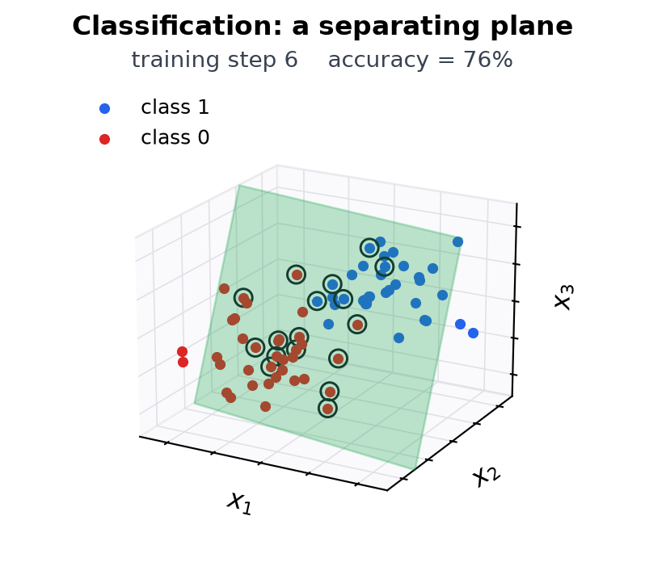
बीच मेंअंत
क्या देखें: यह Supervised Learning (classification) है: तीनों axes features हैं (\(x_1, x_2, x_3\)) और label रंग से दिखाया गया है (नीला class 1, लाल class 0)। हरा plane model की decision boundary है: उसके एक तरफ़ model "class 1" कहता है, दूसरी तरफ़ "class 0"। शुरू में plane गलत जगह है, इसलिए बहुत से बिंदु गलत तरफ़ हैं (उन पर काला घेरा है)। Training के साथ plane घूमकर दोनों बादलों के बीच आ जाता है और accuracy बढ़ती जाती है। बादल थोड़े मिले हुए हैं, इसलिए कुछ बिंदु अंत तक गलत तरफ़ रह जाते हैं: असली data में 100% accuracy ज़रूरी नहीं।
चलती animation: cs229_hindi/out/anim/L01_2.gif
Animation 1.3Clustering: k-means finds groups
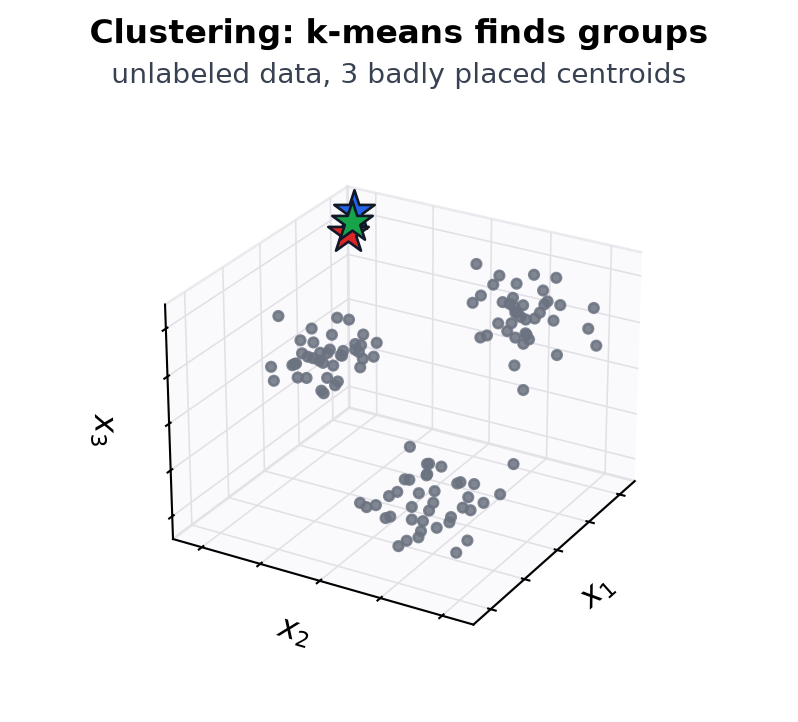
शुरुआत
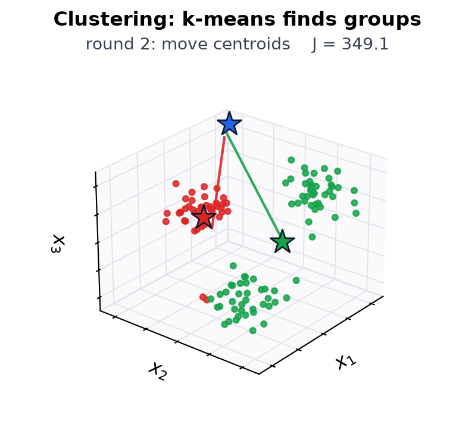
बीच मेंअंत
क्या देखें: यह Unsupervised Learning है: तीनों axes features हैं और कोई label नहीं है, इसलिए शुरू में सारे बिंदु स्लेटी हैं। तीन तारे centroids हैं, जिन्हें जान-बूझकर एक ही कोने से शुरू किया गया है। k-means दो काम बारी-बारी से दोहराता है: हर बिंदु को सबसे पास वाले centroid का रंग देना, फिर हर centroid को अपने रंग के बिंदुओं के mean पर ले जाना। कुछ ही rounds में तारे तीनों झुंडों के बीच जा बैठते हैं और रंग बदलना बंद हो जाता है। किसी ने algorithm को नहीं बताया था कि झुंड कहाँ हैं।
चलती animation: cs229_hindi/out/anim/L01_3.gif
Animation 1.4RL: value spreads from the reward
शुरुआतबीच में
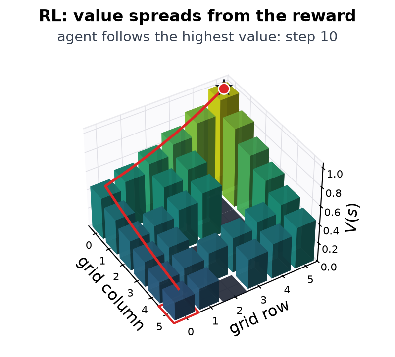
अंत
क्या देखें: यह Reinforcement Learning की झलक है: ज़मीन एक \(6 \times 6\) grid है जिसका हर खाना एक state है (काले खाने दीवारें हैं), और सिर्फ़ सुनहरे तारे वाले खाने पर reward \(+1\) मिलता है। हर खंभे की ऊँचाई उस state की value\(V(s)\) है, यानी वहाँ से आगे मिलने वाला कुल discounted reward। हर sweep में value goal से एक खाना और पीछे फैलती है, और दूरी के साथ \(\gamma\) के हिसाब से घटती जाती है। खंभे बन जाने के बाद लाल agent बस हर कदम पर सबसे ऊँचे पड़ोसी खंभे की ओर चलता है और दीवारों का चक्कर काटकर goal तक पहुँच जाता है। उसे किसी ने रास्ता नहीं बताया था, सिर्फ़ reward बताया था।
चलती animation: cs229_hindi/out/anim/L01_4.gif
Animation 1.5Underfit, good fit, overfit
शुरुआतबीच मेंअंत
क्या देखें: काले बिंदु training set हैं और नारंगी बिंदु test set, जिन्हें model ने training के समय नहीं देखा। Surface एक polynomial model है जिसकी degree (complexity) बढ़ती जा रही है। Degree 1 पर surface एक plane है जो data का मोड़ पकड़ ही नहीं पाता: train error और test error दोनों बड़े हैं (underfitting), जबकि degree 3 पर दोनों छोटे हैं। Degree और बढ़ाने पर surface हर काले बिंदु को छूने के लिए बुरी तरह लहराने लगती है: train error लगभग zero हो जाता है, पर नारंगी रेखाएँ लंबी हो जाती हैं और test error उछल जाता है (overfitting)। असली कसौटी test error है, train error नहीं।
चलती animation: cs229_hindi/out/anim/L01_5.gif
भाग 3
Python Example
इसे खुद चलाएँ: cs229_hindi/.venv/bin/python cs229_hindi/chapters/L01_introduction/example.py
"""Lecture 1 example: Machine Learning की शब्दावली, चलते हुए code में (सिर्फ़ NumPy).तीन छोटे प्रयोग, तीनों synthetic data पर: A. Supervised Learning, regression: polynomial model, underfitting और overfitting B. Supervised Learning, classification: k-Nearest Neighbours (k-NN) शुरू से C. Unsupervised Learning, clustering: k-means शुरू से"""importnumpyasnpimportmatplotlib.pyplotaspltrng=np.random.default_rng(7)deftrain_test_split(X,y,test_fraction=0.3):"""Data को shuffle करके दो हिस्सों में बाँटें: training set और test set।"""idx=rng.permutation(len(y))n_test=int(round(test_fraction*len(y)))returnX[idx[n_test:]],y[idx[n_test:]],X[idx[:n_test]],y[idx[:n_test]]# ---------- A. Regression: y एक continuous संख्या है ----------# सच्चा function sin(2*pi*x) है, पर model को यह नहीं पता: उसे सिर्फ़ noisy examples मिलते हैं।x=rng.uniform(0,1,40)# featurey=np.sin(2*np.pi*x)+rng.normal(0,0.25,40)# target = pattern + noisex_tr,y_tr,x_te,y_te=train_test_split(x,y)defpoly_features(x,degree):"""x से features [1, x, x^2, ..., x^degree] बनाएँ।"""returnnp.vander(x,degree+1,increasing=True)deffit(x,y,degree):"""Training: वह theta ढूँढें जो squared-error cost J(theta) को minimize करे।"""returnnp.linalg.lstsq(poly_features(x,degree),y,rcond=None)[0]defmse(theta,x,y):"""Prediction h(x) निकालें और औसत squared error नापें।"""returnnp.mean((poly_features(x,len(theta)-1)@theta-y)**2)print("A. Regression (polynomial model): model की complexity बढ़ाने का असर")print(" degree parameters train error test error")models={}fordegreein(1,3,9,15):theta=models[degree]=fit(x_tr,y_tr,degree)print(f" {degree:>6}{degree+1:>10}{mse(theta,x_tr,y_tr):11.4f}{mse(theta,x_te,y_te):10.4f}")print(" degree 1: दोनों errors बड़े (underfitting)। degree 15: train error सबसे छोटा,")print(" पर test error फिर बढ़ गया (overfitting)। degree 3 सबसे अच्छा generalize करती है।")# ---------- B. Classification: y एक category है (0 या 1) ----------m=200labels=rng.integers(0,2,m)centers=np.array([[0.0,0.0],[2.0,2.0]])points=centers[labels]+rng.normal(0,1.1,(m,2))# दो features, दो आपस में मिले हुए बादलP_tr,l_tr,P_te,l_te=train_test_split(points,labels)defknn_predict(P_train,l_train,P_new,k):"""हर नए point के k सबसे पास वाले training points देखें और बहुमत का label दें।"""dist=np.linalg.norm(P_new[:,None,:]-P_train[None,:,:],axis=2)nearest=np.argsort(dist,axis=1)[:,:k]return(l_train[nearest].mean(axis=1)>0.5).astype(int)print("\nB. Classification (k-NN): 140 training examples, 60 test examples")print(" k train accuracy test accuracy")forkin(1,5,25):acc_tr=np.mean(knn_predict(P_tr,l_tr,P_tr,k)==l_tr)acc_te=np.mean(knn_predict(P_tr,l_tr,P_te,k)==l_te)print(f" {k:<4}{acc_tr:14.3f}{acc_te:13.3f}")print(" k = 1 training set को रट लेता है (100%), पर नए data पर सबसे कमज़ोर है।")# ---------- C. Clustering: कोई label नहीं, सिर्फ़ x ----------true_centers=np.array([[0.0,0.0],[4.0,0.5],[2.0,3.5]])data=np.vstack([c+rng.normal(0,0.7,(60,2))forcintrue_centers])# labels फेंक दिए गएdefkmeans(X,k,iters=20):mu=X[rng.choice(len(X),k,replace=False)].copy()# शुरुआत: k random points को centroid मानेंhistory=[]for_inrange(iters):c=np.linalg.norm(X[:,None,:]-mu[None,:,:],axis=2).argmin(axis=1)# 1. सबसे पास का centroidhistory.append(np.sum((X-mu[c])**2))# J(c, mu), centroids हिलाने से पहलेnew_mu=np.array([X[c==j].mean(axis=0)forjinrange(k)])# 2. centroid = meanifnp.allclose(new_mu,mu):breakmu=new_mureturnmu,c,historymu,cluster,J_history=kmeans(data,3)print("\nC. Clustering (k-means, k = 3): हर iteration पर J(c, mu)")print(" "+" ".join(f"{J:.1f}"forJinJ_history))print(" मिले centroids :"," ".join(f"({a:5.2f}, {b:5.2f})"fora,binmu[np.argsort(mu[:,0])]))print(" असली centers :"," ".join(f"({a:5.2f}, {b:5.2f})"fora,bintrue_centers[np.argsort(true_centers[:,0])]))# ---------- D. Plots ----------fig,axes=plt.subplots(1,3,figsize=(13,4))grid=np.linspace(0,1,300)axes[0].scatter(x_tr,y_tr,s=18,color="black",label="training set")axes[0].scatter(x_te,y_te,s=18,color="tab:orange",label="test set")fordegree,stylein((1,":"),(3,"-"),(15,"--")):axes[0].plot(grid,poly_features(grid,degree)@models[degree],style,label=f"degree {degree}")axes[0].set(ylim=(-2,2),xlabel="x (feature)",ylabel="y (target)",title="A. Regression: under / good / overfit")axes[0].legend(fontsize=8)g1,g2=np.meshgrid(np.linspace(-3,5,120),np.linspace(-3,5,120))zz=knn_predict(P_tr,l_tr,np.c_[g1.ravel(),g2.ravel()],25).reshape(g1.shape)axes[1].contourf(g1,g2,zz,levels=[-0.5,0.5,1.5],colors=["#fecaca","#bfdbfe"],alpha=0.6)axes[1].scatter(*P_te.T,c=np.where(l_te==1,"tab:blue","tab:red"),s=18,edgecolor="white",linewidth=0.4)axes[1].set(xlabel="x1",ylabel="x2",title="B. Classification: k-NN (k=25), test points")axes[2].scatter(*data.T,c=cluster,cmap="viridis",s=14)axes[2].scatter(*mu.T,marker="*",s=260,color="red",edgecolor="black",label="centroids")axes[2].set(xlabel="x1",ylabel="x2",title="C. Clustering: k-means")axes[2].legend()fig.tight_layout()fig.savefig("result.png",dpi=130)
OUTPUT
A. Regression (polynomial model): model की complexity बढ़ाने का असर
degree parameters train error test error
1 2 0.3058 0.4411
3 4 0.0308 0.0692
9 10 0.0214 0.0749
15 16 0.0142 0.1424
degree 1: दोनों errors बड़े (underfitting)। degree 15: train error सबसे छोटा,
पर test error फिर बढ़ गया (overfitting)। degree 3 सबसे अच्छा generalize करती है।
B. Classification (k-NN): 140 training examples, 60 test examples
k train accuracy test accuracy
1 1.000 0.833
5 0.936 0.867
25 0.929 0.867
k = 1 training set को रट लेता है (100%), पर नए data पर सबसे कमज़ोर है।
C. Clustering (k-means, k = 3): हर iteration पर J(c, mu)
986.8 722.8 716.6 715.4 710.6 698.4 593.7 214.8 157.5
मिले centroids : (-0.21, -0.01) ( 1.72, 3.60) ( 4.11, 0.67)
असली centers : ( 0.00, 0.00) ( 2.00, 3.50) ( 4.00, 0.50)
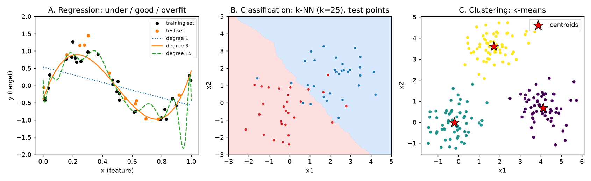
LECTURE 2
Supervised Learning Setup और Linear Regression
भाग 1
Theory
इस lecture में: Supervised Learning का पूरा ढाँचा (training set, hypothesis, cost function), Linear Regression, Gradient Descent (Batch और Stochastic), Normal Equations, और यह कि Least Squares असल में Maximum Likelihood क्यों है।
1. एक line में idea
हमारे पास कुछ उदाहरण हैं जिनमें input \(x\) और सही जवाब \(y\) दोनों दिए हैं। हमें ऐसा function \(h\) सीखना है जो नए \(x\) के लिए \(y\) का अच्छा अंदाज़ा लगा सके। जब \(y\) एक continuous संख्या हो (जैसे घर की कीमत), तो इस problem को regression कहते हैं। जब \(y\) कुछ गिनी-चुनी categories में से एक हो (जैसे spam / not spam), तो इसे classification कहते हैं।
Linear Regression सबसे सरल regression model है: हम मान लेते हैं कि \(y\) लगभग \(x\) के features का एक weighted sum है, और फिर data से सबसे अच्छे weights ढूँढते हैं।
2. Setup और Notation
Symbol
मतलब
\(x^{(i)}\)
\(i\)-वें training example के input features (एक vector)
\(y^{(i)}\)
\(i\)-वें example का target (सही जवाब)
\((x^{(i)}, y^{(i)})\)
एक training example
\(m\)
training examples की संख्या
\(n\)
features की संख्या
\(\theta\)
parameters (weights), जिन्हें हमें सीखना है
\(h_\theta(x)\)
hypothesis, यानी model का prediction
Linear Regression में hypothesis यह है (हम \(x_0 = 1\) मान लेते हैं ताकि intercept \(\theta_0\) भी उसी formula में आ जाए):
\(J(\theta)\) जितना छोटा, fit उतना अच्छा। Linear Regression के लिए \(J\) एक convex कटोरे (bowl) जैसा होता है, इसलिए इसका सिर्फ़ एक ही global minimum है और कोई local minimum नहीं।
4. Gradient Descent
कटोरे की तली तक पहुँचने का तरीका: जहाँ खड़े हैं वहाँ से सबसे तेज़ ढलान की दिशा में छोटा कदम लें, और यही बार-बार दोहराएँ।
ध्यान दें कि update error \((y - h_\theta(x))\) के अनुपात में है: prediction लगभग सही हो तो बदलाव छोटा, बहुत गलत हो तो बदलाव बड़ा।
Batch बनाम Stochastic
Batch Gradient Descent: हर step में पूरे training set का जोड़ लेते हैं: \(\theta_j := \theta_j + \alpha \sum_{i=1}^{m} (y^{(i)} - h_\theta(x^{(i)}))\, x_j^{(i)}\)। रास्ता smooth होता है, पर \(m\) बड़ा हो तो हर step महँगा पड़ता है।
Stochastic Gradient Descent (SGD): हर step में सिर्फ़ एक example देखकर update कर देते हैं। रास्ता टेढ़ा-मेढ़ा (noisy) होता है और minimum के आस-पास घूमता रहता है, पर बड़े data पर यह बहुत जल्दी अच्छे \(\theta\) के पास पहुँच जाता है।
Learning rate का असर
\(\alpha\) बहुत छोटा: सही दिशा, पर बहुत धीमा।
\(\alpha\) ठीक-ठाक: तेज़ी से minimum तक।
\(\alpha\) बहुत बड़ा: कदम minimum के पार निकल जाते हैं, \(J\) घटने की जगह उछलता है या बढ़ता ही जाता है (diverge)।
5. Normal Equations
Linear Regression में minimum सीधे formula से भी निकल सकता है। सारे examples को matrix \(X\) (हर row एक \(x^{(i)T}\)) और vector \(\vec{y}\) में रखें। तब
Geometric मतलब:\(X\theta\) हमेशा \(X\) के columns के span (एक plane) में रहता है। सबसे अच्छा \(\theta\) वह है जिसके लिए \(X\theta\), \(\vec{y}\) का उस plane पर projection हो। तब residual \(\vec{y} - X\theta\) plane के perpendicular होता है, यानी \(X^T(\vec{y} - X\theta) = 0\)। यही Normal Equation है।
Gradient Descent
Normal Equations
\(\alpha\) चुनना
ज़रूरी
नहीं
Iterations
बहुत
एक ही बार में
\(n\) बहुत बड़ा हो
ठीक चलता है
\((X^TX)^{-1}\) लगभग \(O(n^3)\), धीमा
दूसरे models
लगभग हर जगह चलता है
सिर्फ़ Linear Regression जैसे cases
6. Probabilistic Interpretation: squared error ही क्यों?
मान लीजिए \(y^{(i)} = \theta^T x^{(i)} + \epsilon^{(i)}\), जहाँ noise \(\epsilon^{(i)} \sim \mathcal{N}(0, \sigma^2)\) है और सारे examples i.i.d. हैं। तब
\(\ell(\theta)\) को maximize करना ठीक वही है जो \(J(\theta)\) को minimize करना। यानी Gaussian noise की assumption के साथ, Least Squares ही Maximum Likelihood Estimate है। जवाब \(\sigma^2\) पर निर्भर नहीं करता।
7. Practical बातें और आम गलतियाँ
Feature scaling: अगर एक feature हज़ारों में है और दूसरा इकाइयों में, तो \(J\) का कटोरा बहुत लंबा-पतला हो जाता है और Gradient Descent zig-zag करता है। हर feature को mean 0 और standard deviation 1 पर ले आएँ।
\(J\) को हर iteration पर plot करें: सही \(\alpha\) पर \(J\) हर step में घटना चाहिए। बढ़ रहा है तो \(\alpha\) छोटा करें।
\(X^TX\) invertible न हो (जैसे duplicate features या \(m < n\)): pseudo-inverse या regularization लगाएँ (Lecture 8)।
Linear का मतलब parameters में linear:\(x^2\), \(\log x\) जैसे नए features जोड़कर यही model curves भी fit कर सकता है।
8. खुद से पूछें
\(J(\theta)\) में \(\frac{1}{2}\) क्यों रखा गया है? (संकेत: derivative लेते समय क्या होता है?)
अगर सारे examples के लिए \(h_\theta(x^{(i)}) = y^{(i)}\) हो जाए, तो LMS update क्या करेगा?
SGD minimum पर पूरी तरह रुकता क्यों नहीं, और इसे रोकने के लिए \(\alpha\) के साथ क्या किया जा सकता है?
भाग 2
3D Animations
Animation 2.1Fitting a plane with GD
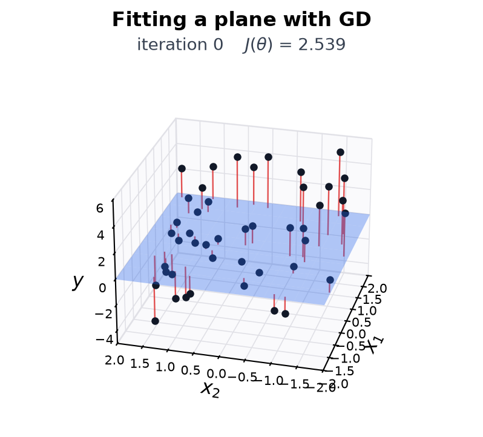
शुरुआतबीच मेंअंत
क्या देखें: दो features \(x_1, x_2\) और target \(y\) वाले data points 3D में बिखरे हैं। नीला plane hypothesis \(h_\theta(x) = \theta_0 + \theta_1 x_1 + \theta_2 x_2\) है। शुरू में \(\theta = 0\) है, इसलिए plane सपाट है। हर iteration में Gradient Descent plane को थोड़ा घुमाता और उठाता है। लाल रेखाएँ residuals (errors) हैं: देखिए कैसे वे छोटी होती जाती हैं और \(J(\theta)\) गिरता जाता है।
चलती animation: cs229_hindi/out/anim/L02_1.gif
Animation 2.2Gradient Descent on J(\(\theta\))
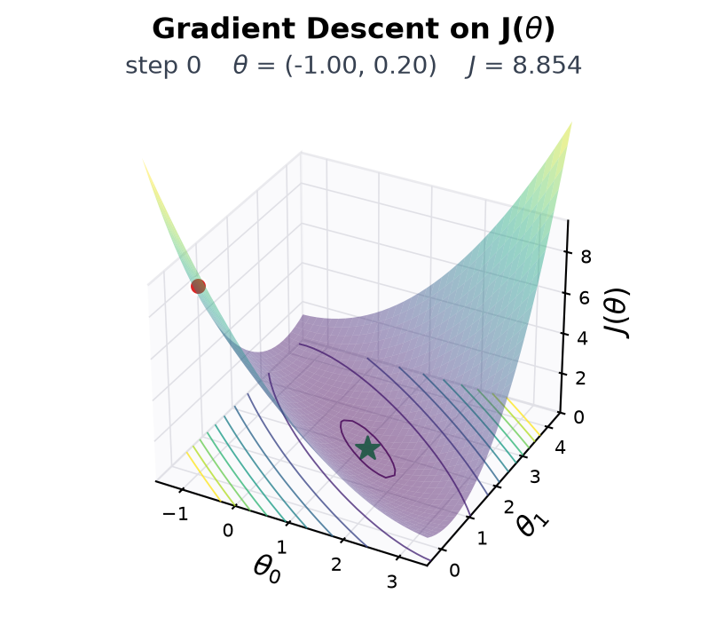
शुरुआतबीच मेंअंत
क्या देखें: अब हम data की जगह parameter space देख रहे हैं: ज़मीन पर \(\theta_0\) और \(\theta_1\), और ऊँचाई \(J(\theta)\)। Surface एक convex कटोरा है। लाल गेंद वर्तमान \(\theta\) है। हर step में वह सबसे तेज़ ढलान की दिशा में चलती है: पहले तेज़ी से घाटी में उतरती है, फिर लंबी-पतली घाटी के साथ धीरे-धीरे minimum (हरा तारा) की ओर बढ़ती है। नीचे फ़र्श पर contours और रास्ते की परछाईं भी दिख रही है।
चलती animation: cs229_hindi/out/anim/L02_2.gif
Animation 2.3Learning rate \(\alpha\): small / good / large
शुरुआत
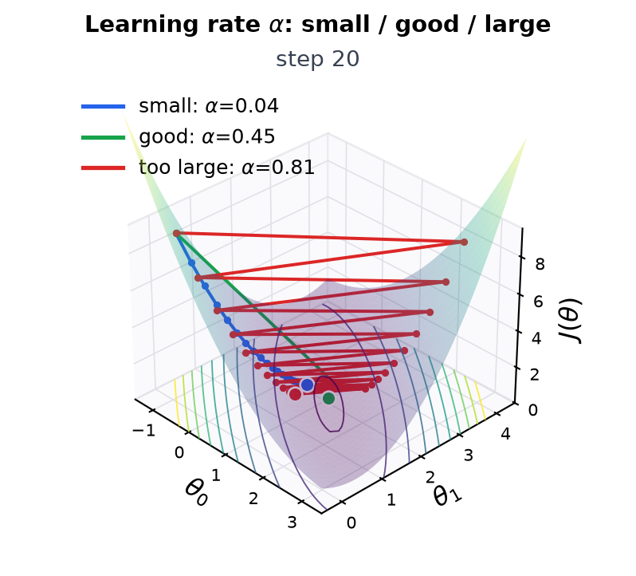
बीच में
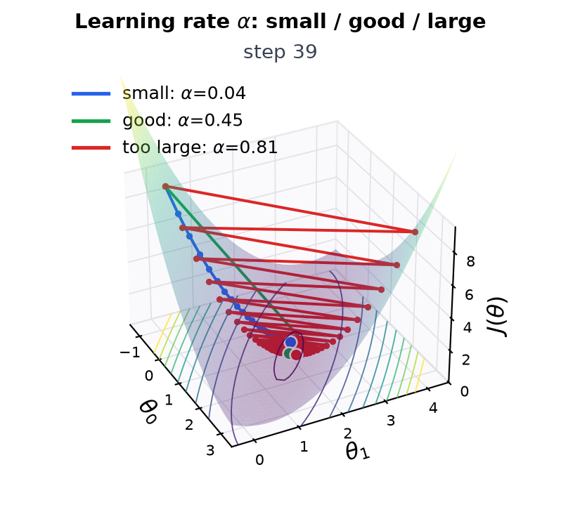
अंत
क्या देखें: एक ही जगह से तीन गेंदें छोड़ी गई हैं, बस \(\alpha\) अलग है। नीली (\(\alpha\) छोटा) सही दिशा में है पर रेंग रही है। हरी (\(\alpha\) ठीक) जल्दी तली तक पहुँच जाती है। लाल (\(\alpha\) बड़ा) हर कदम में घाटी के पार कूद जाती है और दीवारों के बीच zig-zag करती रहती है। \(\alpha\) इससे थोड़ा और बड़ा हो तो यही उछाल हर step में बढ़ेगा और algorithm diverge कर जाएगा।
चलती animation: cs229_hindi/out/anim/L02_3.gif
Animation 2.4Batch GD vs Stochastic GD
शुरुआत
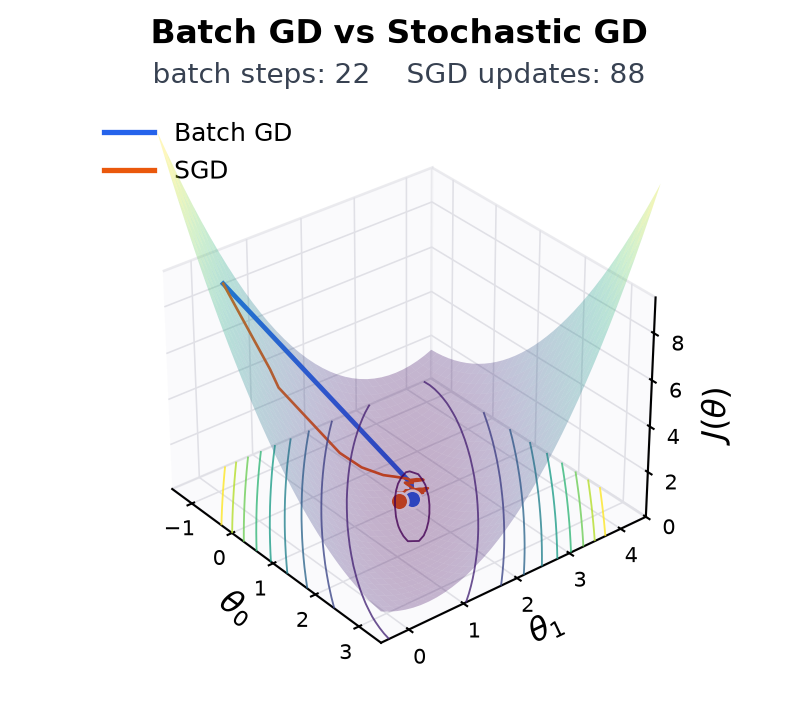
बीच में
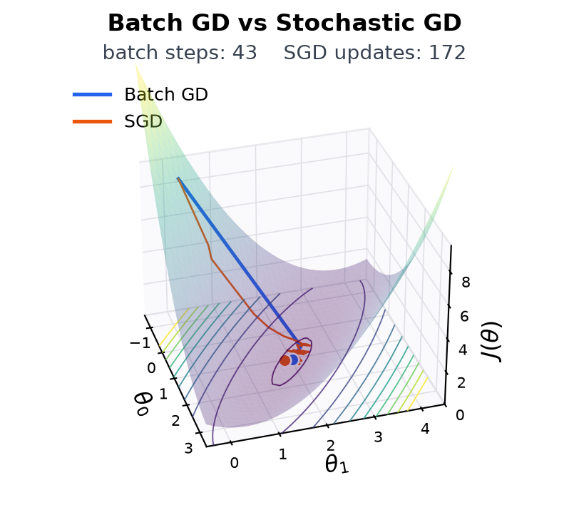
अंत
क्या देखें:नीला रास्ता Batch Gradient Descent है: हर step में पूरे data का gradient, इसलिए रास्ता smooth है। नारंगी रास्ता SGD है: हर update सिर्फ़ एक random example से, इसलिए रास्ता लड़खड़ाता है। फिर भी वह उसी घाटी में पहुँचता है और अंत में minimum के आस-पास मँडराता रहता है, पूरी तरह रुकता नहीं। यहाँ एक frame में Batch का एक step और SGD के चार सस्ते updates दिखाए गए हैं।
चलती animation: cs229_hindi/out/anim/L02_4.gif
Animation 2.5Normal Equations = projection
शुरुआतबीच में
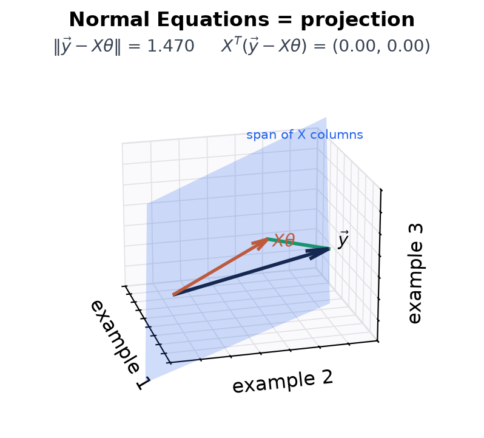
अंत
क्या देखें: यहाँ axes तीन training examples हैं (\(m=3\)), इसलिए \(\vec{y}\) 3D में एक vector है (काला)। नीला plane \(X\) के दो columns का span है: \(X\theta\) हमेशा इसी plane में रहता है। नारंगी बिंदु \(X\theta\) plane पर चलते हुए उस जगह पहुँचता है जहाँ लाल residual \(\vec{y} - X\theta\) सबसे छोटा है। उस पल residual plane के ठीक perpendicular हो जाता है: \(X^T(\vec{y} - X\theta) = 0\)। यही Normal Equation है।
चलती animation: cs229_hindi/out/anim/L02_5.gif
भाग 3
Python Example
इसे खुद चलाएँ: cs229_hindi/.venv/bin/python cs229_hindi/chapters/L02_linear_regression/example.py
"""Lecture 2 example: Linear Regression शुरू से (सिर्फ़ NumPy).घर के size और bedrooms से कीमत का अंदाज़ा। तीन तरीकों से theta निकालते हैं:Batch Gradient Descent, Stochastic Gradient Descent, और Normal Equations।"""importnumpyasnpimportmatplotlib.pyplotaspltrng=np.random.default_rng(42)# ---------- 1. Data बनाएँ: price = 50 + 0.12*size + 15*bedrooms + noise ----------m=200size=rng.uniform(500,3500,m)# square feetbedrooms=rng.integers(1,6,m).astype(float)price=50+0.12*size+15*bedrooms+rng.normal(0,25,m)# हज़ार dollars में# ---------- 2. Train / test split ----------idx=rng.permutation(m)train,test=idx[:160],idx[160:]# ---------- 3. Feature scaling (mean 0, std 1), सिर्फ़ training data के statistics से ----------features=np.c_[size,bedrooms]mu,sigma=features[train].mean(axis=0),features[train].std(axis=0)defdesign_matrix(f):"""Scale करें और x0 = 1 वाला column जोड़ें।"""returnnp.c_[np.ones(len(f)),(f-mu)/sigma]X_train,y_train=design_matrix(features[train]),price[train]X_test,y_test=design_matrix(features[test]),price[test]defcost(theta,X,y):"""J(theta) = (1/2m) * sum (h(x) - y)^2"""return0.5*np.mean((X@theta-y)**2)# ---------- 4. Batch Gradient Descent ----------defbatch_gd(X,y,alpha=0.1,iters=300):theta=np.zeros(X.shape[1])history=[]for_inrange(iters):gradient=X.T@(X@theta-y)/len(y)# पूरे data का gradienttheta-=alpha*gradienthistory.append(cost(theta,X,y))returntheta,history# ---------- 5. Stochastic Gradient Descent (LMS rule, एक बार में एक example) ----------defsgd(X,y,alpha=0.01,epochs=20):theta=np.zeros(X.shape[1])history=[]for_inrange(epochs):foriinrng.permutation(len(y)):error=y[i]-X[i]@thetatheta+=alpha*error*X[i]# theta_j := theta_j + alpha * error * x_jhistory.append(cost(theta,X,y))returntheta,history# ---------- 6. Normal Equations: X^T X theta = X^T y ----------defnormal_equations(X,y):returnnp.linalg.solve(X.T@X,X.T@y)theta_gd,hist_gd=batch_gd(X_train,y_train)theta_sgd,hist_sgd=sgd(X_train,y_train)theta_ne=normal_equations(X_train,y_train)defr2(theta,X,y):return1-np.sum((y-X@theta)**2)/np.sum((y-y.mean())**2)print("Method theta0 theta1 theta2 train J test R^2")forname,thin[("Batch GD",theta_gd),("SGD",theta_sgd),("Normal Equations",theta_ne)]:print(f"{name:<17}{th[0]:8.2f}{th[1]:8.2f}{th[2]:8.2f}{cost(th,X_train,y_train):9.2f} "f"{r2(th,X_test,y_test):10.4f}")# Scaled theta को वापस असली units में बदलें ताकि मतलब समझ आएslope=theta_ne[1:]/sigmaintercept=theta_ne[0]-np.sum(theta_ne[1:]*mu/sigma)print(f"\nअसली units में: price = {intercept:.1f} + {slope[0]:.3f}*size + {slope[1]:.1f}*bedrooms")print("(data बनाते समय सच यह था: price = 50 + 0.120*size + 15*bedrooms)")new_house=np.array([[2000.0,3.0]])print(f"\n2000 sq ft, 3 bedrooms वाले घर का prediction: {(design_matrix(new_house)@theta_ne)[0]:.1f} हज़ार")# ---------- 7. Learning rate का असर ----------print("\nअलग-अलग alpha पर 50 iterations के बाद J:")foralphain(0.001,0.01,0.1,1.0,2.1):_,h=batch_gd(X_train,y_train,alpha=alpha,iters=50)note=" <- diverge!"ifh[-1]>h[0]else""print(f" alpha = {alpha:<6} J = {h[-1]:.4g}{note}")# ---------- 8. Plots ----------fig,axes=plt.subplots(1,2,figsize=(10,4))axes[0].plot(hist_gd,label="Batch GD (per iteration)")axes[0].plot(np.linspace(0,len(hist_gd),len(hist_sgd)),hist_sgd,"o-",ms=3,label="SGD (per epoch, rescaled)")axes[0].axhline(cost(theta_ne,X_train,y_train),color="gray",ls="--",label="Normal Equations")axes[0].set(yscale="log",xlabel="iteration",ylabel="J(theta)",title="Cost during training")axes[0].legend()pred=X_test@theta_neaxes[1].scatter(y_test,pred,s=18)lims=[y_test.min(),y_test.max()]axes[1].plot(lims,lims,"r--",label="perfect prediction")axes[1].set(xlabel="actual price",ylabel="predicted price",title="Test set: predicted vs actual")axes[1].legend()fig.tight_layout()fig.savefig("result.png",dpi=130)
OUTPUT
Method theta0 theta1 theta2 train J test R^2
Batch GD 329.80 101.82 23.79 321.58 0.9431
SGD 329.88 101.20 25.90 324.09 0.9429
Normal Equations 329.80 101.82 23.79 321.58 0.9431
असली units में: price = 49.0 + 0.120*size + 15.6*bedrooms
(data बनाते समय सच यह था: price = 50 + 0.120*size + 15*bedrooms)
2000 sq ft, 3 bedrooms वाले घर का prediction: 336.8 हज़ार
अलग-अलग alpha पर 50 iterations के बाद J:
alpha = 0.001 J = 5.43e+04
alpha = 0.01 J = 2.222e+04
alpha = 0.1 J = 323.3
alpha = 1.0 J = 321.6
alpha = 2.1 J = 6.684e+13 <- diverge!
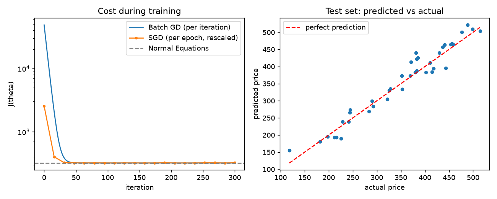
LECTURE 5
Gaussian Discriminant Analysis और Naive Bayes
भाग 1
Theory
इस lecture में: Discriminative और Generative learning का फ़र्क, Bayes rule से prediction, multivariate Gaussian, Gaussian Discriminant Analysis (GDA) और उसके Maximum Likelihood estimates, GDA की linear decision boundary, GDA बनाम Logistic Regression, और discrete features के लिए Naive Bayes (spam filter का उदाहरण)।
1. एक line में idea
अब तक के algorithms (जैसे Logistic Regression) सीधे यह सीखते थे कि \(x\) दिया हो तो \(y\) क्या होगा। वे दो classes के बीच की सीमा ढूँढते थे। Generative algorithm उल्टी तरफ़ से सोचता है: वह हर class का अलग नक्शा बनाता है कि उस class के examples कैसे दिखते हैं। नया \(x\) आए तो वह पूछता है कि यह किस class के नक्शे से ज़्यादा मेल खाता है।
मान लीजिए हाथी और कुत्ते पहचानने हैं। Discriminative तरीका दोनों को अलग करने वाली रेखा ढूँढता है। Generative तरीका पहले हाथियों को देखकर हाथी का model बनाता है, फिर कुत्तों को देखकर कुत्ते का model, और नए जानवर को दोनों models से मिलाकर देखता है।
इस lecture में दो generative algorithms हैं। GDA तब काम आता है जब features continuous हों और हर class का data Gaussian जैसा हो। Naive Bayes तब, जब features discrete हों, जैसे "email में यह शब्द है या नहीं"।
2. Discriminative बनाम Generative
क्या सीखता है
उदाहरण
Discriminative
सीधे \(p(y \mid x)\), या \(x\) से label तक का map
Logistic Regression, Perceptron
Generative
\(p(x \mid y)\) (हर class का model) और \(p(y)\) (class prior)
GDA, Naive Bayes
Generative model से prediction के लिए Bayes rule लगाते हैं:
अगर हमें सिर्फ़ सबसे संभावित class चाहिए, तो denominator \(p(x)\) निकालने की ज़रूरत नहीं। वह \(y\) पर निर्भर नहीं करता, इसलिए दोनों classes के लिए एक ही है और तुलना पर असर नहीं डालता:
\(n\) dimensions का Gaussian \(\mathcal{N}(\mu, \Sigma)\) दो चीज़ों से तय होता है: mean vector \(\mu \in \mathbb{R}^n\) और covariance matrix \(\Sigma \in \mathbb{R}^{n \times n}\) (symmetric और positive definite)। इसकी density है:
यहाँ \(|\Sigma|\) का मतलब \(\Sigma\) का determinant है। इस distribution के लिए \(E[X] = \mu\) और \(\mathrm{Cov}(X) = E\left[(X-\mu)(X-\mu)^T\right] = \Sigma\)।
\(\mu\) बदलने से पहाड़ी (density का उभार) सिर्फ़ खिसकती है, आकार नहीं बदलता। आकार \(\Sigma\) तय करता है:
\(\Sigma\)
contours कैसे दिखते हैं
\(I\) (identity)
गोल घेरे
\(cI\), \(c\) छोटा या बड़ा
गोल ही, पर छोटा \(c\): पतली और ऊँची पहाड़ी; बड़ा \(c\): चौड़ी और नीची (कुल volume हमेशा 1)
Diagonal, entries अलग-अलग
axes की दिशा में खिंचे ellipse
Off-diagonal entry positive
ellipse \(x_1 = x_2\) की दिशा में झुका (\(x_1\) बढ़े तो \(x_2\) भी बढ़ता है)
Off-diagonal entry negative
ellipse उल्टी दिशा में झुका
4. GDA Model
Classification problem है, \(y \in \{0, 1\}\) और \(x \in \mathbb{R}^n\)। GDA यह मान लेता है:
\[\begin{aligned} y &\sim \mathrm{Bernoulli}(\phi) \\ x \mid y=0 &\sim \mathcal{N}(\mu_0, \Sigma) \\ x \mid y=1 &\sim \mathcal{N}(\mu_1, \Sigma) \end{aligned}\]
यानी \(p(y) = \phi^y (1-\phi)^{1-y}\), और हर class एक Gaussian है। दोनों classes के mean अलग हैं (\(\mu_0\), \(\mu_1\)), पर covariance \(\Sigma\)एक ही है। Parameters हैं \(\phi, \mu_0, \mu_1, \Sigma\)।
Joint log-likelihood
Logistic Regression में हम conditional likelihood \(\prod_i p(y^{(i)} \mid x^{(i)})\) को maximize करते थे। Generative model में joint likelihood \(\prod_i p(x^{(i)}, y^{(i)})\) को maximize करते हैं:
\(\phi\) के लिए: सिर्फ़ दूसरा sum \(\phi\) पर निर्भर है: \(\sum_i \left[ y^{(i)} \log \phi + (1 - y^{(i)}) \log(1-\phi) \right]\)। मान लें \(m_1 = \sum_i 1\{y^{(i)}=1\}\)। Derivative को zero रखें: \(\frac{m_1}{\phi} - \frac{m - m_1}{1-\phi} = 0\), जिससे \(\phi = m_1 / m\)।
\(\mu_1\) के लिए: सिर्फ़ \(y^{(i)}=1\) वाले terms बचते हैं: \(-\frac{1}{2} \sum_{i:\, y^{(i)}=1} (x^{(i)} - \mu_1)^T \Sigma^{-1} (x^{(i)} - \mu_1)\)। इसका gradient \(\Sigma^{-1} \sum_{i:\, y^{(i)}=1} (x^{(i)} - \mu_1)\) है। इसे zero रखने पर \(\mu_1\) class 1 के examples का औसत निकलता है। \(\mu_0\) के लिए भी यही।
\(\Sigma\) के लिए:\(\Sigma\) वाले terms हैं \(-\frac{m}{2} \log|\Sigma| - \frac{1}{2} \sum_i (x^{(i)} - \mu_{y^{(i)}})^T \Sigma^{-1} (x^{(i)} - \mu_{y^{(i)}})\)। अब \(\nabla_A \log|A| = A^{-1}\) का इस्तेमाल करके \(\Sigma^{-1}\) के सापेक्ष derivative लें और zero रखें: \(\frac{m}{2}\Sigma - \frac{1}{2} \sum_i (x^{(i)} - \mu_{y^{(i)}})(x^{(i)} - \mu_{y^{(i)}})^T = 0\)।
दोनों brackets खोलें। \(-\frac{1}{2} x^T \Sigma^{-1} x\) और \(+\frac{1}{2} x^T \Sigma^{-1} x\) आपस में कट जाते हैं। यही असली बात है: quadratic term गायब हो जाता है और बचता है
Decision boundary वह जगह है जहाँ \(p(y=1 \mid x) = 0.5\), यानी \(\theta^T x + \theta_0 = 0\)। यह एक सीधी line (या hyperplane) है। ध्यान दें कि prior \(\phi\) सिर्फ़ \(\theta_0\) में आता है: \(\phi\) बढ़ाने से boundary की दिशा नहीं बदलती, वह बस class 0 की तरफ़ खिसक जाती है। अगर दोनों classes के \(\Sigma\) अलग होते, तो quadratic term नहीं कटता और boundary curved होती।
6. GDA बनाम Logistic Regression
ऊपर हमने देखा कि GDA का posterior ठीक Logistic Regression वाले sigmoid रूप में है। पर दोनों algorithms एक ही data पर अलग-अलग \(\theta\) देते हैं, क्योंकि वे अलग चीज़ maximize करते हैं।
GDA \(\Rightarrow\) logistic posterior, पर उल्टा सच नहीं। अगर \(x \mid y\) Gaussian (साझा \(\Sigma\)) है तो \(p(y \mid x)\) logistic है। पर \(p(y \mid x)\) logistic होने से यह नहीं निकलता कि \(x \mid y\) Gaussian है। जैसे, \(x \mid y=0 \sim \mathrm{Poisson}(\lambda_0)\) और \(x \mid y=1 \sim \mathrm{Poisson}(\lambda_1)\) हो, तब भी posterior logistic ही होता है।
GDA की assumptions ज़्यादा मज़बूत हैं। जब वे सही (या लगभग सही) हों, तो GDA data का बेहतर इस्तेमाल करता है और कम training examples में अच्छा model दे देता है (asymptotically efficient)।
Logistic Regression ज़्यादा robust है। वह कम मानकर चलता है, इसलिए data Gaussian न हो तब भी ठीक काम करता है। बड़े training set पर वह अक्सर GDA के बराबर या उससे बेहतर रहता है।
अब features discrete हैं। उदाहरण: spam filter। एक vocabulary (शब्दों की सूची) लें जिसमें \(n\) शब्द हैं। हर email को एक binary vector \(x \in \{0,1\}^n\) से दिखाएँ: \(x_j = 1\) अगर vocabulary का \(j\)-वाँ शब्द email में है, वरना \(x_j = 0\)। \(y = 1\) का मतलब spam है।
अगर \(n = 50000\) हो तो \(x\) के \(2^{50000}\) संभव values हैं। \(p(x \mid y)\) को सीधे model करना असंभव है। इसलिए एक बहुत मज़बूत assumption लेते हैं।
Naive Bayes assumption:\(y\) दिया हो, तो सारे \(x_j\) आपस में conditionally independent हैं। यानी अगर पता है कि email spam है, तो उसमें "buy" होने की जानकारी से "price" होने की probability नहीं बदलती। Chain rule और इस assumption से:
Parameters:\(\phi_{j \mid y=1} = p(x_j = 1 \mid y = 1)\), \(\phi_{j \mid y=0} = p(x_j = 1 \mid y = 0)\) और \(\phi_y = p(y = 1)\)। कुल \(2n + 1\) parameters, \(2^n\) की जगह।
Joint likelihood \(\mathcal{L}(\phi_y, \phi_{j \mid y=0}, \phi_{j \mid y=1}) = \prod_{i=1}^{m} p(x^{(i)}, y^{(i)})\) है। इसका log लेने पर हर parameter का अपना अलग Bernoulli term बनता है, इसलिए हल ठीक GDA के \(\phi\) जैसा निकलता है: हर estimate एक अनुपात है।
जहाँ \(p(x_j \mid y=1) = \phi_{j \mid y=1}\) अगर \(x_j = 1\), और \(1 - \phi_{j \mid y=1}\) अगर \(x_j = 0\)। जिस class का posterior बड़ा हो, वही चुनें।
एक कमी: शून्य probability
मान लीजिए नए email में ऐसा शब्द है जो training set में कभी आया ही नहीं (vocabulary का शब्द \(j\))। तब \(\phi_{j \mid y=1} = 0\) और \(\phi_{j \mid y=0} = 0\)। दोनों products zero हो जाते हैं और posterior \(\frac{0}{0}\) बन जाता है। सिर्फ़ इसलिए कि कोई घटना अब तक नहीं दिखी, उसकी probability zero मान लेना गलत है। अगला lecture इसे Laplace smoothing से ठीक करता है।
Multinomial event model (झलक)
ऊपर वाला model (Bernoulli event model) सिर्फ़ यह देखता है कि शब्द आया या नहीं, कितनी बार आया यह नहीं। Text के लिए एक बेहतर model multinomial event model है। उसमें \(x_j\) email के \(j\)-वें स्थान पर आए शब्द की पहचान है, \(x_j \in \{1, \dots, |V|\}\), और \(p(x, y) = p(y) \prod_{j} p(x_j \mid y)\)। इस तरह शब्दों की गिनती भी काम आती है। इसका पूरा विवरण अगले lecture में है।
8. Practical बातें और आम गलतियाँ
Products की जगह logs जोड़ें: हज़ारों छोटी probabilities का product computer में underflow होकर 0 बन जाता है। \(\log p(y) + \sum_j \log p(x_j \mid y)\) की तुलना करें।
Gaussian assumption जाँचें: हर class के features का histogram या scatter plot देखें। Data बहुत skewed हो या उसमें outliers हों, तो mean और \(\Sigma\) बिगड़ते हैं और GDA की boundary भी। ऐसे में Logistic Regression सुरक्षित है।
\(\Sigma\) साझा है:\(\Sigma\) बनाते समय हर example में से उसकी अपनी class का mean घटाएँ, पूरे data का mean नहीं।
\(m\) छोटा, \(n\) बड़ा: तब \(\Sigma\) singular हो सकता है और \(\Sigma^{-1}\) नहीं निकलेगा।
Naive Bayes की probabilities पर ज़्यादा भरोसा न करें: independence की assumption असल में गलत होती है, इसलिए posterior अक्सर 0 या 1 के बहुत पास आता है। फिर भी class का फ़ैसला अक्सर सही होता है, और algorithm बहुत तेज़ और सरल है।
Continuous feature पर Naive Bayes: feature को कुछ buckets में बाँटकर discrete बना लें।
9. खुद से पूछें
\(\arg\max_y p(y \mid x)\) निकालते समय \(p(x)\) क्यों छोड़ सकते हैं? अगर आपको class नहीं, बल्कि probability की value चाहिए, तब भी छोड़ सकते हैं क्या?
GDA में दोनों classes का \(\Sigma\) अलग-अलग (\(\Sigma_0 \ne \Sigma_1\)) हो, तो \(a(x)\) में कौन सा term नहीं कटेगा और boundary कैसी दिखेगी?
Vocabulary में \(n = 1000\) शब्द हैं। Naive Bayes assumption के बिना \(p(x \mid y)\) के लिए कितने parameters चाहिए, और उसके साथ कितने?
भाग 2
3D Animations
Animation 5.1GDA: fitting two Gaussians
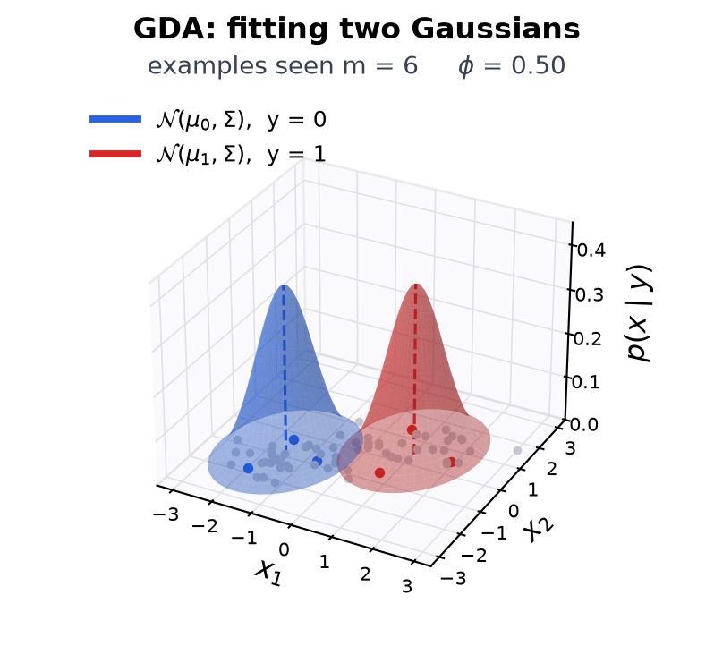
शुरुआतबीच में
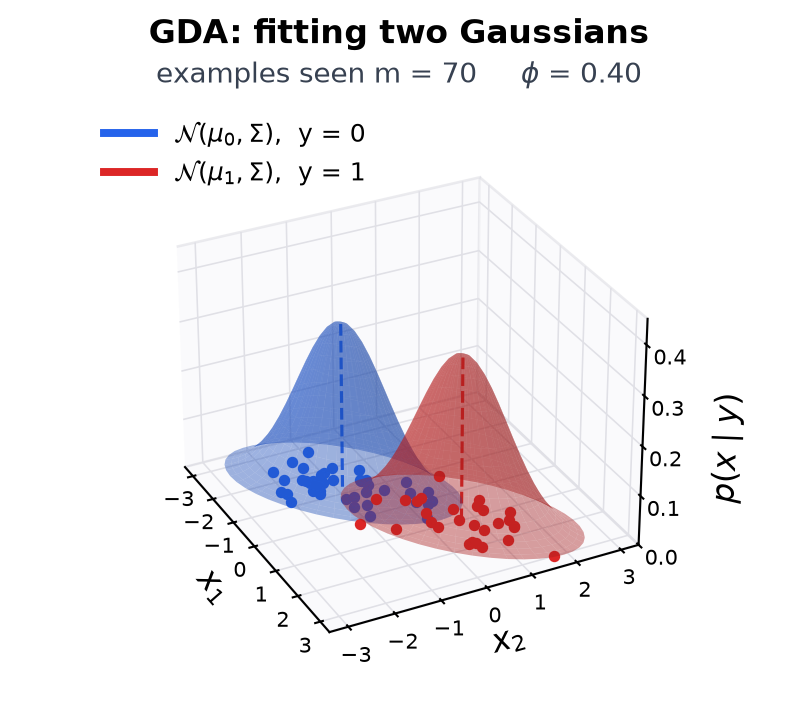
अंत
क्या देखें: फ़र्श पर दो features \(x_1, x_2\) हैं और ऊँचाई density \(p(x \mid y)\) है। Training examples एक-एक करके आते हैं (रंगीन बिंदु देखे जा चुके हैं, धूसर अभी नहीं)। हर frame में GDA वही करता है जो formulas कहते हैं: \(\phi\) के लिए गिनती, \(\mu_0\) और \(\mu_1\) के लिए हर class का औसत, और साझा \(\Sigma\)। शुरू में थोड़े data पर दोनों पहाड़ियाँ गलत जगह और गलत आकार की हैं। जैसे-जैसे \(m\) बढ़ता है, वे अपने बिंदुओं के ऊपर जम जाती हैं। ध्यान दें कि दोनों पहाड़ियों का आकार हमेशा एक जैसा है, क्योंकि \(\Sigma\) एक ही है।
चलती animation: cs229_hindi/out/anim/L05_1.gif
Animation 5.2How \(\Sigma\) shapes a Gaussian
शुरुआत
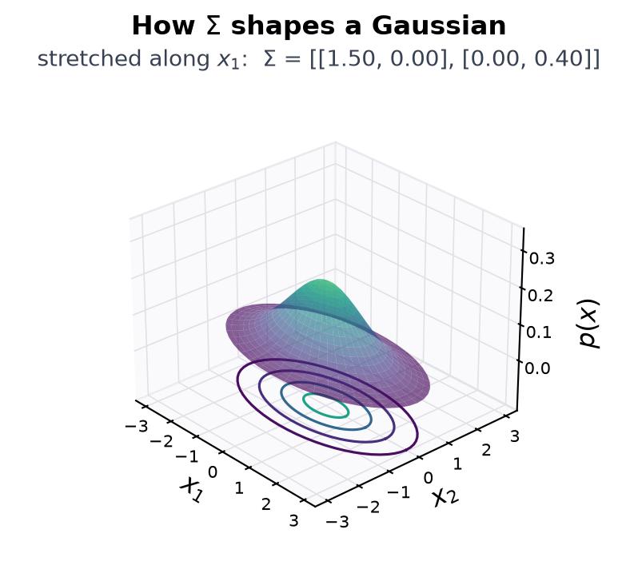
बीच में
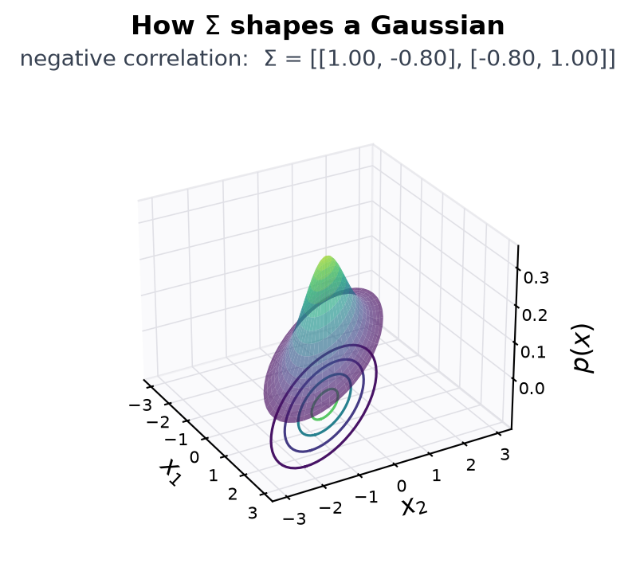
अंत
क्या देखें: एक ही Gaussian \(\mathcal{N}(0, \Sigma)\) है, बस \(\Sigma\) बदल रहा है। ऊँचाई density \(p(x)\) है और नीचे फ़र्श पर उसके contours हैं। क्रम यह है: \(\Sigma = I\) (गोल), फिर छोटा \(\Sigma\) (पतली, ऊँची पहाड़ी), फिर बड़ा \(\Sigma\) (चौड़ी, नीची), फिर diagonal entries अलग (एक axis की ओर खिंचा ellipse), और अंत में off-diagonal entries positive और फिर negative (झुका हुआ ellipse)। पहाड़ी के नीचे का कुल volume हमेशा 1 रहता है, इसलिए फैलने पर ऊँचाई घटती है।
चलती animation: cs229_hindi/out/anim/L05_2.gif
Animation 5.3Bayes rule: joint to posterior
शुरुआतबीच मेंअंत
क्या देखें: शुरू में दो पहाड़ियाँ joint densities हैं: लाल \(p(x \mid y=1)\,p(y=1)\) और नीली \(p(x \mid y=0)\,p(y=0)\)। Bayes rule कहता है कि इन्हें \(p(x)\) (दोनों के जोड़) से divide करो। Animation में यही division धीरे-धीरे होता है, और दोनों पहाड़ियाँ posterior surfaces \(p(y=1 \mid x)\) और \(p(y=0 \mid x)\) बन जाती हैं, जो sigmoid आकार की हैं। काली line वह जगह है जहाँ दोनों surfaces बराबर हैं। वह divide करने से हिलती नहीं (इसीलिए argmax के लिए \(p(x)\) छोड़ सकते हैं) और सीधी है: यही linear decision boundary है, जो अंत में ऊँचाई 0.5 पर पहुँच जाती है।
चलती animation: cs229_hindi/out/anim/L05_3.gif
Animation 5.4Class prior \(\phi\) moves the boundary
शुरुआतबीच मेंअंत
क्या देखें: दोनों class Gaussians (\(\mu_0, \mu_1, \Sigma\)) स्थिर हैं, सिर्फ़ prior \(\phi = p(y=1)\) को 0.1 से 0.9 तक बढ़ाया जा रहा है। ऊँचाई weighted densities हैं: लाल \(\phi\, p(x \mid y=1)\) और नीली \((1-\phi)\, p(x \mid y=0)\)। \(\phi\) बढ़ने पर लाल पहाड़ी ऊँची और नीली नीची होती है, इसलिए दोनों के बराबर होने की जगह (काली line) नीली class की तरफ़ खिसकती है। फ़र्श का रंग बताता है कि कहाँ कौन सी class जीतती है। Boundary की दिशा नहीं बदलती, क्योंकि \(\phi\) सिर्फ़ \(\theta_0\) में आता है; धूसर dashed line \(\phi = 0.5\) वाली boundary है।
चलती animation: cs229_hindi/out/anim/L05_4.gif
Animation 5.5Naive Bayes: counting words
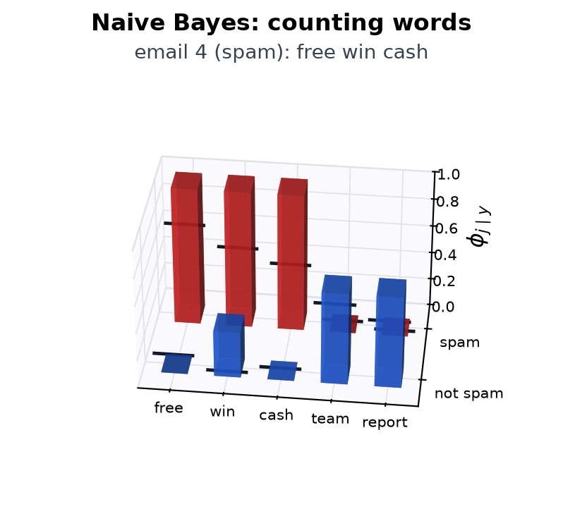
शुरुआतबीच में
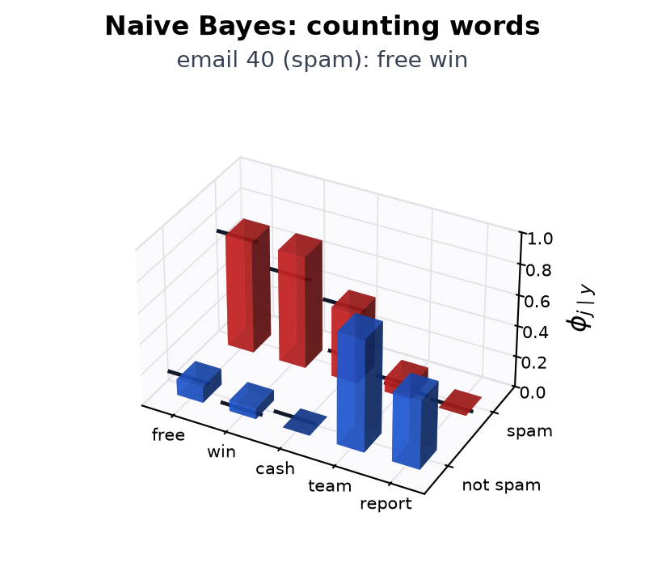
अंत
क्या देखें: यह Naive Bayes की training है। एक axis पर vocabulary के पाँच शब्द हैं, दूसरी पर class (spam या not spam), और ऊँचाई estimate \(\phi_{j \mid y}\) है, यानी उस class के कितने हिस्से emails में वह शब्द आया। Emails एक-एक करके गिने जाते हैं (ऊपर की line में अभी वाला email और उसके शब्द दिखते हैं) और हर bar बस एक अनुपात है: गिनती / उस class के emails। काली छोटी lines वे असली probabilities हैं जिनसे data बना था: शुरू में bars उछलते हैं, फिर उनके पास जम जाते हैं। ध्यान दें कि शुरू में कई bars ठीक zero हैं, सिर्फ़ इसलिए कि वह शब्द अभी तक उस class में दिखा नहीं।
चलती animation: cs229_hindi/out/anim/L05_5.gif
भाग 3
Python Example
इसे खुद चलाएँ: cs229_hindi/.venv/bin/python cs229_hindi/chapters/L05_gda_naive_bayes/example.py
"""Lecture 5 example: GDA और Naive Bayes शुरू से (सिर्फ़ NumPy).भाग A: 2 features वाले data पर GDA fit करते हैं और उसकी तुलना Logistic Regression से करते हैं, पहले Gaussian data पर (GDA की assumption सही), फिर skewed log-normal data पर (assumption गलत)।भाग B: हाथ से लिखे छोटे corpus पर Bernoulli Naive Bayes spam classifier।"""importnumpyasnpimportmatplotlib.pyplotaspltrng=np.random.default_rng(0)PHI=0.4# असली class prior p(y=1)MU0,MU1=np.array([0.0,0.0]),np.array([2.0,1.5])SIGMA=np.array([[1.0,0.6],[0.6,1.2]])# ---------- 1. Data: Gaussian (साझा Sigma) या log-normal (skewed, Gaussian नहीं) ----------defsample(m,gaussian=True):whileTrue:y=(rng.random(m)<PHI).astype(int)if2<=y.sum()<=m-2:# हर class के कम से कम 2 examples चाहिएbreakifgaussian:x=np.where(y[:,None]==1,MU1,MU0)+rng.multivariate_normal([0,0],SIGMA,m)else:x=np.exp(0.8*rng.normal(size=(m,2))+np.where(y[:,None]==1,[1.0,0.0],[0.0,1.0]))returnx,y# ---------- 2. GDA: maximum likelihood estimates (सिर्फ़ गिनती और औसत) ----------deffit_gda(x,y):phi=y.mean()mu0,mu1=x[y==0].mean(axis=0),x[y==1].mean(axis=0)centred=x-np.where(y[:,None]==1,mu1,mu0)# हर example में से उसकी class का mean घटाएँSigma=centred.T@centred/len(y)returnphi,mu0,mu1,Sigmadefgda_theta(phi,mu0,mu1,Sigma):"""GDA का posterior sigmoid(theta0 + theta^T x) है: यहाँ वही theta निकलता है।"""S_inv=np.linalg.inv(Sigma)theta=S_inv@(mu1-mu0)theta0=0.5*(mu0@S_inv@mu0-mu1@S_inv@mu1)+np.log(phi/(1-phi))returnnp.r_[theta0,theta]# ---------- 3. Logistic Regression (Newton's method), तुलना के लिए ----------deffit_logistic(x,y,iters=15,ridge=1e-3):X=np.c_[np.ones(len(x)),x]theta=np.zeros(3)for_inrange(iters):h=1/(1+np.exp(-np.clip(X@theta,-30,30)))gradient=X.T@(h-y)+ridge*theta# छोटा ridge: separable data पर theta फटे नहींhessian=(X*(h*(1-h))[:,None]).T@X+ridge*np.eye(3)theta-=np.linalg.solve(hessian,gradient)returnthetadefaccuracy(theta,x,y):returnnp.mean((theta[0]+x@theta[1:]>0)==y)# ---------- 4. एक बार fit करके देखें (m = 400, Gaussian data) ----------x_train,y_train=sample(400)x_test,y_test=sample(5000)phi,mu0,mu1,Sigma=fit_gda(x_train,y_train)theta_gda,theta_lr=gda_theta(phi,mu0,mu1,Sigma),fit_logistic(x_train,y_train)print("भाग A: GDA के सीखे parameters (m = 400)")print(f" phi = {phi:.3f} (सच {PHI}) mu0 = {mu0.round(2)} (सच {MU0}) mu1 = {mu1.round(2)} (सच {MU1})")print(f" Sigma = {Sigma.round(2).tolist()} (सच {SIGMA.tolist()})")print("\nModel theta0 theta1 theta2 test accuracy")forname,thin[("GDA (implied theta)",theta_gda),("Logistic Regression",theta_lr)]:print(f"{name:<20}{th[0]:8.2f}{th[1]:8.2f}{th[2]:8.2f}{accuracy(th,x_test,y_test):12.4f}")# ---------- 5. Training set का size बदलें: कौन कब बेहतर है? ----------sizes,trials=[8,16,32,100,1000],600results={}print(f"\nTest accuracy ({trials} trials का औसत)")print(" Gaussian data log-normal data")print(" m GDA Logistic GDA Logistic")forgaussianin(True,False):x_te,y_te=sample(4000,gaussian)forminsizes:acc=np.zeros((trials,2))fortinrange(trials):x_tr,y_tr=sample(m,gaussian)acc[t]=(accuracy(gda_theta(*fit_gda(x_tr,y_tr)),x_te,y_te),accuracy(fit_logistic(x_tr,y_tr),x_te,y_te))results[gaussian,m]=acc.mean(axis=0)forminsizes:(g1,l1),(g2,l2)=results[True,m],results[False,m]print(f"{m:6d}{g1:6.3f}{l1:6.3f}{g2:6.3f}{l2:6.3f}")print("Gaussian data: कम m पर GDA आगे (assumption सही)। Log-normal data: Logistic आगे (ज़्यादा robust)।")# ---------- 6. भाग B: Bernoulli Naive Bayes spam filter ----------spam=["win money now","free money offer","win free prize now","free offer click now","cheap money win prize"]ham=["meeting at noon","project report due","lunch at noon today","see report before meeting","free for lunch today"]vocab=sorted({wfordocinspam+hamforwindoc.split()})defto_vector(doc):"""x_j = 1 अगर vocabulary का j-वाँ शब्द email में है (vocabulary से बाहर के शब्द छूट जाते हैं)।"""returnnp.array([windoc.split()forwinvocab],dtype=float)X_nb=np.array([to_vector(d)fordinspam+ham])y_nb=np.r_[np.ones(len(spam)),np.zeros(len(ham))]phi_y=y_nb.mean()phi_spam=X_nb[y_nb==1].mean(axis=0)# phi_{j|y=1}: कितने हिस्से spam में शब्द j हैphi_ham=X_nb[y_nb==0].mean(axis=0)# phi_{j|y=0}defp_spam(doc):"""Bayes rule: p(y=1|x). (असली vocabulary पर products की जगह logs जोड़ें।)"""x=to_vector(doc)joint1=np.prod(np.where(x==1,phi_spam,1-phi_spam))*phi_yjoint0=np.prod(np.where(x==1,phi_ham,1-phi_ham))*(1-phi_y)withnp.errstate(invalid="ignore"):returnjoint1/(joint1+joint0),joint1,joint0print(f"\nभाग B: Naive Bayes ({len(vocab)} शब्दों की vocabulary, phi_y = {phi_y})")print("word phi_j|spam phi_j|ham")forwin("free","win","money","lunch","meeting"):j=vocab.index(w)print(f"{w:<9}{phi_spam[j]:8.1f}{phi_ham[j]:11.1f}")print("\nmessage p(x,spam) p(x,ham) p(spam|x)")fordocin["win free money","report before lunch","free lunch today","win a prize at the meeting"]:p,j1,j0=p_spam(doc)print(f"{doc:<28}{j1:11.2e}{j0:10.2e}{p:10.3f}")print("आख़िरी message: 'win' कभी ham में नहीं दिखा और 'meeting' कभी spam में नहीं,")print("इसलिए दोनों products 0 हैं और posterior 0/0 = nan है। हल: Laplace smoothing (Lecture 6)।")# ---------- 7. Plots ----------fig,axes=plt.subplots(1,2,figsize=(10.5,4.2))ax=axes[0]ax.scatter(*x_train[y_train==0].T,s=9,color="tab:blue",label="y = 0")ax.scatter(*x_train[y_train==1].T,s=9,color="tab:red",label="y = 1")xs=np.array([x_train[:,0].min(),x_train[:,0].max()])forth,style,namein[(theta_gda,"k-","GDA boundary"),(theta_lr,"g--","Logistic boundary")]:ax.plot(xs,-(th[0]+th[1]*xs)/th[2],style,lw=2,label=name)gx,gy=np.meshgrid(np.linspace(-3.5,5.5,80),np.linspace(-3.5,5,80))S_inv=np.linalg.inv(Sigma)formu,colin[(mu0,"tab:blue"),(mu1,"tab:red")]:d=np.stack([gx-mu[0],gy-mu[1]],axis=-1)ax.contour(gx,gy,np.einsum("...i,ij,...j->...",d,S_inv,d),levels=[1,4],colors=col,linewidths=1)ax.set(xlim=(-3.5,5.5),ylim=(-3.5,5),xlabel="x1",ylabel="x2",title="GDA fit (m = 400)")ax.legend(fontsize=8,loc="lower right")ax=axes[1]forgaussian,col,kindin[(True,"tab:purple","Gaussian data"),(False,"tab:orange","log-normal data")]:ax.plot(sizes,[results[gaussian,m][0]forminsizes],"o-",color=col,label=f"GDA, {kind}")ax.plot(sizes,[results[gaussian,m][1]forminsizes],"s--",color=col,label=f"Logistic, {kind}")ax.set(xscale="log",xlabel="training set size m",ylabel="test accuracy",title="GDA vs Logistic Regression")ax.legend(fontsize=8)fig.tight_layout()fig.savefig("result.png",dpi=130)
OUTPUT
भाग A: GDA के सीखे parameters (m = 400)
phi = 0.357 (सच 0.4) mu0 = [0.04 0.05] (सच [0. 0.]) mu1 = [2.04 1.54] (सच [2. 1.5])
Sigma = [[0.93, 0.59], [0.59, 1.16]] (सच [[1.0, 0.6], [0.6, 1.2]])
Model theta0 theta1 theta2 test accuracy
GDA (implied theta) -2.86 1.96 0.30 0.8460
Logistic Regression -2.72 1.80 0.39 0.8464
Test accuracy (600 trials का औसत)
Gaussian data log-normal data
m GDA Logistic GDA Logistic
8 0.788 0.780 0.721 0.743
16 0.825 0.817 0.745 0.765
32 0.844 0.840 0.763 0.784
100 0.854 0.854 0.772 0.798
1000 0.859 0.859 0.769 0.810
Gaussian data: कम m पर GDA आगे (assumption सही)। Log-normal data: Logistic आगे (ज़्यादा robust)।
भाग B: Naive Bayes (19 शब्दों की vocabulary, phi_y = 0.5)
word phi_j|spam phi_j|ham
free 0.6 0.2
win 0.6 0.0
money 0.6 0.0
lunch 0.0 0.4
meeting 0.0 0.4
message p(x,spam) p(x,ham) p(spam|x)
win free money 9.95e-03 0.00e+00 1.000
report before lunch 0.00e+00 6.79e-04 0.000
free lunch today 0.00e+00 6.79e-04 0.000
win a prize at the meeting 0.00e+00 0.00e+00 nan
आख़िरी message: 'win' कभी ham में नहीं दिखा और 'meeting' कभी spam में नहीं,
इसलिए दोनों products 0 हैं और posterior 0/0 = nan है। हल: Laplace smoothing (Lecture 6)।
LECTURE 8
Bias-Variance Tradeoff, Regularization और Model Selection
भाग 1
Theory
इस lecture में: training error और generalization error का फ़र्क, underfitting (high bias) और overfitting (high variance), bias-variance decomposition और उसका derivation, Regularization (L2 यानी ridge, L1 यानी lasso), उसका Bayesian मतलब (Maximum Likelihood बनाम MAP), Model Selection (hold-out, k-fold और leave-one-out cross validation) और Feature Selection (wrapper और filter methods)।
1. एक line में idea
Model का असली इम्तिहान training data पर नहीं, नए data पर होता है। बहुत सरल model data का pattern पकड़ ही नहीं पाता (underfitting)। बहुत लचीला model pattern के साथ-साथ noise भी रट लेता है (overfitting)। अच्छा model इन दोनों के बीच में कहीं है। इस lecture के सारे औज़ार (regularization, cross validation, feature selection) उसी बीच की जगह को ढूँढने के तरीके हैं।
2. Training error बनाम generalization error
मान लीजिए हर example \((x, y)\) किसी distribution \(\mathcal{D}\) से आता है। किसी hypothesis \(h\) के लिए दो अलग errors होते हैं:
\(\hat{\varepsilon}(h)\)training error है: उन्हीं \(m\) examples पर औसत error जिनसे model सीखा है।
\(\varepsilon(h)\)generalization error (या test error) है: \(\mathcal{D}\) से आए बिल्कुल नए example पर औसत error।
Training में हम \(\hat{\varepsilon}\) को छोटा करते हैं, पर हमें असल में \(\varepsilon\) छोटा चाहिए। \(\varepsilon(h) - \hat{\varepsilon}(h)\) को generalization gap कहते हैं। \(\varepsilon\) को हम सीधे नहीं नाप सकते, इसलिए उसका अंदाज़ा ऐसे data से लगाते हैं जिसे model ने training में कभी नहीं देखा (test set)।
3. Underfitting और Overfitting
एक feature वाला data लें और उस पर degree \(d\) का polynomial fit करें: \(h_\theta(x) = \theta_0 + \theta_1 x + \dots + \theta_d x^d\)। \(d\) बढ़ाने से model ज़्यादा लचीला (complex) होता जाता है।
Degree \(d\)
क्या होता है
Training error
Generalization error
नाम
बहुत छोटा (जैसे 1)
सीधी line मुड़े हुए pattern को पकड़ नहीं पाती
बड़ा
बड़ा
underfitting, high bias
ठीक (जैसे 3)
pattern पकड़ता है, noise को छोड़ देता है
छोटा
छोटा
अच्छा fit
बहुत बड़ा (जैसे 10)
हर training point से गुज़रता है, बीच में झूलता है
लगभग 0
बड़ा
overfitting, high variance
याद रखने की बात: \(d\) बढ़ाने पर training error हमेशा घटता है (या उतना ही रहता है), पर generalization error पहले घटता है और फिर बढ़ने लगता है। इसलिए training error देखकर model नहीं चुना जा सकता।
4. Bias-Variance Decomposition
अब इसी बात को maths में लिखते हैं। मान लीजिए data ऐसे बनता है:
यहाँ \(h^\star\) असली (अनजान) function है और \(\xi\) noise है। Training set \(S\) random है, इसलिए उस पर सीखा गया model \(\hat{h}_S\) भी random है: नया \(S\) लेंगे तो थोड़ा अलग \(\hat{h}_S\) मिलेगा। एक test point \(x\) तय करें और उस पर औसत squared error देखें (औसत \(S\) और test noise \(\xi\), दोनों पर):
Step 1: noise को अलग करें।\(y - \hat{h}_S(x) = \xi + \left(h^\star(x) - \hat{h}_S(x)\right)\) लिखें और square खोलें। Test point का \(\xi\) training set \(S\) से independent है और \(E[\xi] = 0\) है, इसलिए cross term \(2\,E[\xi]\,E_S[h^\star(x) - \hat{h}_S(x)] = 0\) हो जाता है:
Step 2: औसत model को बीच में लाएँ।\(h_{\text{avg}}(x) = E_S[\hat{h}_S(x)]\) वह prediction है जो अनगिनत training sets पर सीखे गए models का औसत लेने से मिलता। अब \(h^\star(x) - \hat{h}_S(x) = \left(h^\star(x) - h_{\text{avg}}(x)\right) + \left(h_{\text{avg}}(x) - \hat{h}_S(x)\right)\) लिखें। पहला हिस्सा एक constant है (उसमें \(S\) नहीं है), और दूसरे हिस्से का mean zero है (क्योंकि \(E_S[\hat{h}_S(x)] = h_{\text{avg}}(x)\))। इसलिए यहाँ भी cross term zero है:
\(\sigma^2\) (irreducible error): data का अपना noise। कोई भी model, चाहे \(h^\star\) ही क्यों न हो, इससे नीचे नहीं जा सकता।
Bias: औसत model असली function से कितना दूर है। यह model की बनावट की कमी है: अनंत data मिलने पर भी सीधी line किसी curve को fit नहीं कर सकती।
Variance: training set बदलने पर prediction कितना हिलता है। यह बताता है कि model इस खास \(S\) के noise को कितना रट रहा है।
5. Complexity और data का असर
आप क्या बदलते हैं
\(\mathrm{Bias}^2\)
Variance
Model ज़्यादा complex (degree बड़ी, features ज़्यादा)
घटता है
बढ़ता है
Model ज़्यादा सरल
बढ़ता है
घटता है
Training examples \(m\) ज़्यादा
लगभग वही रहता है
घटता है
Regularization \(\lambda\) बड़ा
बढ़ता है
घटता है
यही bias-variance tradeoff है: complexity बढ़ाने से एक term घटता है और दूसरा बढ़ता है, इसलिए दोनों का जोड़ (test error) बीच की किसी complexity पर सबसे छोटा होता है। ध्यान दें कि ज़्यादा data सिर्फ़ variance को ठीक करता है, bias को नहीं।
Learning theory इन्हीं बातों को पक्का रूप देती है: वह दिखाती है कि \(m\) बढ़ने पर training error और generalization error के बीच का gap सिकुड़ता है, और hypothesis class जितनी बड़ी हो, उतना ही gap पाटने के लिए ज़्यादा data चाहिए। हम यहाँ वे bounds derive नहीं करेंगे।
6. Regularization
Complexity घटाने का एक तरीका है features हटाना। दूसरा, ज़्यादा महीन तरीका है सारे features रखना पर बड़े \(\theta\) पर जुर्माना (penalty) लगाना:
\(R(\theta)\)regularizer है और \(\lambda \ge 0\)regularization parameter है। \(\lambda = 0\) पर कोई रोक नहीं है (overfitting का खतरा)। \(\lambda\) बहुत बड़ा हो तो \(\theta \to 0\) और model underfit करता है।
L2 regularization (ridge)
यहाँ \(R(\theta) = \frac{1}{2}\|\theta\|_2^2 = \frac{1}{2}\sum_j \theta_j^2\) है। Lecture 2 का \(J(\theta) = \frac{1}{2}(X\theta - \vec{y})^T(X\theta - \vec{y})\) लें:
Gradient को zero रखने पर \((X^TX + \lambda I)\theta = X^T\vec{y}\), यानी
\[\theta = (X^TX + \lambda I)^{-1}X^T\vec{y}\]
दो बातें ध्यान देने की हैं। पहली: किसी भी \(v \neq 0\) के लिए \(v^T(X^TX + \lambda I)v = \|Xv\|^2 + \lambda\|v\|^2 > 0\) है, इसलिए \(\lambda > 0\) पर यह matrix हमेशा invertible है, चाहे \(m < n\) हो। दूसरी: कई किताबें penalty को \(\lambda\|\theta\|_2^2\) लिखती हैं (\(\frac{1}{2}\) के बिना)। उससे सिर्फ़ \(\lambda\) का पैमाना 2 गुना बदलता है, idea वही रहता है। Gradient Descent में L2 penalty का update \(\theta := (1 - \alpha\lambda)\theta - \alpha\nabla_\theta J(\theta)\) बनता है: हर step में \(\theta\) पहले थोड़ा सिकुड़ता है। इसीलिए इसे weight decay भी कहते हैं।
L1 regularization (lasso) और sparsity
यहाँ \(R(\theta) = \|\theta\|_1 = \sum_j |\theta_j|\) है। L1 की खासियत यह है कि वह कई \(\theta_j\) को ठीक zero कर देता है (sparse solution), यानी अपने आप feature selection हो जाता है। ऐसा क्यों होता है, यह एक parameter वाले उदाहरण से दिखता है। मान लीजिए penalty के बिना सबसे अच्छा मान \(a\) है:
L1 वाला जवाब ऐसे निकलता है: \(\theta > 0\) पर derivative \(\theta - a + \lambda = 0\) से \(\theta = a - \lambda\) मिलता है, जो तभी valid है जब \(a > \lambda\) हो। इसी तरह \(\theta < 0\) पर \(\theta = a + \lambda\), जो तभी valid है जब \(a < -\lambda\) हो। अगर \(|a| \le \lambda\) है तो दोनों में से कोई valid नहीं, और minimum नोक \(\theta = 0\) पर ही है। यानी L2 हर \(\theta_j\) को एक अनुपात में छोटा करता है पर zero कभी नहीं करता, जबकि L1 हर \(\theta_j\) में से \(\lambda\) घटा देता है और छोटे वालों को पूरा zero कर देता है।
Geometric मतलब: penalty लगाना वैसा ही है जैसे \(J(\theta)\) को एक budget \(R(\theta) \le t\) के अंदर minimize करना। L2 का budget region एक गोल घेरा (circle) है, L1 का एक diamond जिसके कोने axes पर हैं। \(J\) के contours diamond को अक्सर किसी कोने पर ही सबसे पहले छूते हैं, और कोने पर कोई न कोई \(\theta_j = 0\) होता है। L1 का closed form नहीं होता, उसे iterative तरीकों से solve करते हैं।
7. Bayesian नज़रिया: Maximum Likelihood बनाम MAP
अब तक (frequentist नज़रिया) \(\theta\) एक अनजान पर तय संख्या थी, और हम उसे Maximum Likelihood से निकालते थे:
Bayesian नज़रिए में \(\theta\) खुद एक random variable है। Data देखने से पहले उसके बारे में हमारी मान्यता prior\(p(\theta)\) है। Data \(S\) देखने के बाद Bayes rule से posterior मिलता है: \(p(\theta \mid S) \propto \left(\prod_{i=1}^{m} p(y^{(i)} \mid x^{(i)}, \theta)\right) p(\theta)\)। पूरा Bayesian prediction posterior पर integral माँगता है, जो आम तौर पर बहुत महँगा है। इसलिए posterior का सबसे ऊँचा बिंदु ले लेते हैं, जिसे MAP (maximum a posteriori) estimate कहते हैं:
फ़र्क बस आख़िर के \(p(\theta)\) का है। अब Linear Regression का Gaussian noise model (\(y^{(i)} = \theta^Tx^{(i)} + \epsilon^{(i)}\), \(\epsilon^{(i)} \sim \mathcal{N}(0, \sigma^2)\)) और prior \(\theta \sim \mathcal{N}(0, \tau^2 I)\) लें। Log लेने पर:
यह ठीक ridge regression है। यानी L2 regularization = Gaussian prior के साथ MAP। \(\tau\) छोटा होने का मतलब है "मुझे पक्का लगता है कि \(\theta\) zero के पास है", और तब \(\lambda\) बड़ा होता है। इसी तरह Laplace prior \(p(\theta_j) \propto \exp(-|\theta_j|/b)\) लेने पर L1 regularization मिलता है।
8. Model Selection: Cross Validation
Degree \(d\), \(\lambda\), या features का set कैसे चुनें? Training error से नहीं (वह हमेशा सबसे complex model को जिताएगा)। तरीका यह है कि कुछ data अलग रखें और उस पर error नापें।
Hold-out cross validation:
\(S\) को random तरीके से दो हिस्सों में बाँटें: \(S_{\text{train}}\) (लगभग 70%) और \(S_{\text{cv}}\) (लगभग 30%)।
हर candidate model \(M_i\) को सिर्फ़ \(S_{\text{train}}\) पर train करें और hypothesis \(h_i\) पाएँ।
हर \(h_i\) का error \(S_{\text{cv}}\) पर नापें और सबसे छोटे error वाला model चुनें।
चाहें तो चुने हुए model को पूरे \(S\) पर दोबारा train कर लें।
k-fold cross validation: hold-out में 30% data training के काम नहीं आता। इसे सुधारने के लिए:
\(S\) को \(k\) बराबर हिस्सों \(S_1, \dots, S_k\) में बाँटें।
हर model \(M_i\) के लिए, \(j = 1, \dots, k\) पर: \(S_j\) को छोड़कर बाकी सब पर train करें और \(S_j\) पर error नापें। इन \(k\) errors का औसत उस model का score है।
सबसे छोटे औसत error वाला model चुनें और उसे पूरे \(S\) पर दोबारा train करें।
Leave-one-out cross validation (LOOCV): यह \(k = m\) वाला k-fold है। हर बार सिर्फ़ एक example बाहर रखते हैं और \(m\) बार train करते हैं।
तरीका
हर model के लिए training runs
कब use करें
Hold-out
1
data बहुत है, या training बहुत महँगी है
k-fold (\(k = 5\) या \(10\))
\(k\)
बीच का data, यही आम पसंद है
Leave-one-out
\(m\)
data बहुत कम है (जैसे \(m \le 50\))
9. Feature Selection
अगर \(n\) बहुत बड़ा है और \(m\) छोटा, तो कुछ ही features रखना variance घटाता है। \(n\) features के \(2^n\) subsets होते हैं, इसलिए सबको आज़माना मुमकिन नहीं।
Wrapper methods learning algorithm को ही बार-बार चलाकर subsets परखते हैं। Forward search:
\(\mathcal{F} = \emptyset\) से शुरू करें।
हर ऐसे feature \(i\) के लिए जो \(\mathcal{F}\) में नहीं है, \(\mathcal{F} \cup \{i\}\) पर model train करें और cross validation से उसका error नापें। जो feature सबसे ज़्यादा फ़ायदा दे, उसे \(\mathcal{F}\) में जोड़ दें।
Step 2 दोहराएँ, जब तक सारे features न आ जाएँ या तय संख्या पूरी न हो जाए। पूरे search में जो subset सबसे अच्छा रहा, वही जवाब है।
Backward search उल्टा चलता है: सारे features से शुरू करें और हर बार वह feature हटाएँ जिसके जाने से सबसे कम नुकसान हो। दोनों में लगभग \(O(n^2)\) training runs लगते हैं, जो महँगा है।
Filter methods model train किए बिना हर feature को एक score \(S(j)\) देते हैं कि \(x_j\) अकेला \(y\) के बारे में कितना बताता है, और ऊपर के \(k\) features रख लेते हैं। Score के लिए \(x_j\) और \(y\) का correlation ले सकते हैं, या (discrete features के लिए) mutual information:
ये probabilities training set की गिनती से निकलती हैं। अगर \(x_j\) और \(y\) independent हैं तो \(p(x_j, y) = p(x_j)p(y)\) और score zero है। जितना ज़्यादा score, feature उतना काम का। कितने features रखें (\(k\)), यह फिर cross validation से तय करें। Filter methods सस्ते हैं, पर वे features को अकेले-अकेले देखते हैं और उनका आपसी मेल नहीं पकड़ते।
10. Practical बातें और आम गलतियाँ
Test set को model चुनने में कभी न लगाएँ।\(\lambda\) या degree cross validation से चुनें, और test set सिर्फ़ आख़िर में एक बार देखें। नहीं तो test error भी झूठा अच्छा दिखेगा।
हर preprocessing fold के अंदर करें। Feature scaling या feature selection पूरे data पर करके फिर cross validation करना data leakage है। Statistics सिर्फ़ उस fold के training हिस्से से निकालें।
Intercept \(\theta_0\) को regularize न करें, और regularization से पहले features को scale करें। Penalty \(\theta_j\) के size पर लगती है, और वह size feature की unit पर निर्भर करता है।
\(\lambda\) को log scale पर खोजें:\(0.001, 0.01, 0.1, 1, 10\)। बराबर दूरी वाले मान समय बर्बाद करते हैं।
पहले पहचानें, फिर इलाज करें। High bias हो तो ज़्यादा data जुटाने से कुछ नहीं होगा; बड़ा model या नए features चाहिए। High variance हो तो ज़्यादा data, बड़ा \(\lambda\) या कम features काम आएँगे (Lecture 12)।
11. खुद से पूछें
Bias-variance derivation के Step 1 में cross term zero क्यों हुआ? अगर test point खुद training set का हिस्सा होता, तो क्या यह तर्क चलता?
Ridge के closed form में \(\lambda \to \infty\) करने पर \(\theta\) का क्या होता है, और तब bias और variance का क्या होता है?
आपके पास \(m = 40\) examples और \(n = 500\) features हैं। आप कौन सा cross validation और कौन सा feature selection तरीका चुनेंगे, और क्यों?
भाग 2
3D Animations
Animation 8.1Polynomial degree: underfit to overfit
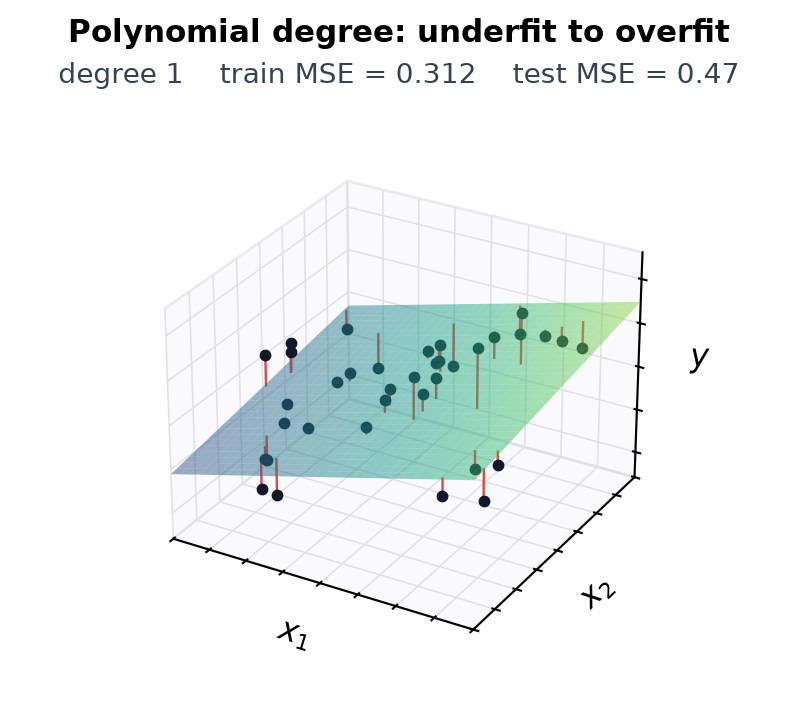
शुरुआतबीच मेंअंत
क्या देखें: काले बिंदु noisy training data हैं: दो features \(x_1, x_2\) और ऊँचाई पर target \(y\)। रंगीन surface उन पर fit किया गया polynomial है, जिसकी degree 1 से 6 तक चढ़ती है। Degree 1 का सपाट plane मोड़ों को पकड़ नहीं पाता (underfitting), इसलिए लाल residuals लंबे हैं। Degree 3 के आस-पास surface असली आकार पकड़ लेती है। Degree 6 पर surface हर बिंदु से गुज़रने के लिए बुरी तरह मुड़ती है (overfitting): status line में training error लगभग zero हो जाता है पर test error उछल जाता है।
चलती animation: cs229_hindi/out/anim/L08_1.gif
Animation 8.2Variance: refit on new training sets
शुरुआतबीच मेंअंत
क्या देखें: स्लेटी जाली असली function \(h^\star\) है। हर frame में उसी distribution से एक नया training set लिया जाता है और model दोबारा fit होता है। पहले आधे हिस्से में model सरल है (degree 1, नीला): surface लगभग नहीं हिलती, पर जाली से दूर रहती है (high bias, low variance)। दूसरे आधे में model complex है (degree 5, लाल): surface हर बार बुरी तरह बदलती है (high variance)। चार खंभों पर जमा होते बिंदु हर fit का prediction हैं और काला निशान सच है: नीले बिंदु सटे हुए पर सच से हटे हुए हैं, लाल बिंदु सच के आस-पास दूर-दूर बिखरे हैं।
चलती animation: cs229_hindi/out/anim/L08_2.gif
Animation 8.3L2 penalty pulls \(\theta\) to the origin
शुरुआतबीच मेंअंत
क्या देखें: ज़मीन पर दो parameters \(\theta_1, \theta_2\) हैं और ऊँचाई cost है। स्लेटी जाली बिना regularization का \(J(\theta)\) है, जिसका minimum हरे तारे पर है। रंगीन surface regularized cost \(J(\theta) + \frac{\lambda}{2}\|\theta\|_2^2\) है। जैसे-जैसे \(\lambda\) बढ़ता है, origin पर टिका penalty का कटोरा surface को हर तरफ़ से ऊपर उठाता है, बस origin पर नहीं। इसलिए minimum (लाल गेंद) हरे तारे से खिंचकर origin की ओर सरकता जाता है: \(\|\theta\|\) छोटा होता है, पर कभी ठीक zero नहीं होता।
चलती animation: cs229_hindi/out/anim/L08_3.gif
Animation 8.4L1 vs L2: where the minimum lands
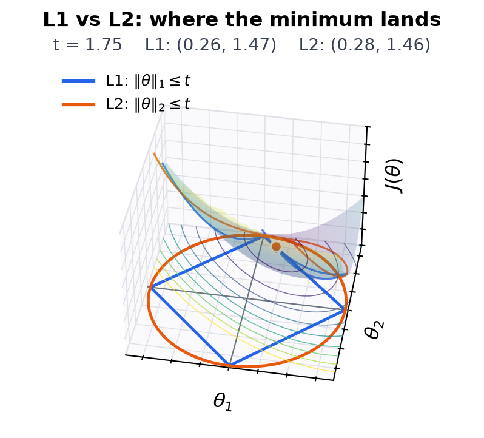
शुरुआतबीच मेंअंत
क्या देखें: यहाँ भी ऊँचाई cost \(J(\theta)\) है, पर अब \(\theta\) को एक budget के अंदर रहना है। फ़र्श पर नीला diamond L1 budget \(\|\theta\|_1 \le t\) है और नारंगी गोल घेरा L2 budget \(\|\theta\|_2 \le t\) है। दोनों की सीमा को surface पर उठाकर भी खींचा गया है: budget के अंदर सबसे नीचा बिंदु ही constrained minimum है। जैसे-जैसे \(t\) घटता है, L1 का बिंदु diamond के किनारे पर फिसलकर कोने पर पहुँचता है और वहीं अटक जाता है, यानी \(\theta_1\) ठीक zero (sparsity)। L2 का बिंदु घेरे पर सरकता रहता है और उसके दोनों coordinates non-zero रहते हैं।
चलती animation: cs229_hindi/out/anim/L08_4.gif
Animation 8.5Model selection over (degree, \(\lambda\))
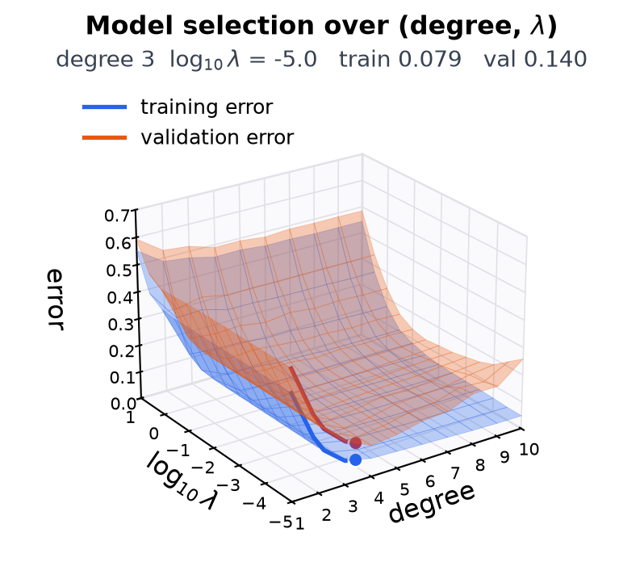
शुरुआत
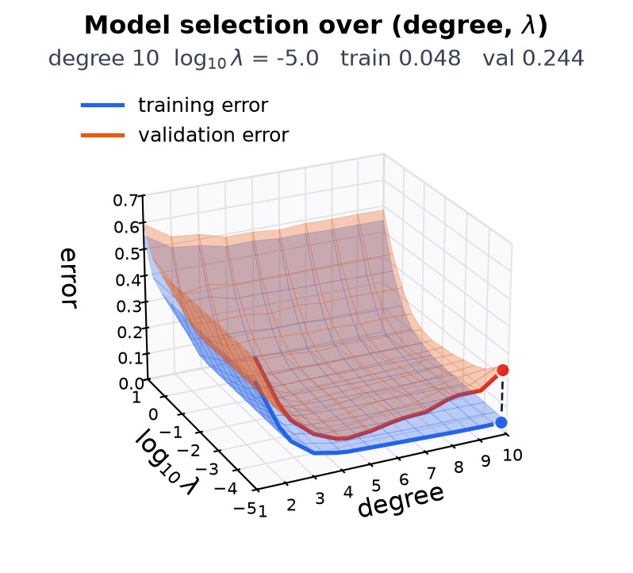
बीच में
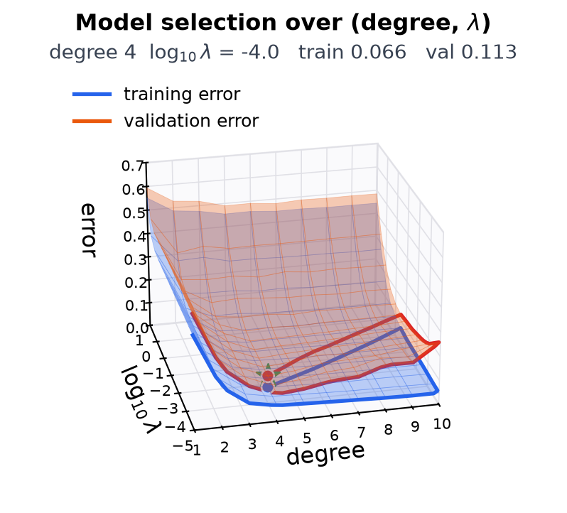
अंत
क्या देखें: ज़मीन पर दो hyperparameters हैं: polynomial की degree और \(\log_{10}\lambda\)। नीली surface training error है और नारंगी surface validation error (कई random training sets पर नापा गया)। पहले marker सबसे छोटे \(\lambda\) पर degree बढ़ाता है: नीला बिंदु लगातार नीचे जाता है, पर लाल बिंदु पहले गिरता है और फिर ऊपर चढ़ जाता है (overfitting)। दोनों के बीच की खड़ी रेखा generalization gap है। फिर marker \(\lambda\) बढ़ाता है और validation error दोबारा गिरता है। अंत में वह validation surface के सबसे निचले बिंदु (हरा तारा) पर रुकता है: model वहीं चुना जाता है, वहाँ नहीं जहाँ training error सबसे कम है।
चलती animation: cs229_hindi/out/anim/L08_5.gif
भाग 3
Python Example
इसे खुद चलाएँ: cs229_hindi/.venv/bin/python cs229_hindi/chapters/L08_bias_variance_regularization/example.py
"""Lecture 8 example: Ridge Regression, k-fold Cross Validation और Bias-Variance (सिर्फ़ NumPy).1D data पर polynomial regression करते हैं। पहले k-fold cross validation से degree और lambdaचुनते हैं। फिर सैकड़ों training sets बनाकर bias^2 और variance को सीधे नापते हैं और देखते हैं किsigma^2 + bias^2 + variance सचमुच test error के बराबर आता है।"""importnumpyasnpimportmatplotlib.pyplotaspltSIGMA=0.3# noise का standard deviationdefh_star(x):"""असली function, जो model को पता नहीं है।"""returnnp.sin(2.5*x)+0.7*np.cos(3.5*x)defmake_data(m,rng):x=rng.uniform(-1,1,m)returnx,h_star(x)+rng.normal(0,SIGMA,m)# ---------- 1. Polynomial features और ridge का closed form ----------defpoly_features(x,degree):"""Columns: 1, x, x^2, ..., x^degree"""returnnp.vander(x,degree+1,increasing=True)defridge_fit(x,y,degree,lam):"""theta = (X^T X + lam*I)^-1 X^T y, पर intercept theta_0 पर penalty नहीं।"""X=poly_features(x,degree)penalty=lam*np.eye(degree+1)penalty[0,0]=0.0returnnp.linalg.solve(X.T@X+penalty,X.T@y)defpredict(theta,x):returnpoly_features(x,len(theta)-1)@thetadefmse(theta,x,y):returnnp.mean((predict(theta,x)-y)**2)# ---------- 2. k-fold cross validation ----------defkfold_error(x,y,degree,lam,k=5):"""हर fold को एक बार बाहर रखें, बाकी पर train करें, बाहर वाले पर error नापें।"""folds=np.array_split(np.arange(len(x)),k)# data पहले से random क्रम में हैerrors=[]forheld_outinfolds:train=np.setdiff1d(np.arange(len(x)),held_out)theta=ridge_fit(x[train],y[train],degree,lam)errors.append(mse(theta,x[held_out],y[held_out]))returnnp.mean(errors)rng=np.random.default_rng(8)x_train,y_train=make_data(40,rng)x_test,y_test=make_data(2000,rng)# सिर्फ़ आख़िरी जाँच के लिएdegrees=[1,2,3,4,5,7,9,12]lambdas=[0.0,1e-4,1e-2,1.0]cv=np.array([[kfold_error(x_train,y_train,d,lam)forlaminlambdas]fordindegrees])print("1) 5-fold CV error (m = 40). Rows: degree, columns: lambda")print("degree "+"".join(f"{f'lam={lam:g}':>12}"forlaminlambdas)+" train MSE (lam=0)")ford,rowinzip(degrees,cv):train_err=mse(ridge_fit(x_train,y_train,d,0.0),x_train,y_train)print(f"{d:>6} "+"".join(f"{e:12.4f}"foreinrow)+f" {train_err:10.4f}")best_d,best_l=np.unravel_index(np.argmin(cv),cv.shape)d_cv,lam_cv=degrees[best_d],lambdas[best_l]theta_cv=ridge_fit(x_train,y_train,d_cv,lam_cv)# चुने हुए model को पूरे data पर train करेंprint(f"\nCV ने चुना: degree = {d_cv}, lambda = {lam_cv:g} (CV error {cv.min():.4f})")print("Test MSE (2000 नए examples पर):")forlabel,d,lamin[("CV का चुना हुआ model",d_cv,lam_cv),("degree 1 (underfit)",1,0.0),("degree 12, lam=0 (overfit)",12,0.0),("degree 12, lam=0.01",12,1e-2)]:print(f" {mse(ridge_fit(x_train,y_train,d,lam),x_test,y_test):.4f}{label}")print(f"(noise का sigma^2 = {SIGMA**2:.4f}: इससे नीचे कोई model नहीं जा सकता)")# ---------- 3. Bias-variance simulation: बहुत सारे training sets, हर एक पर नया model ----------# हर training set में x की वही m जगहें हैं (बराबर दूरी पर) और y का noise नया है, जैसे वही# experiment बार-बार दोहराया गया हो। इससे सिर्फ़ noise से पैदा हुआ variance साफ़ दिखता है।x_grid=np.linspace(-1,1,200)# test pointsdefbias_variance(degree,lam,m=15,trials=1000,seed=0):sim=np.random.default_rng(seed)x=np.linspace(-1,1,m)preds=np.empty((trials,len(x_grid)))test_err=0.0fortinrange(trials):y=h_star(x)+sim.normal(0,SIGMA,m)# नया training setpreds[t]=predict(ridge_fit(x,y,degree,lam),x_grid)y_new=h_star(x_grid)+sim.normal(0,SIGMA,len(x_grid))# नए noisy test targetstest_err+=np.mean((y_new-preds[t])**2)/trialsh_avg=preds.mean(axis=0)# औसत modelvariance=np.mean(preds.var(axis=0))# trials सीमित हैं, इसलिए h_avg में थोड़ा noise बचता है (लगभग variance / trials): उसे घटा देंbias2=max(0.0,np.mean((h_avg-h_star(x_grid))**2)-variance/trials)returnbias2,variance,test_errprint("\n2) Bias-variance tradeoff (m = 15, 1000 training sets, lambda = 0)")print("degree bias^2 variance sigma^2+bias^2+var measured test MSE")sim_degrees=[1,2,3,4,6,8,10]table=[]fordinsim_degrees:b2,var,err=bias_variance(d,0.0)table.append((b2,var,err))print(f"{d:>6}{b2:9.4f}{var:10.4f}{SIGMA**2+b2+var:20.4f}{err:19.4f}")print("\n3) Degree 10 पर lambda और m का असर")print("setting bias^2 variance")forlabel,lam,min[("lam=0, m=15",0.0,15),("lam=0.01, m=15",1e-2,15),("lam=1, m=15",1.0,15),("lam=0, m=150",0.0,150)]:b2,var,_=bias_variance(10,lam,m=m)print(f"{label:<20}{b2:9.4f}{var:10.4f}")# ---------- 4. Plots ----------fig,axes=plt.subplots(1,3,figsize=(13,3.9))axes[0].scatter(x_train,y_train,s=14,color="black",label="training data")axes[0].plot(x_grid,h_star(x_grid),"k--",lw=1,label="true function")ford,lam,colin[(1,0.0,"tab:blue"),(d_cv,lam_cv,"tab:green"),(12,0.0,"tab:red")]:axes[0].plot(x_grid,predict(ridge_fit(x_train,y_train,d,lam),x_grid),color=col,label=f"degree {d}, lambda={lam:g}")axes[0].set(ylim=(-2.2,2.2),xlabel="x",ylabel="y",title="Underfit, chosen by CV, overfit")axes[0].legend(fontsize=7)forj,laminenumerate(lambdas):axes[1].plot(degrees,cv[:,j],"o-",ms=3,label=f"lambda={lam:g}")axes[1].set(yscale="log",xlabel="degree",ylabel="5-fold CV error",title="Model selection")axes[1].legend(fontsize=7)b2s,variances,errs=np.array(table).Taxes[2].plot(sim_degrees,b2s,"o-",label="bias^2")axes[2].plot(sim_degrees,variances,"o-",label="variance")axes[2].plot(sim_degrees,errs,"k^-",label="test MSE")axes[2].axhline(SIGMA**2,color="gray",ls=":",label="sigma^2 (noise)")axes[2].set(xlabel="degree",title="Bias-variance tradeoff")axes[2].legend(fontsize=7)fig.tight_layout()fig.savefig("result.png",dpi=130)
इस lecture में: Logistic Regression से एक neuron तक का रास्ता, hidden units और end-to-end learning, layers का notation और forward propagation, activation functions (sigmoid, tanh, ReLU) और non-linearity क्यों ज़रूरी है, vectorization, output layers और उनके loss functions, parameters गिनना, XOR problem, और universal approximation का idea।
1. एक line में idea
Logistic Regression एक अकेली इकाई है: वह inputs का weighted sum लेती है और उसे sigmoid से गुज़ार देती है। ऐसी इकाई को neuron कहते हैं। अकेला neuron सिर्फ़ सीधी decision boundary (line या plane) बना सकता है। Neural network में हम बहुत सारे neurons को layers में जोड़ देते हैं: एक layer के outputs अगली layer के inputs बन जाते हैं। बीच की layers data से अपने काम के features खुद सीख लेती हैं, इसलिए पूरा network टेढ़ी-मेढ़ी boundaries और जटिल functions भी सीख सकता है।
इस lecture में हम सिर्फ़ यह देखेंगे कि network prediction कैसे निकालता है (forward propagation)। Parameters कैसे सीखे जाते हैं (backpropagation), यह अगले lecture का विषय है।
2. Logistic Regression से एक neuron तक
Logistic Regression में \(h_\theta(x) = g(\theta^T x)\) था। Neural networks में intercept को अलग लिखने का रिवाज है: weights \(w\) और bias \(b\)। एक neuron दो काम करता है:
\[z = w^T x + b = \sum_{j=1}^{n} w_j x_j + b, \qquad a = g(z)\]
\(z\) को pre-activation कहते हैं: यह inputs का weighted sum है।
\(g\)activation function है, और \(a\) neuron का output है, जिसे activation कहते हैं।
\(g\) अगर sigmoid हो, तो यह neuron ठीक Logistic Regression है। \(w\) की दिशा बताती है कि output किस तरफ़ बढ़ता है, \(w\) का size बताता है कि बदलाव कितना तीखा है, और \(b\) boundary को आगे-पीछे खिसकाता है।
3. Hidden units: घर की कीमत वाला example
मान लीजिए घर की कीमत का अंदाज़ा लगाना है और inputs चार हैं: size, bedrooms की संख्या, zip code, और मोहल्ले की wealth। एक समझदार इंसान पहले बीच के कुछ features सोचेगा:
size और bedrooms से पता चलता है कि घर कितने बड़े family के लिए ठीक है।
zip code से पता चलता है कि इलाका कितना walkable है।
zip code और wealth से school quality का अंदाज़ा लगता है।
कीमत इन तीन बीच वाले features पर निर्भर करती है। हर बीच वाले feature को एक neuron मान लें, तो यह एक छोटा neural network है: 4 inputs, 3 hidden units, 1 output।
असली neural network में हम यह नहीं बताते कि कौन सा hidden unit क्या नापेगा, और न यह कि वह किन inputs को देखेगा। हर hidden unit सारे inputs से जुड़ा होता है (fully-connected layer)। हम सिर्फ़ \((x, y)\) के जोड़े देते हैं, और training खुद तय करती है कि बीच के features क्या हों। इसे end-to-end learning कहते हैं। "Hidden" नाम इसीलिए है: training set में इन units का सही मान कहीं नहीं लिखा होता।
4. Layers, Notation और Forward Propagation
Layer का number square bracket में ऊपर लिखा जाता है, ताकि वह example के number \(x^{(i)}\) से अलग दिखे।
Symbol
मतलब
\(L\)
layers की संख्या (input layer को गिना नहीं जाता)
\(n^{[l]}\)
layer \(l\) में units की संख्या, और \(n^{[0]} = n\)
\(W^{[l]}\)
layer \(l\) का weight matrix, size \(n^{[l]} \times n^{[l-1]}\)
\(b^{[l]}\)
layer \(l\) का bias vector, size \(n^{[l]}\)
\(z^{[l]}\)
layer \(l\) के pre-activations (vector)
\(a^{[l]}\)
layer \(l\) के activations, और \(a^{[0]} = x\)
\(g^{[l]}\)
layer \(l\) का activation function
\(W^{[l]}\) की \(j\)-वीं row, layer \(l\) के \(j\)-वें neuron का weight vector है। यानी \(W^{[l]}_{jk}\) वह weight है जो पिछली layer के unit \(k\) को इस layer के unit \(j\) से जोड़ता है।
2-layer network (एक hidden layer और एक output layer) का forward propagation:
आख़िरी activation \(a^{[L]}\) ही network का prediction है। हर layer बस वही करती है जो एक neuron करता है, फ़र्क इतना है कि कई neurons एक साथ matrix के रूप में लिखे गए हैं।
5. Activation functions
नाम
\(g(z)\)
Range
\(g'(z)\)
sigmoid
\(\dfrac{1}{1 + e^{-z}}\)
\((0, 1)\)
\(g(z)\,(1 - g(z))\)
tanh
\(\dfrac{e^{z} - e^{-z}}{e^{z} + e^{-z}}\)
\((-1, 1)\)
\(1 - g(z)^2\)
ReLU
\(\max(0, z)\)
\([0, \infty)\)
\(z > 0\) पर \(1\), \(z < 0\) पर \(0\)
sigmoid का output probability की तरह पढ़ा जा सकता है, इसलिए binary classification की output layer में यही लगता है। Hidden layers में यह कम पसंद किया जाता है, क्योंकि बड़े \(\lvert z \rvert\) पर यह सपाट हो जाता है (saturate) और derivative लगभग zero हो जाता है।
tanh असल में खिंचा हुआ sigmoid है: \(\tanh(z) = 2\,\sigma(2z) - 1\), जहाँ \(\sigma\) sigmoid है। इसका output zero के दोनों तरफ़ फैला होता है, जो अगली layer के लिए अच्छा है। पर saturation की दिक्कत इसमें भी है।
ReLU (Rectified Linear Unit) सबसे सरल है: negative को zero कर दो, positive को वैसा ही रहने दो। Positive हिस्से में derivative हमेशा \(1\) रहता है, इसलिए गहरे networks में gradients कमज़ोर नहीं पड़ते। आजकल hidden layers के लिए यही पहली पसंद है।
Non-linearity क्यों ज़रूरी है
मान लीजिए हम activation हटा दें, यानी हर जगह \(g(z) = z\) रखें। तब 2-layer network यह निकालता है:
यह फिर से \(x\) का एक linear function है। यही तर्क दोहराने पर 100 linear layers भी सिमटकर एक ही linear map बन जाती हैं: \(\tilde{W} = W^{[L]} \cdots W^{[2]} W^{[1]}\)। यानी non-linear activation के बिना गहराई का कोई फ़ायदा नहीं, और network Linear Regression (या sigmoid output के साथ Logistic Regression) से ज़्यादा कुछ नहीं कर सकता।
6. Vectorization: सारे examples एक साथ
\(m\) examples पर Python का loop चलाना बहुत धीमा है। इसकी जगह सारे examples को एक matrix के columns बना लें:
\(Z^{[l]}\) का size \(n^{[l]} \times m\) है, और इसका \(i\)-वाँ column ठीक \(z^{[l](i)}\) है, क्योंकि matrix product \(W A\) का \(i\)-वाँ column \(W\) गुणा \(A\) का \(i\)-वाँ column होता है। \(b^{[l]}\) एक ही column है, पर उसे हर column में जोड़ना है। NumPy यह अपने आप कर देता है, इसे broadcasting कहते हैं। गणित की भाषा में यह \(b^{[l]} \mathbf{1}^T\) जोड़ना है, जहाँ \(\mathbf{1}\) में \(m\) ones हैं।
गिनती वही रहती है, पर काम Python के loop की जगह optimized linear algebra code (और GPU) करता है। फ़र्क अक्सर 10 से 100 गुना या उससे भी ज़्यादा होता है।
ध्यान दें: Lecture 2 के design matrix में हर example एक row था। यहाँ notation को equations के अनुकूल रखने के लिए हर example एक column है।
7. Output layer और Loss
Hidden layers features बनाती हैं। आख़िरी layer problem के हिसाब से चुनी जाती है, और हर output layer के साथ उसका अपना loss आता है। नीचे \(a = a^{[L]}\) और \(z = z^{[L]}\) है।
Problem
Output activation
Loss \(\mathcal{L}(a, y)\)
Binary classification, \(y \in \{0, 1\}\)
sigmoid: \(a = \dfrac{1}{1 + e^{-z}}\)
log loss: \(-\left[ y \log a + (1 - y) \log (1 - a) \right]\)
ये तीनों जोड़े Lecture 3 और 4 से आए हैं: हर loss किसी distribution (Bernoulli, Multinomial, Gaussian) का negative log-likelihood है। यानी network को train करना भी Maximum Likelihood ही है। पूरे training set का cost हर example के loss का औसत है:
\[J(W, b) = \frac{1}{m} \sum_{i=1}^{m} \mathcal{L}\left( a^{[L](i)}, y^{(i)} \right)\]
\(J\) को घटाने के लिए हमें हर \(W^{[l]}\) और \(b^{[l]}\) के लिए gradient चाहिए। उसे निकालने का तरीका (backpropagation) अगले lecture में है।
8. Parameters गिनना
Layer \(l\) में \(n^{[l]} \times n^{[l-1]}\) weights और \(n^{[l]}\) biases होते हैं। इसलिए कुल parameters:
उदाहरण: 64 inputs, 32 hidden units और 10 outputs वाले network में \((32 \cdot 64 + 32) + (10 \cdot 32 + 10) = 2080 + 330 = 2410\) parameters हैं। ध्यान दें कि गिनती पड़ोसी layers के sizes के गुणा से बढ़ती है, इसलिए चौड़ी layers बहुत जल्दी महँगी हो जाती हैं।
9. XOR: जहाँ एक neuron हार जाता है
XOR में चार points हैं: \((0,0) \to 0\), \((0,1) \to 1\), \((1,0) \to 1\), \((1,1) \to 0\)। क्या कोई linear classifier, जो \(w_1 x_1 + w_2 x_2 + b > 0\) होने पर \(1\) बोले, इन्हें सही कर सकता है? चारों points से चार शर्तें मिलती हैं:
\[b \le 0, \qquad w_2 + b > 0, \qquad w_1 + b > 0, \qquad w_1 + w_2 + b \le 0\]
बीच की दो शर्तें जोड़ने पर \(w_1 + w_2 + 2b > 0\), यानी \(w_1 + w_2 + b > -b \ge 0\)। यह चौथी शर्त से टकराता है। इसलिए कोई भी line XOR को अलग नहीं कर सकती।
अब दो ReLU hidden units लें: \(a^{[1]}_1 = \max(0,\, x_1 + x_2)\) और \(a^{[1]}_2 = \max(0,\, x_1 + x_2 - 1)\), और output \(a^{[1]}_1 - 2 a^{[1]}_2\) रखें।
\(x_1\)
\(x_2\)
\(y\)
\(a^{[1]}_1\)
\(a^{[1]}_2\)
\(a^{[1]}_1 - 2 a^{[1]}_2\)
0
0
0
0
0
0
0
1
1
1
0
1
1
0
1
1
0
1
1
1
0
2
1
0
Output ठीक \(y\) के बराबर है। असली बात यह है कि hidden layer ने points को एक नई जगह \((a^{[1]}_1, a^{[1]}_2)\) में पहुँचा दिया, जहाँ वे \((0,0)\), \((1,0)\), \((1,0)\) और \((2,1)\) हैं। इस नई जगह में एक सीधी line उन्हें अलग कर देती है। Hidden layer का काम यही है: data को ऐसे मोड़ना कि आख़िरी layer का linear classifier काम कर सके।
10. Universal Approximation
Idea (informal): एक hidden layer वाला network, जिसमें activation non-linear हो (sigmoid, tanh, ReLU) और hidden units काफ़ी हों, किसी भी continuous function को एक सीमित region पर जितनी चाहें उतनी accuracy से approximate कर सकता है।
ReLU के साथ इसे ऐसे सोचें: हर hidden unit surface में एक मोड़ (fold) जोड़ता है, यानी एक line जिसके एक तरफ़ वह zero है और दूसरी तरफ़ ढलान है। बहुत सारे मोड़ जोड़ने पर टुकड़ों में सपाट (piecewise linear) surface बनती है, जो किसी भी चिकनी surface से चिपक सकती है। जितने ज़्यादा units, उतने छोटे टुकड़े, उतना अच्छा fit।
यह result तीन बातें नहीं कहता:
कितने units चाहिए (संख्या बहुत बड़ी हो सकती है)।
Gradient Descent वे weights ढूँढ ही लेगा।
सीखा हुआ function नए data पर भी अच्छा चलेगा (overfitting का सवाल बना रहता है)।
Practice में कई layers वाला (deep) network अक्सर वही function बहुत कम units में बना लेता है, क्योंकि हर layer पिछली layer के features को दोबारा इस्तेमाल करती है।
11. Practical बातें और आम गलतियाँ
Shapes जाँचें: सबसे आम bug गलत shape है। \(W^{[l]}\) का size \(n^{[l]} \times n^{[l-1]}\), \(A^{[l]}\) का \(n^{[l]} \times m\), और \(b^{[l]}\) का \(n^{[l]} \times 1\) होना चाहिए। Code में assert लगाने से घंटों बचते हैं।
Layers की गिनती: "2-layer network" का मतलब एक hidden layer और एक output layer है। Input layer नहीं गिनी जाती।
Hidden layer में linear activation न रखें: section 5 के हिसाब से वह layer बेकार हो जाती है।
Hidden layers में ReLU से शुरू करें। sigmoid को binary output के लिए और softmax को multi-class output के लिए रखें।
Softmax को संभलकर निकालें: बड़े \(z\) पर \(e^{z}\) overflow कर जाता है। exponent लेने से पहले \(z\) में से उसका maximum घटा दें, जवाब नहीं बदलता। \(\log 0\) से बचने के लिए \(a\) को बहुत छोटे number से नीचे न जाने दें।
Weights को zero से शुरू न करें: तब सारे hidden units एक जैसे रह जाते हैं। छोटे random numbers से शुरू करें (कारण अगले lecture में)।
Inputs को scale करें (mean 0, standard deviation 1), जैसे Lecture 2 में किया था।
12. खुद से पूछें
एक network में 10 inputs, 5-5 units की दो hidden layers और 1 output है। इसमें कुल कितने parameters हैं? अगर सारे activations linear हों, तो वही function कितने parameters में लिखा जा सकता है?
Vectorized रूप में \(Z^{[1]} = W^{[1]} X + b^{[1]}\) है। अगर \(n = 3\), \(n^{[1]} = 4\) और \(m = 100\) हो, तो \(W^{[1]}\), \(X\), \(b^{[1]}\) और \(Z^{[1]}\) के shapes क्या हैं?
XOR वाले example में hidden units ReLU की जगह linear होते, तो \((a^{[1]}_1, a^{[1]}_2)\) वाली जगह में points कहाँ पहुँचते? क्या तब भी एक line उन्हें अलग कर पाती?
भाग 2
3D Animations
Animation 10.1One neuron: changing w and b
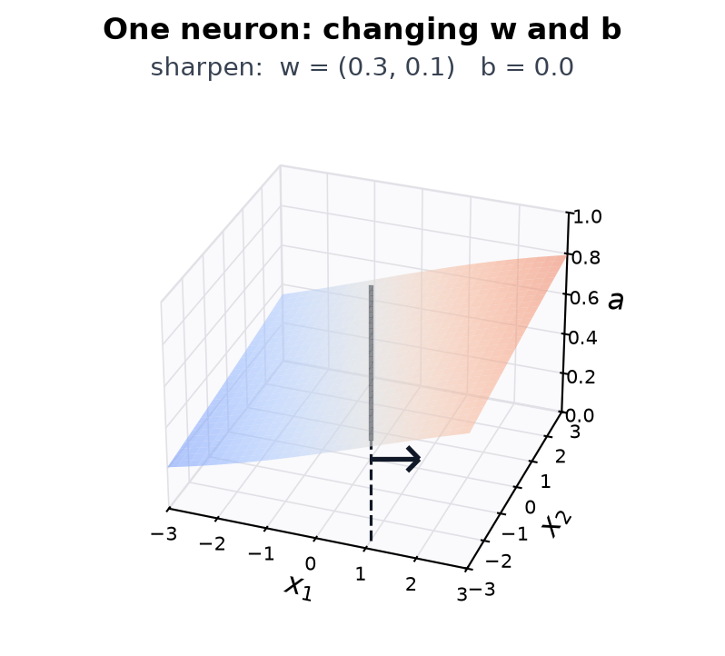
शुरुआतबीच में
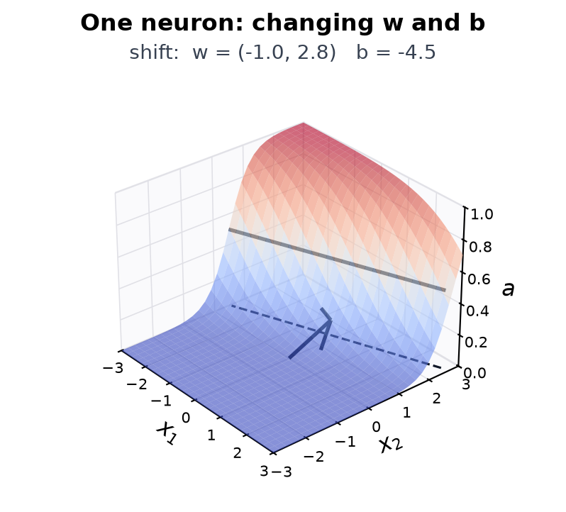
अंत
क्या देखें: ज़मीन पर दो inputs \(x_1, x_2\) हैं और ऊँचाई एक sigmoid neuron का output \(a = g(w_1 x_1 + w_2 x_2 + b)\) है। काला तीर \(w\) है और काली रेखा वह boundary है जहाँ \(a = 0.5\) है। पहले \(w\) का size बढ़ता है: ढलान तीखी होकर सीढ़ी जैसी बन जाती है। फिर \(w\) की दिशा घूमती है: पूरी surface उसी के साथ घूम जाती है, क्योंकि output हमेशा \(w\) की दिशा में बढ़ता है। अंत में \(b\) बदलता है: boundary बिना घूमे आगे-पीछे खिसकती है। एक neuron बस इतना ही कर सकता है: एक सीधी boundary।
चलती animation: cs229_hindi/out/anim/L10_1.gif
Animation 10.2Sigmoid, tanh, ReLU on one plane
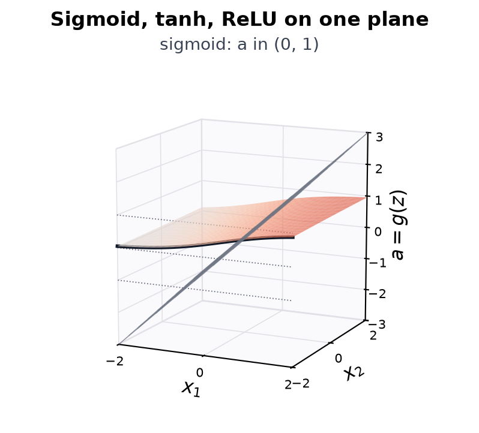
शुरुआतबीच मेंअंत
क्या देखें: स्लेटी जाली pre-activation \(z = w^T x + b\) है: \(x_1, x_2\) के ऊपर एक सपाट plane। रंगीन surface activation \(a = g(z)\) है। शुरू में \(g(z) = z\) है, इसलिए दोनों एक ही हैं। फिर वही plane बारी-बारी से तीन functions से गुज़रता है: sigmoid उसे \(0\) और \(1\) के बीच दबा देता है, tanh उसे \(-1\) और \(1\) के बीच रखता है और zero के दोनों तरफ़ बराबर फैलाता है, और ReLU negative हिस्से को काटकर सपाट कर देता है पर positive हिस्से को छूता भी नहीं। ध्यान दें कि sigmoid और tanh दोनों सिरों पर सपाट हो जाते हैं (saturation), जबकि ReLU की ढलान positive तरफ़ बनी रहती है।
चलती animation: cs229_hindi/out/anim/L10_2.gif
Animation 10.3Forward pass, layer by layer
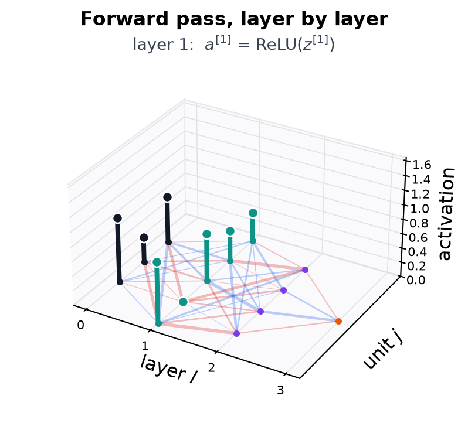
शुरुआतबीच मेंअंत
क्या देखें: यहाँ एक छोटा network 3D में रखा है: एक axis पर layer का number (\(0\) यानी input \(x\)), दूसरे पर उस layer के units, और ऊँचाई हर unit का activation \(a^{[l]}_j\) है। फ़र्श की रेखाएँ weights हैं: नीली positive, लाल negative, और मोटी रेखा मतलब बड़ा weight। Forward propagation बाएँ से दाएँ चलता है: पहले पिछली layer के activations weights के रास्ते आगे जाते हैं (\(z^{[l]} = W^{[l]} a^{[l-1]} + b^{[l]}\)), फिर activation function लगता है और उस layer के खंभे उठते हैं। जो ReLU unit zero पर रह गया, उसका \(z\) negative था। कोई layer तब तक नहीं निकल सकती जब तक उससे पहले वाली पूरी न हो जाए।
चलती animation: cs229_hindi/out/anim/L10_3.gif
Animation 10.4XOR: bent until a plane splits it
शुरुआतबीच में
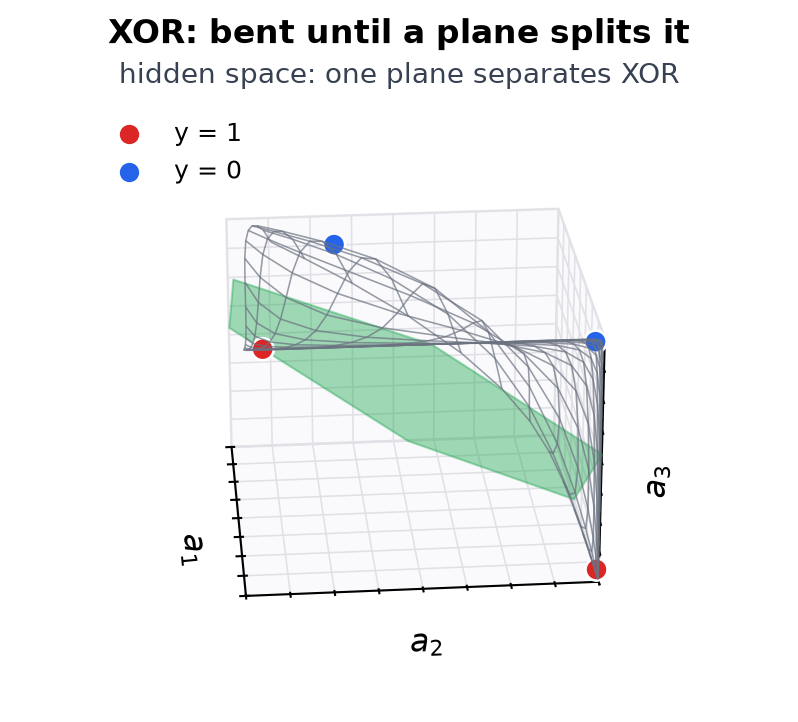
अंत
क्या देखें: चार XOR points पहले input वाली सपाट चादर पर हैं: लाल points (\(y = 1\)) एक diagonal पर और नीले (\(y = 0\)) दूसरे पर, इसलिए कोई सीधी रेखा इन्हें अलग नहीं कर सकती। फिर तीन tanh hidden units वाली trained layer हर point को नई जगह \(a^{[1]} = g(W^{[1]} x + b^{[1]})\) पर भेजती है। तीनों axes अब तीन hidden units के activations हैं, और चादर उसी map से मुड़ जाती है। मुड़ने के बाद दोनों लाल points एक तरफ़ और दोनों नीले दूसरी तरफ़ आ जाते हैं, और output layer का एक ही हरा plane \(W^{[2]} a^{[1]} + b^{[2]} = 0\) उन्हें अलग कर देता है। Hidden layer boundary को टेढ़ा नहीं करती, वह data को मोड़ती है।
चलती animation: cs229_hindi/out/anim/L10_4.gif
Animation 10.5Adding ReLU units one at a time
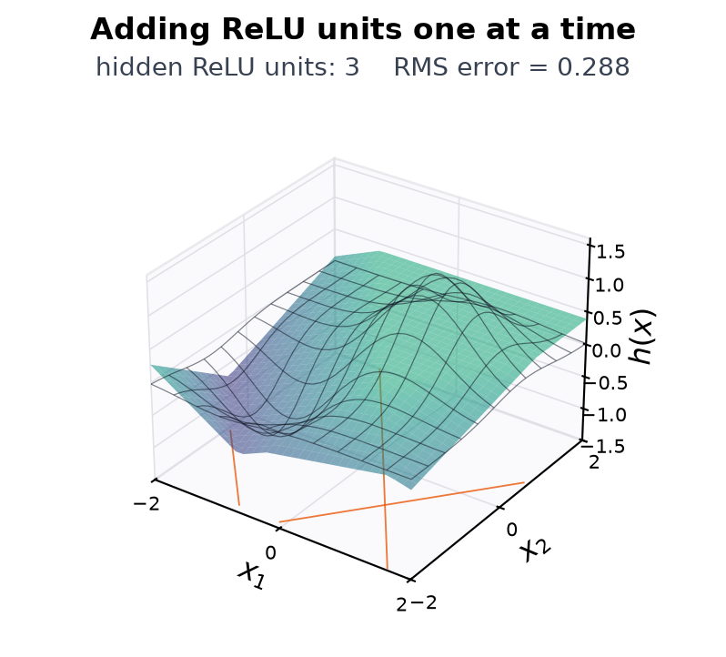
शुरुआतबीच मेंअंत
क्या देखें: काली जाली वह target function है जिसे सीखना है: \(x_1, x_2\) के ऊपर एक पहाड़ी और एक गड्ढा। रंगीन surface एक hidden layer वाले ReLU network का output है। हर frame में एक नया hidden unit जुड़ता है। हर unit surface में एक सीधा मोड़ डालता है, जो फ़र्श पर एक नारंगी रेखा के रूप में दिखता है। एक-दो units से सिर्फ़ तिरछा plane या एक मोड़ बनता है। जैसे-जैसे units बढ़ते हैं, सपाट टुकड़े छोटे होते जाते हैं, surface target से चिपकती जाती है और error गिरता जाता है। यही universal approximation का idea है: काफ़ी units हों तो एक hidden layer किसी भी continuous surface के पास पहुँच सकती है।
चलती animation: cs229_hindi/out/anim/L10_5.gif
Animation 10.6A 2-layer network learns circles
शुरुआत
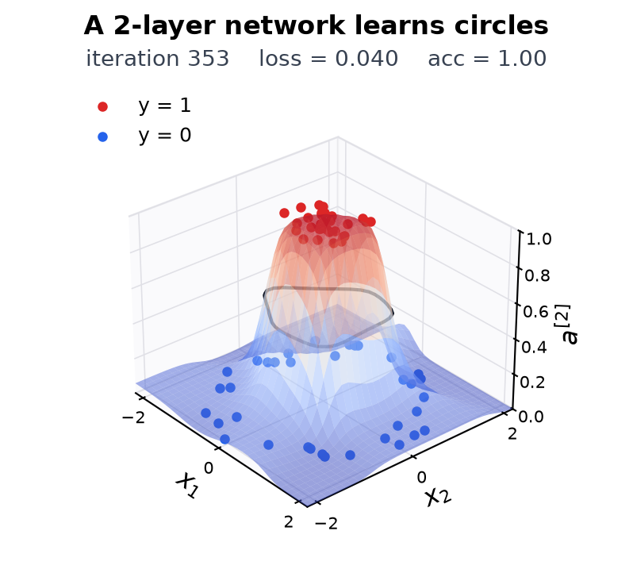
बीच में
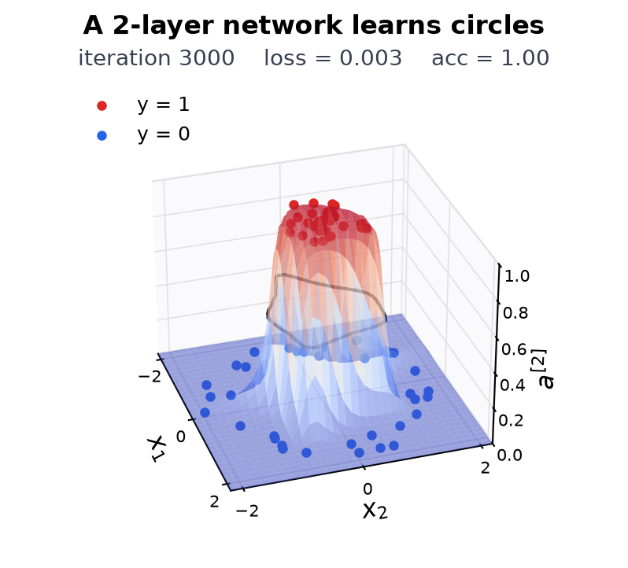
अंत
क्या देखें: ज़मीन पर features \(x_1, x_2\) हैं। लाल points (\(y = 1\)) बीच में हैं और ऊँचाई \(1\) पर रखे हैं, नीले points (\(y = 0\)) उन्हें घेरे हुए हैं और ऊँचाई \(0\) पर हैं। Surface network का output \(a^{[2]}\) है, यानी \(P(y = 1 \mid x)\) का अंदाज़ा। शुरू में weights random हैं, इसलिए surface का data से कोई मेल नहीं है। Training के साथ hidden units की boundaries अपनी जगह लेती हैं और बीच में एक टीला उठता है, जो लाल points तक पहुँचता है और नीलों के ऊपर नीचे रहता है। जहाँ surface \(0.5\) को काटती है (काली रेखा), वही decision boundary है: एक बंद घेरा, जो कोई अकेला neuron नहीं बना सकता। Weights कैसे बदले गए, यह अगले lecture का backpropagation बताएगा।
चलती animation: cs229_hindi/out/anim/L10_6.gif
भाग 3
Python Example
इसे खुद चलाएँ: cs229_hindi/.venv/bin/python cs229_hindi/chapters/L10_neural_networks_basics/example.py
"""Lecture 10 example: 2-layer Neural Network शुरू से (सिर्फ़ NumPy).दो problems जिन्हें कोई सीधी line हल नहीं कर सकती: XOR और two-moons। दोनों परLogistic Regression (एक अकेला neuron) और एक hidden layer वाला network चलाते हैं,और फिर देखते हैं कि hidden units ने क्या सीखा।Notation theory जैसा ही है: X का हर column एक example है, यानी X का shape (n, m) है।"""importtimeimportnumpyasnpimportmatplotlib.pyplotaspltfromsklearn.datasetsimportmake_moonsdefsigmoid(z):return1/(1+np.exp(-z))# ---------- 1. Data ----------X_xor=np.array([[0.0,0.0,1.0,1.0],[0.0,1.0,0.0,1.0]])# shape (2, 4): हर column एक pointY_xor=np.array([[0.0,1.0,1.0,0.0]])# shape (1, 4)moons_x,moons_y=make_moons(1000,noise=0.2,random_state=0)X_train,Y_train=moons_x[:500].T,moons_y[:500][None,:].astype(float)X_test,Y_test=moons_x[500:].T,moons_y[500:][None,:].astype(float)# ---------- 2. Forward propagation (vectorized: सारे examples एक साथ) ----------defforward(X,p):Z1=p["W1"]@X+p["b1"]# (n1, m); b1 का shape (n1, 1) है, broadcasting उसे हर column में जोड़ता हैA1=np.tanh(Z1)# hidden layerZ2=p["W2"]@A1+p["b2"]# (1, m)A2=sigmoid(Z2)# output: P(y = 1 | x)returnA1,A2deflog_loss(A2,Y):A2=np.clip(A2,1e-12,1-1e-12)# log(0) से बचावreturn-np.mean(Y*np.log(A2)+(1-Y)*np.log(1-A2))defaccuracy(A2,Y):returnnp.mean((A2>0.5)==Y)# ---------- 3. Training: Gradient Descent ----------deftrain_network(X,Y,n_hidden,alpha,iters,seed):rng=np.random.default_rng(seed)n,m=X.shapep={"W1":rng.normal(0,1,(n_hidden,n)),"b1":np.zeros((n_hidden,1)),# छोटे random weights"W2":rng.normal(0,1,(1,n_hidden)),"b2":np.zeros((1,1))}history=[]for_inrange(iters):A1,A2=forward(X,p)history.append(log_loss(A2,Y))# Gradients: ये formulas अगले lecture (backpropagation) में derive होंगे।dZ2=(A2-Y)/m# output layer की गलतीdZ1=(p["W2"].T@dZ2)*(1-A1**2)# वही गलती hidden layer तक पीछे भेजी गईgrads={"W2":dZ2@A1.T,"b2":dZ2.sum(axis=1,keepdims=True),"W1":dZ1@X.T,"b1":dZ1.sum(axis=1,keepdims=True)}forkinp:p[k]-=alpha*grads[k]returnp,historydeftrain_logistic(X,Y,alpha,iters):"""Logistic Regression = बिना hidden layer का network: a = sigmoid(w x + b)."""n,m=X.shapew,b=np.zeros((1,n)),0.0for_inrange(iters):dZ=(sigmoid(w@X+b)-Y)/mw,b=w-alpha*dZ@X.T,b-alpha*dZ.sum()returnw,b# ---------- 4. XOR ----------w,b=train_logistic(X_xor,Y_xor,alpha=1.0,iters=5000)p_xor,_=train_network(X_xor,Y_xor,n_hidden=2,alpha=1.0,iters=5000,seed=2)H_xor,out_xor=forward(X_xor,p_xor)print("XOR: Logistic Regression का output :",np.round(sigmoid(w@X_xor+b),2).ravel())print("XOR: 2 hidden units वाला network :",np.round(out_xor,2).ravel())print("\nXOR में hidden layer ने हर point को कहाँ भेजा:")print(" x1 x2 y a1[1] a1[2] output")foriinrange(4):print(f" {X_xor[0,i]:.0f}{X_xor[1,i]:.0f}{Y_xor[0,i]:.0f}{H_xor[0,i]:7.2f}{H_xor[1,i]:7.2f} "f"{out_xor[0,i]:8.2f}")# हर random शुरुआत सफल नहीं होती: cost non-convex है (अगला lecture)। ज़्यादा units हों तो रास्ता आसान होता है।print("\n20 अलग random शुरुआतों में से कितनी बार XOR हल हुआ (loss < 0.05):")forn_hiddenin(2,3,8):solved=sum(train_network(X_xor,Y_xor,n_hidden,1.0,5000,seed)[1][-1]<0.05forseedinrange(20))print(f" hidden units = {n_hidden}: {solved} / 20")# ---------- 5. Two moons: hidden units बढ़ाकर देखें ----------w,b=train_logistic(X_train,Y_train,alpha=0.5,iters=3000)print("\nTwo moons (500 train, 500 test)")print("Model parameters train acc test acc")print(f"{'Logistic Regression':<22}{3:10d}{accuracy(sigmoid(w@X_train+b),Y_train):11.3f} "f"{accuracy(sigmoid(w@X_test+b),Y_test):10.3f}")nets={}forn_hiddenin(1,2,3,8):nets[n_hidden]=train_network(X_train,Y_train,n_hidden,alpha=0.5,iters=6000,seed=0)p=nets[n_hidden][0]n_params=sum(v.sizeforvinp.values())# (n1*2 + n1) + (1*n1 + 1)print(f"{'NN, hidden units = '+str(n_hidden):<22}{n_params:10d} "f"{accuracy(forward(X_train,p)[1],Y_train):11.3f}{accuracy(forward(X_test,p)[1],Y_test):10.3f}")p_moons,history=nets[8]# ---------- 6. Vectorization क्यों: वही forward pass, loop से और matrix से ----------big=np.tile(X_train,(1,60))# 30,000 examplest0=time.perf_counter()loop_out=[forward(big[:,[i]],p_moons)[1][0,0]foriinrange(big.shape[1])]t1=time.perf_counter()vec_out=forward(big,p_moons)[1]t2=time.perf_counter()print(f"\n30,000 examples का forward pass: loop {t1-t0:.2f} s, vectorized {t2-t1:.4f} s "f"(लगभग {(t1-t0)/(t2-t1):.0f} गुना तेज़)")print("दोनों के जवाबों में सबसे बड़ा फ़र्क:",f"{np.max(np.abs(np.array(loop_out)-vec_out)):.1e}")# ---------- 7. Plots ----------g1,g2=np.meshgrid(np.linspace(-1.8,2.8,200),np.linspace(-1.4,1.9,200))G=np.vstack([g1.ravel(),g2.ravel()])fig,axes=plt.subplots(1,3,figsize=(13,4))surfaces=[("Logistic Regression",sigmoid(w@G+b)),("2-layer network, 8 tanh units",forward(G,p_moons)[1])]forax,(title,prob)inzip(axes,surfaces):ax.contourf(g1,g2,prob.reshape(g1.shape),levels=20,cmap="coolwarm",alpha=0.6)ax.contour(g1,g2,prob.reshape(g1.shape),levels=[0.5],colors="k")ax.scatter(X_test[0],X_test[1],c=Y_test.ravel(),cmap="coolwarm",s=14,edgecolor="k",linewidth=0.3)ax.set(title=title+" (test points)",xlabel="x1",ylabel="x2")Z1=p_moons["W1"]@G+p_moons["b1"]forjinrange(Z1.shape[0]):# हर hidden unit की अपनी सीधी line: z1_j = 0axes[1].contour(g1,g2,Z1[j].reshape(g1.shape),levels=[0],colors="gray",linewidths=0.6,linestyles="--")axes[2].scatter(H_xor[0],H_xor[1],c=Y_xor.ravel(),cmap="coolwarm",s=160,edgecolor="k")foriinrange(4):axes[2].annotate(f"x=({X_xor[0,i]:.0f},{X_xor[1,i]:.0f})",(H_xor[0,i],H_xor[1,i]),textcoords="offset points",xytext=(8,8))h1=np.linspace(-1.2,1.2,50)W2,b2=p_xor["W2"].ravel(),p_xor["b2"].item()axes[2].plot(h1,-(W2[0]*h1+b2)/W2[1],"k-",label="output layer boundary")axes[2].set(xlim=(-1.3,1.3),ylim=(-1.3,1.3),xlabel="hidden unit 1",ylabel="hidden unit 2",title="XOR seen from the hidden layer")axes[2].legend(loc="lower left")fig.tight_layout()fig.savefig("result.png",dpi=130)
OUTPUT
XOR: Logistic Regression का output : [0.5 0.5 0.5 0.5]
XOR: 2 hidden units वाला network : [0. 1. 1. 0.]
XOR में hidden layer ने हर point को कहाँ भेजा:
x1 x2 y a1[1] a1[2] output
0 0 0 -0.96 -0.96 0.00
0 1 1 0.97 -1.00 1.00
1 0 1 -1.00 0.97 1.00
1 1 0 -0.96 -0.97 0.00
20 अलग random शुरुआतों में से कितनी बार XOR हल हुआ (loss < 0.05):
hidden units = 2: 11 / 20
hidden units = 3: 17 / 20
hidden units = 8: 20 / 20
Two moons (500 train, 500 test)
Model parameters train acc test acc
Logistic Regression 3 0.872 0.856
NN, hidden units = 1 5 0.864 0.856
NN, hidden units = 2 9 0.868 0.860
NN, hidden units = 3 13 0.964 0.968
NN, hidden units = 8 33 0.970 0.964
30,000 examples का forward pass: loop 0.13 s, vectorized 0.0017 s (लगभग 76 गुना तेज़)
दोनों के जवाबों में सबसे बड़ा फ़र्क: 5.6e-16
LECTURE 13
K-means, Mixture of Gaussians और EM Algorithm
भाग 1
Theory
इस lecture में: Unsupervised Learning (बिना labels के सीखना), K-means clustering और उसका distortion function, local optima, Mixture of Gaussians model, उसके लिए EM algorithm (E-step और M-step), Jensen's inequality, और General EM Algorithm: lower bound कैसे बनता है, वह tight कब होता है, और likelihood हर iteration में क्यों बढ़ता है।
1. एक line में idea
अब तक हर example के साथ सही जवाब \(y\) मिलता था। Unsupervised Learning में सिर्फ़ \(x\) मिलते हैं, कोई label नहीं। काम है data में छिपा ढाँचा खुद ढूँढना, जैसे यह कि points कुछ झुंडों (clusters) में बँटे हैं।
K-means सबसे सीधा तरीका है: \(k\) केंद्र (centroids) रखो, हर point को सबसे पास वाले केंद्र का मान लो, फिर हर केंद्र को अपने points के बीच में खिसका दो, और यही दोहराओ। Mixture of Gaussians इसी बात का probabilistic रूप है: हर cluster एक Gaussian है और हर point हर cluster का "थोड़ा-थोड़ा" हो सकता है। इसे fit करने का तरीका EM (Expectation-Maximization) है: पहले अंदाज़ा लगाओ कि कौन सा point किस cluster का है (E-step), फिर उस अंदाज़े को सच मानकर parameters निकालो (M-step)। EM सिर्फ़ clustering के लिए नहीं है। यह हर उस model पर चलता है जिसमें कोई छिपा हुआ (latent) variable हो।
2. Setup और Notation
Symbol
मतलब
\(\{x^{(1)}, \dots, x^{(m)}\}\)
training set, \(x^{(i)} \in \mathbb{R}^n\), कोई \(y^{(i)}\) नहीं
\(k\)
clusters की संख्या (हम खुद चुनते हैं)
\(\mu_j\)
\(j\)-वें cluster का centroid (या Gaussian का mean)
\(c^{(i)}\)
k-means में \(x^{(i)}\) को दिया गया cluster, \(c^{(i)} \in \{1, \dots, k\}\)
\(z^{(i)}\)
latent variable: \(x^{(i)}\) असल में किस Gaussian से आया (हमें दिखता नहीं)
यह हर point की अपने centroid से squared दूरी का जोड़ है। K-means इस पर coordinate descent है:
Assign step\(\mu\) को स्थिर रखकर \(J\) को \(c\) के लिए minimize करता है। हर \(c^{(i)}\) जोड़ के सिर्फ़ एक term में आता है, और सबसे पास वाला centroid चुनना उस term को सबसे छोटा बनाता है।
Move step\(c\) को स्थिर रखकर \(J\) को \(\mu\) के लिए minimize करता है। Cluster \(j\) के terms का derivative लें: \(\nabla_{\mu_j} \sum_{i: c^{(i)}=j} \|x^{(i)} - \mu_j\|^2 = -2 \sum_{i: c^{(i)}=j} (x^{(i)} - \mu_j)\)। इसे zero रखने पर \(\mu_j\) ठीक उन points का mean निकलता है।
दोनों steps \(J\) को घटाते हैं या वैसा ही रखते हैं, इसलिए \(J\) कभी नहीं बढ़ता। \(J \ge 0\) है और संभव assignments की संख्या सीमित (\(k^m\)) है, इसलिए \(J\) हमेशा घटता नहीं रह सकता: कुछ iterations के बाद कुछ नहीं बदलता और algorithm रुक जाता है।
Local optima और random restarts
\(J\)non-convex है, इसलिए coordinate descent global minimum की guarantee नहीं देता। K-means किसी local optimum में अटक सकता है, जैसे दो centroids एक ही असली cluster को बाँट लें और एक centroid दो clusters के बीच बैठ जाए। कौन सा जवाब मिलेगा, यह initialization पर निर्भर है। इलाज सरल है: k-means को अलग-अलग random initializations से कई बार चलाएँ और वह जवाब रखें जिसका \(J(c, \mu)\) सबसे छोटा हो।
\(k\) कैसे चुनें
\(k\) बढ़ाने पर \(J\) हमेशा घटता है (\(k = m\) पर \(J = 0\)), इसलिए "सबसे छोटा \(J\)" देखकर \(k\) नहीं चुना जा सकता। दो आम तरीके: (1) \(J\) बनाम \(k\) का graph बनाएँ और वह "कोहनी" (elbow) देखें जिसके बाद \(J\) धीरे घटता है। (2) यह देखें कि clusters का आगे क्या काम है (जैसे T-shirt के 3 size चाहिए तो \(k = 3\))। अक्सर \(k\) हाथ से ही चुना जाता है।
5. Mixture of Gaussians
अब data के बनने की एक कहानी मान लेते हैं। हर example के लिए पहले एक छिपा हुआ cluster \(z^{(i)}\) चुना जाता है, फिर उस cluster के Gaussian से \(x^{(i)}\) निकलता है:
Joint distribution है \(p(x^{(i)}, z^{(i)}) = p(x^{(i)} \mid z^{(i)})\, p(z^{(i)})\)। Parameters हैं \(\phi, \mu, \Sigma\)। \(z^{(i)}\) हमें दिखता नहीं, इसलिए data का log-likelihood \(z\) पर जोड़ लेकर बनता है:
मुश्किल कहाँ है:\(\log\) के अंदर जोड़ है। Derivatives को zero रखने पर हर parameter की equation में बाकी सारे parameters उलझे रहते हैं, और closed form में हल नहीं निकलता।
अगर \(z^{(i)}\) दिखता होता: तब \(\ell = \sum_i \left[ \log p(x^{(i)} \mid z^{(i)}; \mu, \Sigma) + \log p(z^{(i)}; \phi) \right]\) होता, \(\log\) के अंदर कोई जोड़ नहीं, और maximum सीधे मिल जाता:
ये लगभग वही formulas हैं जो Gaussian Discriminant Analysis (GDA) में मिले थे। वहाँ class label \(y\) दिया होता था। यहाँ \(z^{(i)}\) वही भूमिका निभाता है, बस वह छिपा है (और यहाँ हर cluster का अपना \(\Sigma_j\) है)।
6. Mixture of Gaussians के लिए EM
EM इसी उलझन को दो आसान steps में तोड़ देता है। Converge होने तक दोहराएँ:
E-step: मौजूदा parameters से हर point के लिए \(z^{(i)}\) का posterior निकालें। Bayes rule से:
Soft बनाम hard assignment: K-means हर point को पूरा का पूरा एक cluster दे देता है (\(c^{(i)}\), hard)। EM हर point को हर cluster में हिस्सा देता है (\(w_j^{(i)}\), soft)। दो clusters के बीच वाले point का \(w\) जैसे \((0.6, 0.4)\) हो सकता है, और वह दोनों means को उसी अनुपात में खींचता है। अगर सारे \(\Sigma_j = \sigma^2 I\) हों और \(\sigma \to 0\), तो हर \(w_j^{(i)}\) 0 या 1 बन जाता है और EM ठीक k-means बन जाता है। K-means की तरह EM भी local optima में अटक सकता है।
ये M-step formulas बस "अंदाज़े" से नहीं आए। ये नीचे वाले General EM से निकलते हैं।
7. Jensen's Inequality
मान लीजिए \(f\)convex function है (यानी \(f''(x) \ge 0\)) और \(X\) एक random variable है। तब
\[E[f(X)] \ge f(E[X])\]
अगर \(f\) strictly convex है (\(f'' > 0\)), तो बराबरी सिर्फ़ तब होती है जब \(X = E[X]\) हो probability 1 के साथ, यानी \(X\) एक constant हो। Concave function (\(f'' \le 0\)) के लिए inequality उलट जाती है: \(f(E[X]) \ge E[f(X)]\)। हमें इसी रूप की ज़रूरत है, क्योंकि \(\log\) strictly concave है (\(\log'' x = -1/x^2 < 0\)):
चित्र में सोचें: concave curve के दो points को जोड़ने वाली सीधी रेखा (chord) हमेशा curve के नीचे रहती है। \(E[f(X)]\) chord पर है, \(f(E[X])\) curve पर।
8. General EM Algorithm
मान लीजिए model \(p(x, z; \theta)\) है और सिर्फ़ \(x\) दिखता है। हमें यह maximize करना है:
पहली line में अंदर का जोड़ एक expectation है: \(E_{z^{(i)} \sim Q_i}\left[ \frac{p(x^{(i)}, z^{(i)}; \theta)}{Q_i(z^{(i)})} \right]\)। \(\log\) concave है, इसलिए \(\log(E[\cdot]) \ge E[\log(\cdot)]\), और यही दूसरी line है। यह bound हर\(Q_i\) और हर\(\theta\) के लिए सही है। इसमें \(\log\) जोड़ के अंदर चला गया है, इसलिए इसे maximize करना आसान है।
Bound को tight बनाना
Jensen में बराबरी तब होती है जब random variable constant हो। यानी हमें चाहिए कि
\[\frac{p(x^{(i)}, z^{(i)}; \theta)}{Q_i(z^{(i)})} = c \quad (z^{(i)} \text{ पर निर्भर नहीं})\]
इसका मतलब \(Q_i(z^{(i)}) \propto p(x^{(i)}, z^{(i)}; \theta)\)। साथ में \(\sum_z Q_i(z) = 1\) भी चाहिए, इसलिए
\(\mu_l\) के लिए: gradient \(\sum_i w_l^{(i)} \Sigma_l^{-1} (x^{(i)} - \mu_l)\) है। इसे zero रखने पर \(\mu_l = \sum_i w_l^{(i)} x^{(i)} / \sum_i w_l^{(i)}\)।
\(\phi_j\) के लिए: constraint \(\sum_j \phi_j = 1\) है, इसलिए Lagrangian \(\sum_i \sum_j w_j^{(i)} \log \phi_j + \beta (\sum_j \phi_j - 1)\) बनाएँ। Derivative zero रखने पर \(\phi_j = \sum_i w_j^{(i)} / (-\beta)\), और constraint से \(-\beta = \sum_i \sum_j w_j^{(i)} = m\)।
यही Section 6 के formulas हैं। \(\Sigma_j\) भी इसी तरह निकलता है।
Likelihood हर iteration में क्यों बढ़ता है
मान लीजिए iteration \(t\) के शुरू में parameters \(\theta^{(t)}\) हैं और E-step ने \(Q_i^{(t)}\) चुना। तब
पहली line: lower bound हर \(Q\) और हर \(\theta\) के लिए सही है। दूसरी line: \(\theta^{(t+1)}\) M-step में इसी expression का maximizer है, इसलिए वह \(\theta^{(t)}\) से बुरा नहीं हो सकता। तीसरी line: \(Q_i^{(t)}\) इस तरह चुना गया था कि \(\theta^{(t)}\) पर bound tight हो। इसलिए \(\ell(\theta^{(t+1)}) \ge \ell(\theta^{(t)})\): EM में likelihood कभी नहीं घटता।
E-step \(\theta\) को स्थिर रखकर \(J\) को \(Q\) के लिए maximize करता है (तब \(J = \ell(\theta)\) हो जाता है)। M-step \(Q\) को स्थिर रखकर \(J\) को \(\theta\) के लिए maximize करता है। यह वही ढाँचा है जो k-means में था: वहाँ \(J(c, \mu)\) पर coordinate descent, यहाँ \(J(Q, \theta)\) पर coordinate ascent।
9. Practical बातें और आम गलतियाँ
Features को scale करें: K-means Euclidean दूरी पर चलता है। जिस feature की संख्याएँ बड़ी होंगी, वही दूरी पर हावी हो जाएगा।
कई बार चलाएँ: K-means और EM दोनों का जवाब initialization पर निर्भर है। कई random restarts करें और सबसे अच्छा \(J\) (k-means) या सबसे बड़ा \(\ell\) (EM) रखें। EM को k-means के centroids से शुरू करना एक अच्छा तरीका है।
खाली cluster: अगर किसी centroid को कोई point न मिले तो mean निकल नहीं सकता। उस centroid को किसी random point पर दोबारा रख दें।
Debugging का सबसे अच्छा औज़ार: हर iteration पर \(J\) (k-means) या \(\ell\) (EM) print करें। \(J\) बढ़े या \(\ell\) घटे, तो code में गलती है।
Gaussian का सिकुड़ जाना: अगर कोई Gaussian सिर्फ़ एक point पर बैठ जाए तो \(\Sigma_j\) singular हो जाता है और likelihood अनंत की ओर भागता है। \(\Sigma_j\) के diagonal में छोटा सा constant जोड़ें या restart करें।
Underflow:\(n\) बड़ा हो तो Gaussian density बहुत छोटी संख्या होती है। E-step को \(\log\) में करें (log-sum-exp trick)।
K-means की सीमा: वह गोल और बराबर size के clusters मानकर चलता है। लंबे, तिरछे या अलग-अलग size के clusters के लिए Mixture of Gaussians बेहतर है।
10. खुद से पूछें
K-means का move step centroid को mean पर ही क्यों ले जाता है, median या किसी और point पर क्यों नहीं? (संकेत: \(J\) में squared दूरी है।)
EM के E-step के ठीक बाद \(J(Q, \theta)\) और \(\ell(\theta)\) में क्या संबंध है? और M-step के ठीक बाद?
अगर Mixture of Gaussians में सारे \(\phi_j\) बराबर हों, सारे \(\Sigma_j = \sigma^2 I\) हों और \(\sigma\) बहुत छोटा हो, तो \(w_j^{(i)}\) कैसे दिखेंगे और EM किस algorithm जैसा बन जाएगा?
भाग 2
3D Animations
Animation 13.1K-means on a 3D point cloud
शुरुआत
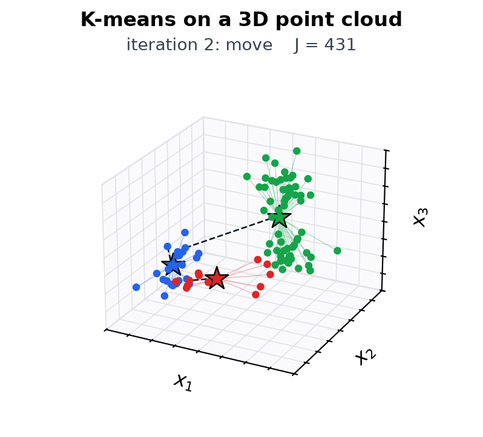
बीच मेंअंत
क्या देखें: तीन axes तीन features \(x_1, x_2, x_3\) हैं और हर बिंदु एक unlabeled example है। बड़े तारे centroids \(\mu_j\) हैं, जो शुरू में तीनों एक ही cluster के अंदर हैं। हर iteration में दो काम बारी-बारी से होते हैं: पहले हर बिंदु अपने सबसे पास वाले centroid का रंग ले लेता है (assign), फिर हर centroid अपने रंग के बिंदुओं के mean पर खिसक जाता है (move)। पतली रेखाएँ बिंदु से उसके centroid तक की दूरी हैं, जिनके squares का जोड़ distortion \(J\) है। देखिए कि \(J\) हर step में घटता है और जब कोई बिंदु रंग नहीं बदलता तो algorithm रुक जाता है।
चलती animation: cs229_hindi/out/anim/L13_1.gif
Animation 13.2K-means: bad init, local optimum
शुरुआत
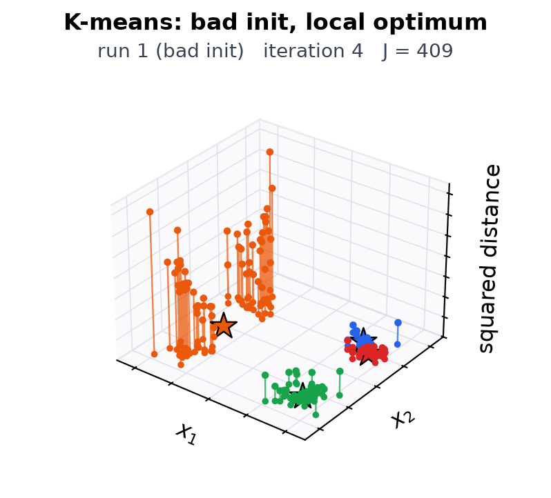
बीच मेंअंत
क्या देखें: फ़र्श पर 2D data (\(x_1, x_2\)) के चार साफ़ clusters हैं और तारे centroids हैं। हर बिंदु के ऊपर खड़ी डंडी की ऊँचाई उसकी अपने centroid से squared दूरी \(\|x^{(i)} - \mu_{c^{(i)}}\|^2\) है, यानी सारी डंडियों का जोड़ ही distortion \(J\) है। पहले run में initialization खराब है: दो centroids एक ही cluster को बाँट लेते हैं और एक centroid को दो clusters सँभालने पड़ते हैं, इसलिए वहाँ डंडियाँ ऊँची रह जाती हैं और k-means वहीं अटक जाता है (local optimum)। दूसरे run में अच्छे initialization से हर cluster को अपना centroid मिलता है और \(J\) बहुत छोटा हो जाता है। इसीलिए k-means कई बार चलाकर सबसे छोटे \(J\) वाला जवाब रखते हैं।
चलती animation: cs229_hindi/out/anim/L13_2.gif
Animation 13.3EM reshapes the mixture density
शुरुआत
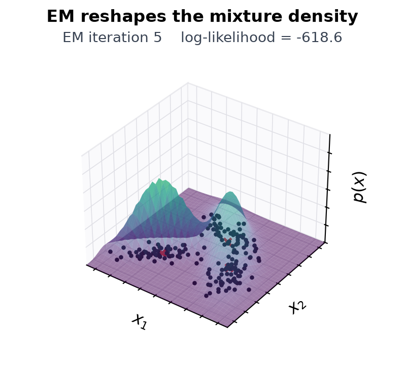
बीच मेंअंत
क्या देखें: फ़र्श पर 2D data है और ऊँचाई mixture of Gaussians की density \(p(x) = \sum_j \phi_j\, \mathcal{N}(x; \mu_j, \Sigma_j)\) है। लाल निशान तीनों means \(\mu_j\) हैं। शुरू में तीनों Gaussians चौड़े हैं और लगभग एक ही जगह हैं, इसलिए surface एक ही चपटा टीला है। हर EM iteration में E-step तय करता है कि कौन सा बिंदु किस Gaussian का कितना है, और M-step उन्हीं weights से \(\phi_j, \mu_j, \Sigma_j\) दोबारा निकालता है। टीला धीरे-धीरे तीन चोटियों में बँट जाता है, हर चोटी अपने cluster के आकार में ढल जाती है, और log-likelihood हर iteration में बढ़ता है।
चलती animation: cs229_hindi/out/anim/L13_3.gif
Animation 13.4Soft assignments sharpen in EM
शुरुआतबीच मेंअंत
क्या देखें: फ़र्श पर दो overlap करते clusters का 2D data है। हर बिंदु की ऊँचाई उसकी responsibility \(w_1^{(i)} = p(z^{(i)} = 1 \mid x^{(i)})\) है, यानी EM के हिसाब से वह कितना पहले Gaussian का है (ऊँचाई 1 मतलब पूरी तरह पहले का, 0 मतलब पूरी तरह दूसरे का)। फ़र्श पर दोनों Gaussians के ellipses बने हैं। शुरू में दोनों Gaussians लगभग एक जैसे हैं, इसलिए सारे बिंदु \(0.5\) के आस-पास तैर रहे हैं। जैसे-जैसे EM चलता है, ज़्यादातर बिंदु 1 या 0 की ओर चले जाते हैं, पर बीच के overlap वाले बिंदु बीच की ऊँचाई पर ही रहते हैं। यही soft assignment है। K-means में हर बिंदु सीधे 0 या 1 पर होता (hard assignment)।
चलती animation: cs229_hindi/out/anim/L13_4.gif
Animation 13.5EM: coordinate ascent on J(Q,\(\theta\))
शुरुआतबीच मेंअंत
क्या देखें: यहाँ एक छोटा model है: \(x \sim \frac{1}{2}\mathcal{N}(-\theta, 1) + \frac{1}{2}\mathcal{N}(\theta, 1)\), जिसमें सिर्फ़ एक parameter \(\theta\) है। एक axis पर \(\theta\) है, दूसरे पर \(q\) जो distribution \(Q\) को तय करता है (\(Q_i(z) = p(z \mid x^{(i)}; q)\)), और ऊँचाई lower bound \(J(Q, \theta)\) है। काली रेखा वह जगह है जहाँ \(q = \theta\), यानी जहाँ bound tight है और \(J = \ell(\theta)\)। नीले कदम E-step हैं: \(\theta\) स्थिर, \(Q\) बदलकर काली रेखा तक चढ़ना। नारंगी कदम M-step हैं: \(Q\) स्थिर, \(\theta\) बदलकर उस दिशा की चोटी तक जाना। दोनों कदम \(J\) को बढ़ाते हैं, इसलिए सीढ़ी \(\ell\) के maximum (हरा तारा) तक चढ़ती है और कभी नीचे नहीं उतरती।
चलती animation: cs229_hindi/out/anim/L13_5.gif
Animation 13.6Jensen's inequality for log
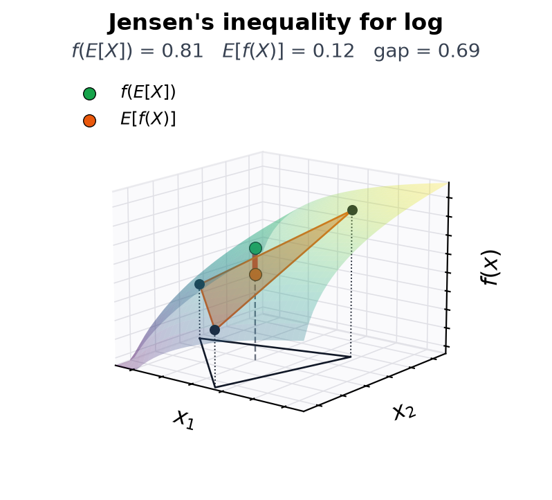
शुरुआतबीच में
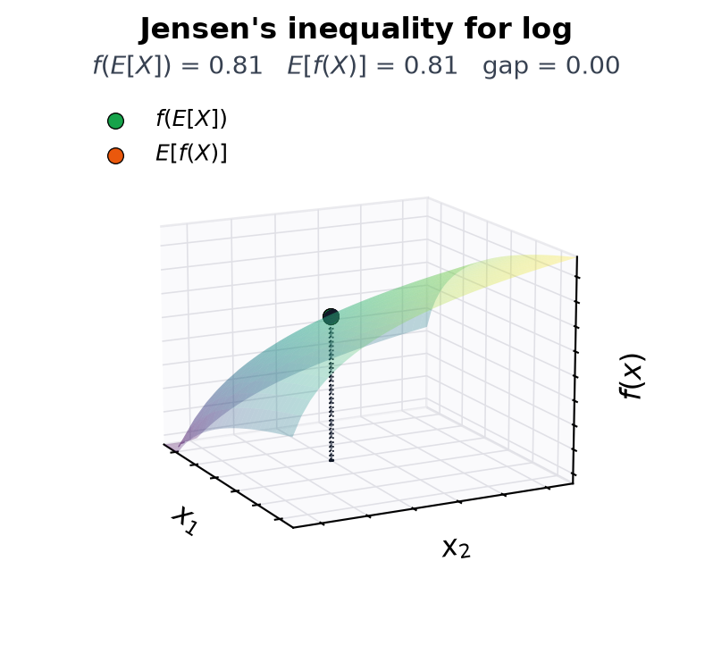
अंत
क्या देखें: Surface एक concave function है: \(f(x) = \log x_1 + \log x_2\)। Random variable \(X\) तीन बिंदुओं (फ़र्श पर त्रिकोण के कोने) में से कोई एक बराबर probability से लेता है। नारंगी त्रिकोण surface के उन्हीं तीन बिंदुओं को जोड़ने वाला chord है, और उसका बीच का बिंदु \(E[f(X)]\) है। उसके ठीक ऊपर surface पर हरा बिंदु \(f(E[X])\) है। Concave function में chord हमेशा surface के नीचे रहता है, इसलिए \(f(E[X]) \ge E[f(X)]\), और लाल डंडी यही gap है। जैसे-जैसे \(X\) का distribution सिकुड़कर एक ही बिंदु पर आता है (variance 0), gap बंद हो जाता है। EM इसी बात से bound को tight बनाता है।
चलती animation: cs229_hindi/out/anim/L13_6.gif
भाग 3
Python Example
इसे खुद चलाएँ: cs229_hindi/.venv/bin/python cs229_hindi/chapters/L13_kmeans_gmm_em/example.py
"""Lecture 13 example: K-means और Mixture of Gaussians का EM, दोनों शुरू से (सिर्फ़ NumPy).चार 2D blobs जिनके covariance अलग-अलग हैं (एक लंबा-पतला, एक छोटा-गोल, दो फैले हुए)।Labels हम algorithm को नहीं दिखाते, सिर्फ़ अंत में जाँच के लिए इस्तेमाल करते हैं।दिखाते हैं: (a) k-means में distortion J कभी नहीं बढ़ता, (b) अलग initialization पर अलग J,(c) EM में log-likelihood कभी नहीं घटता, (d) EM की soft assignments k-means से बेहतर clusters देती हैं।"""fromitertoolsimportpermutationsimportnumpyasnpimportmatplotlib.pyplotaspltrng=np.random.default_rng(13)# ---------- 1. Data: mixture of 4 Gaussians से sample करें ----------k=4true_phi=np.array([0.35,0.25,0.20,0.20])true_mu=np.array([[0.0,0.0],[3.0,2.2],[0.5,5.0],[7.0,5.0]])true_Sigma=np.array([[[4.0,1.7],[1.7,0.9]],# लंबा-पतला, तिरछा[[0.15,0.0],[0.0,0.15]],# छोटा और गोल[[1.6,-0.5],[-0.5,0.6]],# फैला हुआ[[0.5,0.0],[0.0,1.2]]])# खड़ा ellipse, बाकियों से दूरm=600z_true=rng.choice(k,size=m,p=true_phi)# latent z^(i), जो असल में छिपा रहता हैX=np.array([rng.multivariate_normal(true_mu[j],true_Sigma[j])forjinz_true])# ---------- 2. K-means ----------defkmeans(X,init_mu):"""Returns (c, mu, history). history में हर आधे step के बाद का distortion J है।"""mu,c,history=init_mu.copy(),None,[]whileTrue:dist2=((X[:,None,:]-mu[None,:,:])**2).sum(axis=2)# (m, k)new_c=dist2.argmin(axis=1)# step (i): सबसे पास वाला centroidifcisnotNoneandnp.all(new_c==c):returnc,mu,history# कुछ नहीं बदला: convergec=new_chistory.append(dist2[np.arange(len(X)),c].sum())# assign के बाद Jmu=np.array([X[c==j].mean(axis=0)ifnp.any(c==j)elsemu[j]forjinrange(len(mu))])history.append(((X-mu[c])**2).sum())# step (ii): centroid को mean पर ले जाने के बाद J# ---------- 3. EM for Mixture of Gaussians ----------deflog_gaussian(X,mu,Sigma):"""हर row x के लिए log N(x; mu, Sigma)."""d=X-mumaha=np.einsum("ij,ij->i",d@np.linalg.inv(Sigma),d)return-0.5*(maha+np.log(np.linalg.det(Sigma))+X.shape[1]*np.log(2*np.pi))defem_mixture(X,init_mu,iters=60):m,n=X.shapek=len(init_mu)phi,mu=np.full(k,1.0/k),init_mu.copy()Sigma=np.array([np.cov(X.T)for_inrange(k)])# शुरुआत: सबका Sigma = पूरे data का covariancehistory=[]for_inrange(iters):# E-step: w[i, j] = p(z = j | x_i), Bayes rule से (log में, ताकि underflow न हो)log_joint=np.log(phi)+np.column_stack([log_gaussian(X,mu[j],Sigma[j])forjinrange(k)])top=log_joint.max(axis=1,keepdims=True)log_px=top+np.log(np.exp(log_joint-top).sum(axis=1,keepdims=True))# log p(x_i)w=np.exp(log_joint-log_px)history.append(log_px.sum())# मौजूदा parameters पर log-likelihood# M-step: weighted counts, weighted means, weighted covariancesNj=w.sum(axis=0)phi=Nj/mmu=(w.T@X)/Nj[:,None]forjinrange(k):d=X-mu[j]Sigma[j]=(w[:,j,None]*d).T@d/Nj[j]returnw,phi,mu,Sigma,historydefrelabel(c):"""Cluster के नाम मनमाने हैं, इसलिए वह permutation चुनें जो true z से सबसे ज़्यादा मिले।"""best=max(permutations(range(k)),key=lambdap:np.mean(np.array(p)[c]==z_true))returnnp.array(best)[c]defaccuracy(c):returnnp.mean(relabel(c)==z_true)# ---------- 4. K-means को 8 अलग random initializations से चलाएँ ----------runs=[kmeans(X,X[np.random.default_rng(seed).choice(m,k,replace=False)])forseedinrange(8)]print("K-means, 8 random restarts (final distortion J):")print(" "+" ".join(f"{h[-1]:7.1f}"for_,_,hinruns))c_km,mu_km,hist_km=min(runs,key=lambdar:r[2][-1])# सबसे छोटा J वाला run रखें_,_,hist_bad=max(runs,key=lambdar:r[2][-1])print(f" सबसे अच्छा J = {hist_km[-1]:.1f}, सबसे खराब J = {hist_bad[-1]:.1f} (local optimum)")print("\nसबसे अच्छे run में J, हर आधे step के बाद (assign, move, assign, ...):")print(" "+" ".join(f"{j:.1f}"forjinhist_km[:10]))print(f" J कभी बढ़ा? {'हाँ'ifnp.any(np.diff(hist_km)>1e-9)else'नहीं'}")# ---------- 5. EM चलाएँ, k-means के centroids से शुरू करके ----------w,phi,mu,Sigma,hist_em=em_mixture(X,mu_km)c_em=w.argmax(axis=1)print("\nEM: iteration और log-likelihood")foritin(0,1,2,3,5,10,20,40,59):print(f" {it:3d}{hist_em[it]:10.3f}")print(f" log-likelihood कभी घटा? {'हाँ'ifnp.any(np.diff(hist_em)<-1e-9)else'नहीं'}")# ---------- 6. नतीजों की तुलना ----------order=[int(np.argmin(((mu-t)**2).sum(axis=1)))fortintrue_mu]# EM cluster <-> true clusterprint("\ncluster true phi EM phi true mu EM mu")fort,jinenumerate(order):print(f" {t}{true_phi[t]:.2f}{phi[j]:.3f} ({true_mu[t,0]:4.1f}, {true_mu[t,1]:4.1f})"f" ({mu[j,0]:5.2f}, {mu[j,1]:5.2f})")print(f"\nसही cluster में गए points: K-means {100*accuracy(c_km):.1f}%, EM {100*accuracy(c_em):.1f}%")unsure=np.sum(w.max(axis=1)<0.9)print(f"EM की soft assignment: {unsure} points ऐसे हैं जिनका सबसे बड़ा w भी 0.9 से कम है (overlap वाले)")# ---------- 7. Plots ----------fig,axes=plt.subplots(2,2,figsize=(10,8))axes=axes.ravel()colors=np.array(["#2563eb","#dc2626","#16a34a","#ea580c"])forax,labels,titlein[(axes[0],z_true,"True clusters"),(axes[1],c_km,f"K-means ({100*accuracy(c_km):.0f}% correct)"),(axes[2],c_em,f"EM, mixture of Gaussians ({100*accuracy(c_em):.0f}%)")]:ax.scatter(X[:,0],X[:,1],c=colors[relabel(labels)],s=7)ax.set(title=title,xlabel="x1",ylabel="x2")axes[1].scatter(mu_km[:,0],mu_km[:,1],marker="X",s=120,c="black")angle=np.linspace(0,2*np.pi,100)circle=np.c_[np.cos(angle),np.sin(angle)]forjinrange(k):# हर Gaussian का 2-sigma ellipseellipse=mu[j]+2*circle@np.linalg.cholesky(Sigma[j]).Taxes[2].plot(ellipse[:,0],ellipse[:,1],"k-",lw=1.2)axes[3].plot(hist_em,"o-",ms=3)axes[3].set(title="EM: log-likelihood never decreases",xlabel="iteration",ylabel="log-likelihood")fig.tight_layout()fig.savefig("result.png",dpi=130)
OUTPUT
K-means, 8 random restarts (final distortion J):
1010.5 1010.6 2163.1 2163.1 1010.9 1010.6 1010.9 1010.6
सबसे अच्छा J = 1010.5, सबसे खराब J = 2163.1 (local optimum)
सबसे अच्छे run में J, हर आधे step के बाद (assign, move, assign, ...):
3777.5 2578.2 1907.6 1114.6 1020.7 1010.5
J कभी बढ़ा? नहीं
EM: iteration और log-likelihood
0 -2797.055
1 -2435.648
2 -2295.910
3 -2268.872
5 -2198.195
10 -2089.915
20 -2055.026
40 -2054.942
59 -2054.942
log-likelihood कभी घटा? नहीं
cluster true phi EM phi true mu EM mu
0 0.35 0.364 ( 0.0, 0.0) ( 0.37, 0.20)
1 0.25 0.250 ( 3.0, 2.2) ( 2.97, 2.19)
2 0.20 0.200 ( 0.5, 5.0) ( 0.50, 5.10)
3 0.20 0.185 ( 7.0, 5.0) ( 7.02, 4.91)
सही cluster में गए points: K-means 86.2%, EM 98.3%
EM की soft assignment: 55 points ऐसे हैं जिनका सबसे बड़ा w भी 0.9 से कम है (overlap वाले)
LECTURE 16
Markov Decision Processes और Bellman Equations
भाग 1
Theory
इस lecture में: Reinforcement Learning, Supervised Learning से कैसे अलग है (सिर्फ़ reward signal, sequential decisions, credit assignment), MDP का tuple \((S, A, \{P_{sa}\}, \gamma, R)\), total payoff और discount factor \(\gamma\), policy \(\pi\), value function \(V^\pi\), Bellman equation और उससे बनने वाला linear system, optimal value function \(V^*\), optimal policy \(\pi^*\), और इन सबका running example: 4x3 gridworld।
1. एक line में idea
अब तक हर training example के साथ सही जवाब \(y\) दिया होता था। Reinforcement Learning (RL) में सही जवाब कोई नहीं बताता। एक agent किसी दुनिया में कदम-दर-कदम actions लेता है, और दुनिया उसे बस एक संख्या लौटाती है: reward, यानी "यह अच्छा हुआ" या "यह बुरा हुआ"। Agent को ऐसा व्यवहार सीखना है जिससे लंबे समय में कुल reward सबसे ज़्यादा हो।
इस problem को गणित में लिखने का ढाँचा Markov Decision Process (MDP) है। और इस lecture की सबसे ज़रूरी बात एक वाक्य में यह है: किसी state की value = अभी का reward + \(\gamma\) गुना अगले state की value का expectation। यही Bellman equation है।
2. Reinforcement Learning, Supervised Learning से कैसे अलग है
Helicopter उड़ाना सिखाना हो तो "इस पल stick को ठीक इतना घुमाओ" जैसा labelled data किसी के पास नहीं है। पर यह बताना आसान है कि helicopter ठीक उड़ रहा है (अच्छा reward) या गिर गया (बड़ा negative reward)। Chess और Go जैसे games में भी यही है: हर चाल का सही जवाब कोई नहीं देता, बस अंत में जीत या हार मिलती है। चलने वाले robots, factory control और network routing में भी यही ढाँचा काम आता है।
Supervised Learning
Reinforcement Learning
सीखने का signal
हर \(x\) के लिए सही \(y\)
सिर्फ़ reward, सही action नहीं
फ़ैसले
हर prediction अपने आप में अलग
sequential: आज का action कल का state बदल देता है
Data
पहले से दिया हुआ
agent के अपने actions से पैदा होता है
Feedback
तुरंत
अक्सर बहुत देर से
आख़िरी row से credit assignment problem निकलती है। Chess का खेल 60वीं चाल पर हारे, तो गलती किस चाल की थी? Reward देर से आता है और उसका श्रेय (या दोष) पहले के कई actions में बाँटना पड़ता है। आगे आने वाला value function ठीक यही काम करता है: वह हर state को बताता है कि वहाँ से आगे कुल कितना reward मिलने की उम्मीद है।
3. MDP: Setup और Notation
एक MDP पाँच चीज़ों का tuple है: \((S, A, \{P_{sa}\}, \gamma, R)\)।
Symbol
मतलब
\(S\)
states का set: दुनिया की हर संभव हालत
\(A\)
actions का set: agent क्या-क्या कर सकता है
\(P_{sa}\)
state transition probabilities: state \(s\) में action \(a\) लेने पर अगले state का distribution। \(P_{sa}(s')\) अगला state \(s'\) होने की probability है, और \(\sum_{s'} P_{sa}(s') = 1\)
\(\gamma \in [0, 1)\)
discount factor
\(R : S \to \mathbb{R}\)
reward function (कई problems में \(R(s, a)\) भी लिखा जाता है)
"Markov" शब्द का मतलब है कि अगला state सिर्फ़ अभी के state और action पर निर्भर है, उससे पहले के पूरे इतिहास पर नहीं।
Running example: 4x3 gridworld। एक robot 4 columns और 3 rows के grid में चलता है। State को \((\text{column}, \text{row})\) लिखते हैं और \((1,1)\) नीचे-बाएँ कोना है।
States:\((2,2)\) पर दीवार है, इसलिए कुल 11 states हैं।
\(P_{sa}\) (noisy चाल): robot 0.8 probability से चुनी हुई दिशा में जाता है, और 0.1-0.1 probability से उसके बाईं या दाईं ओर फिसल जाता है। जैसे \(P_{(3,1)\uparrow}((3,2)) = 0.8\), \(P_{(3,1)\uparrow}((2,1)) = 0.1\), \(P_{(3,1)\uparrow}((4,1)) = 0.1\)। दीवार या किनारे से टकराने पर वह वहीं रह जाता है।
Rewards:\(R((4,3)) = +1\), \(R((4,2)) = -1\), और बाकी हर state में \(R(s) = -0.02\) (हर कदम की छोटी कीमत, ताकि robot बेवजह न भटके)।
Terminal states:\((4,3)\) और \((4,2)\) में पहुँचते ही reward मिलता है और खेल खत्म। गणित में: वहाँ से आगे कोई reward नहीं है।
Discount:\(\gamma = 0.99\)।
4. MDP कैसे चलता है: payoff और discount factor
Agent किसी state \(s_0\) से शुरू करता है और action \(a_0\) चुनता है। दुनिया \(s_1 \sim P_{s_0 a_0}\) से अगला state निकालती है। फिर \(a_1\), फिर \(s_2 \sim P_{s_1 a_1}\), और इसी तरह:
चाल noisy है, इसलिए payoff एक random संख्या है। RL का लक्ष्य है ऐसे actions चुनना जिनसे इसका expectation \(E\left[R(s_0) + \gamma R(s_1) + \gamma^2 R(s_2) + \dots\right]\) सबसे बड़ा हो।
\(\gamma\) क्या करता है? समय \(t\) का reward \(\gamma^t\) से गुणा होकर छोटा हो जाता है।
जल्दी मिला reward ज़्यादा कीमती है। Positive reward जल्दी लेना और negative reward को टालना फ़ायदेमंद हो जाता है। (पैसे की तरह: आज का एक रुपया कल के एक रुपये से ज़्यादा कीमती है।)
जोड़ सीमित रहता है। अगर \(|R(s)| \le R_{\max}\) है तो \(|\text{payoff}| \le R_{\max}(1 + \gamma + \gamma^2 + \dots) = \frac{R_{\max}}{1 - \gamma}\), चाहे खेल अनंत तक चले।
दूर तक देखने की सीमा।\(\gamma\) शून्य के पास हो तो agent near-sighted है, सिर्फ़ अगले एक-दो rewards देखता है। \(\gamma\) एक के पास हो तो वह लगभग \(\frac{1}{1-\gamma}\) steps आगे तक की सोचता है (\(\gamma = 0.99\) पर करीब 100 steps)।
5. Policy और Value Function
Policy कोई भी function \(\pi : S \to A\) है। Policy को "चलाने" का मतलब है कि जब भी हम state \(s\) में हों, action \(a = \pi(s)\) लें। Gridworld में policy हर cell में बना एक तीर है।
Policy \(\pi\) का value function बताता है कि state \(s\) से शुरू करके \(\pi\) पर चलते रहें तो payoff का expectation कितना होगा:
बड़े bracket के अंदर वही payoff है, बस शुरुआत \(s_1\) से हो रही है। Markov property के कारण, अगर \(s_1 = s'\) है तो इस bracket का expectation ठीक \(V^\pi(s')\) है। और \(s_1\) का distribution \(P_{s\pi(s)}\) है। इसलिए \(s'\) पर औसत लेने से Bellman equation मिलती है:
पहला हिस्सा immediate reward है, जो \(s\) में होने भर से मिल जाता है। दूसरा हिस्सा आगे के सारे discounted rewards का expectation है।
यह एक linear system है। Finite MDP में हर state के लिए ऐसी एक equation है, और हर equation में unknowns \(V^\pi(s')\) सिर्फ़ linear रूप में आते हैं। यानी \(|S|\) equations और \(|S|\) unknowns। Gridworld में, "हमेशा दाएँ" वाले action के साथ state \((3,3)\) की equation यह है:
सारे values को एक vector \(V^\pi \in \mathbb{R}^{|S|}\) में, rewards को vector \(R\) में, और probabilities को matrix \(P^\pi\) में रखें, जिसकी entry \((s, s')\) में \(P_{s\pi(s)}(s')\) है। तब
\[V^\pi = R + \gamma P^\pi V^\pi \quad\Longrightarrow\quad (I - \gamma P^\pi)\, V^\pi = R \quad\Longrightarrow\quad V^\pi = (I - \gamma P^\pi)^{-1} R\]
\(\gamma < 1\) होने पर \(I - \gamma P^\pi\) हमेशा invertible है, क्योंकि \(P^\pi\) की हर row का जोड़ 1 से ज़्यादा नहीं है और इसलिए \(\gamma P^\pi\) की कोई eigenvalue size में 1 तक नहीं पहुँचती।
7. Optimal Value Function और Optimal Policy
सारी policies में से जो सबसे अच्छा हो सकता है, वह optimal value function है:
\[V^*(s) = \max_\pi V^\pi(s)\]
इसकी भी अपनी Bellman equation है। \(s\) में immediate reward \(R(s)\) तो मिलेगा ही, चाहे action जो हो। उसके बाद सबसे अच्छा यही है कि वह action चुनें जिसके बाद आगे का optimal payoff सबसे बड़ा हो:
इस \(\pi^*\) के लिए हर state \(s\) और हर policy \(\pi\) पर \(V^*(s) = V^{\pi^*}(s) \ge V^\pi(s)\) है। यहाँ एक बारीक पर बहुत काम की बात है: वही एक \(\pi^*\) हर start state के लिए optimal है।\((1,1)\) से शुरू करने के लिए एक policy और \((3,1)\) से शुरू करने के लिए दूसरी, ऐसा नहीं करना पड़ता, क्योंकि \(\pi^*(s)\) की परिभाषा में start state कहीं आता ही नहीं।
इस gridworld का \(V^*\) और \(\pi^*\):
column 1
column 2
column 3
column 4
row 3
\(0.86 \rightarrow\)
\(0.90 \rightarrow\)
\(0.93 \rightarrow\)
\(+1\)
row 2
\(0.82 \uparrow\)
दीवार
\(0.69 \uparrow\)
\(-1\)
row 1
\(0.78 \uparrow\)
\(0.75 \leftarrow\)
\(0.71 \leftarrow\)
\(0.49 \leftarrow\)
State \((3,1)\) पर जाँचें कि \(\leftarrow\) सचमुच \(\uparrow\) से अच्छा है। \(\leftarrow\) लेने पर robot 0.8 से \((2,1)\) में, 0.1 से \((3,2)\) में और 0.1 से (नीचे किनारे से टकराकर) \((3,1)\) में ही रहता है:
\(\uparrow\) छोटा रास्ता है, पर वह \(-1\) के बगल से गुज़रता है। Optimal policy लंबा पर सुरक्षित रास्ता चुनती है। \(\leftarrow\) के साथ \(V^*((3,1)) = -0.02 + 0.99 \times 0.740 \approx 0.71\), जो table से मिलता है।
\(V^*\) की equation में \(\max\) है, इसलिए वह linear नहीं रही और उसे सीधे matrix inverse से हल नहीं किया जा सकता। उसे हल करने वाले algorithms (Value Iteration और Policy Iteration) Lecture 17 में आएँगे।
8. Algorithm: एक fixed policy को evaluate करना
दी हुई policy \(\pi\) के लिए \(V^\pi\) निकालने के तीन तरीके हैं।
(क) Linear system हल करना।
हर state \(s\) के लिए action \(\pi(s)\) की probabilities उठाकर matrix \(P^\pi\) बनाएँ।
\((I - \gamma P^\pi) V = R\) को हल करें। यह exact जवाब है, पर खर्च लगभग \(O(|S|^3)\) है।
(ख) Iterative policy evaluation।
हर state के लिए \(V(s) := 0\) रखें।
हर state पर Bellman equation का दायाँ हिस्सा लगाएँ: \(V(s) := R(s) + \gamma \sum_{s'} P_{s\pi(s)}(s') V(s')\)।
Step 2 को तब तक दोहराएँ जब तक \(V\) बदलना बंद न कर दे।
यह क्यों चलता है? \(k\)-वें sweep के estimate को \(V_k\) कहें। Update में से \(V^\pi\) की Bellman equation घटाने पर
दाईं ओर errors का एक weighted औसत है, जिसे \(\gamma\) से गुणा किया गया है। इसलिए \(\max_s |V_{k+1}(s) - V^\pi(s)| \le \gamma \max_s |V_k(s) - V^\pi(s)|\): सबसे बड़ी error हर sweep में कम से कम \(\gamma\) गुना घटती है और \(V_k \to V^\pi\)।
(ग) Monte Carlo।\(s\) से शुरू करके policy को बहुत बार चलाएँ और payoffs का औसत लें। यह सीधे \(V^\pi(s)\) की परिभाषा है, और तब भी काम करता है जब \(P_{sa}\) पता न हो, बस दुनिया में (या simulator में) चलना संभव हो।
9. Practical बातें और आम गलतियाँ
Reward "क्या चाहिए" बताता है, "कैसे" नहीं। Reward की बनावट से optimal policy बदल जाती है। Gridworld में step reward को \(-0.02\) से \(-0.5\) कर दें तो robot जल्दबाज़ी में \(-1\) के पास से गुज़रने लगता है (Animation 6)।
\(V^\pi\) और \(V^*\) को न मिलाएँ।\(V^\pi\) की equation linear है और policy दी हुई है। \(V^*\) की equation में \(\max_a\) है।
Terminal states: terminal state की value बस उसका reward है। आम bug यह है कि code terminal state से भी आगे चलता रहता है और \(+1\) बार-बार जुड़ता रहता है।
State में पूरी जानकारी हो। Markov property तभी सही है जब state में आगे का अंदाज़ा लगाने लायक सब कुछ हो। Helicopter के state में सिर्फ़ position नहीं, velocity भी चाहिए।
\(\gamma\) का चुनाव:\(\gamma\) को 1 के पास रखने से agent दूर की सोचता है, पर iterative तरीके धीमे हो जाते हैं। \(\gamma = 1\) तभी ठीक है जब हर episode का खत्म होना पक्का हो।
\(P_{sa}\) अक्सर पता नहीं होता। असली problems में उसे data से सीखना पड़ता है (Lecture 17)।
10. खुद से पूछें
अगर \(\gamma = 0\) हो, तो \(V^\pi(s)\) क्या होगा, और optimal policy किस चीज़ को देखेगी?
Gridworld में \(V^*((3,2)) = 0.69\) है, जबकि वह \(+1\) से सिर्फ़ दो कदम दूर है और \((1,3)\), जो तीन कदम दूर है, \(0.86\) पर है। ऐसा क्यों?
Bellman equation में \(V^\pi(s)\) दोनों ओर आ सकता है (जैसे \((3,3)\) की equation में)। फिर भी linear system का हल unique क्यों है?
भाग 2
3D Animations
Animation 16.1Episodes under a fixed policy
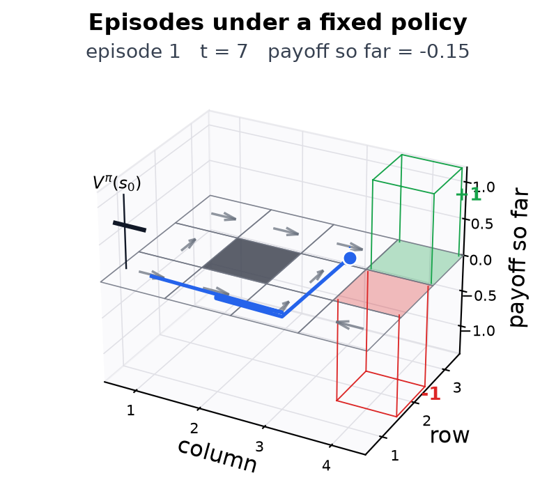
शुरुआत
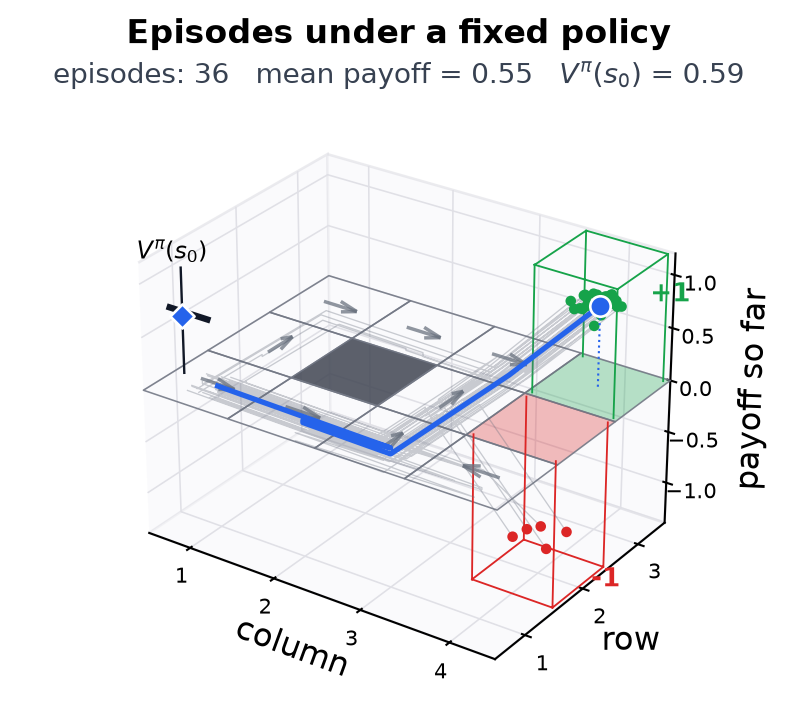
बीच में
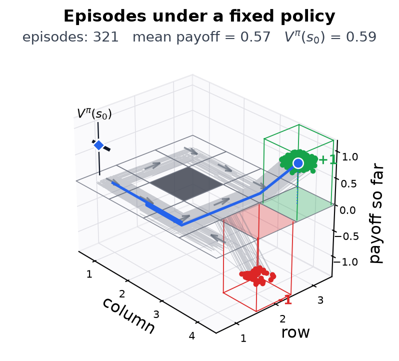
अंत
क्या देखें: फ़र्श पर 4x3 gridworld है (हरा cell \(+1\), लाल cell \(-1\), गहरा cell दीवार) और ऊँचाई अब तक का discounted payoff \(R(s_0) + \gamma R(s_1) + \dots\) है। Policy \(\pi\) (फ़र्श के तीर) fixed है, पर चाल noisy है: 0.8 probability से agent तीर की दिशा में जाता है, 0.1-0.1 से बगल में फिसल जाता है। पहला episode धीरे-धीरे चलता है: हर step पर \(-0.02\) जुड़ता है और अंत में terminal reward की छलाँग लगती है। फिर सैकड़ों episodes जुड़ते हैं: कुछ \(+1\) पर खत्म होते हैं, कुछ \(-1\) पर। इन सबके payoff का औसत (नीला निशान) धीरे-धीरे \(V^\pi(s_0)\) (काली रेखा) पर टिक जाता है। यही value function की परिभाषा है: payoff का expectation।
चलती animation: cs229_hindi/out/anim/L16_1.gif
Animation 16.2Iterative policy evaluation
शुरुआतबीच मेंअंत
क्या देखें: फ़र्श पर gridworld और तीरों में एक fixed (और काफ़ी खराब) policy \(\pi\) है। हर bar की ऊँचाई उस state का value estimate है; शून्य से नीचे लटके bars negative values हैं। शुरुआत \(V(s) = 0\) से होती है और हर sweep में सारे states पर Bellman equation का दायाँ हिस्सा लगाया जाता है: \(V(s) := R(s) + \gamma \sum_{s'} P_{s\pi(s)}(s') V(s')\)। देखिए कि जानकारी terminal states से बाहर की ओर फैलती है: \(+1\) के पास वाले bars ऊपर उठते हैं, \(-1\) की ओर ले जाने वाले states नीचे धँसते हैं। काले wire boxes linear system से निकला सही \(V^\pi\) हैं; कुछ ही sweeps में bars उनमें ठीक बैठ जाते हैं।
चलती animation: cs229_hindi/out/anim/L16_2.gif
Animation 16.3Discount \(\gamma\): near-sighted to far
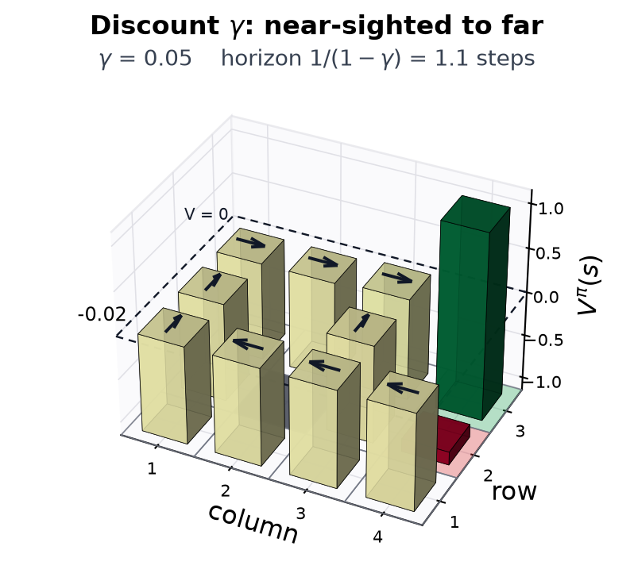
शुरुआतबीच में
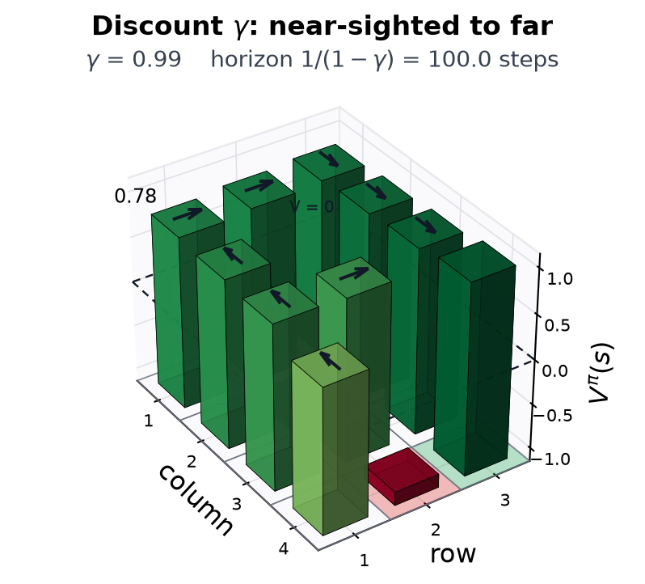
अंत
क्या देखें: Policy वही रहती है (notes वाली अच्छी policy, फ़र्श के तीर), सिर्फ़ discount factor \(\gamma\) को 0.05 से 0.99 तक बढ़ाया जा रहा है, और हर \(\gamma\) के लिए सही \(V^\pi\) दिखाया गया है। \(\gamma\) छोटा हो तो agent near-sighted है: सिर्फ़ \(+1\) से सटे state को कुछ value मिलती है, बाकी सब लगभग शून्य हैं क्योंकि दूर का reward \(\gamma^t\) से दबकर गायब हो जाता है। जैसे-जैसे \(\gamma\) 1 के पास जाता है, \(+1\) की रोशनी पूरे grid में फैल जाती है और start state (1,1) भी ऊँचा हो जाता है। Status में \(1/(1-\gamma)\) मोटे तौर पर बताता है कि agent कितने steps आगे तक देख रहा है।
चलती animation: cs229_hindi/out/anim/L16_3.gif
Animation 16.4One Bellman backup, close-up
शुरुआत
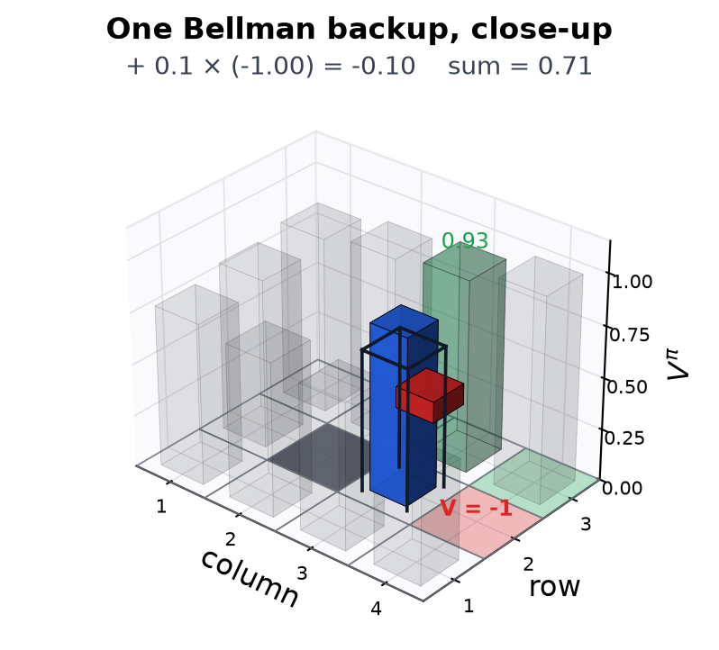
बीच मेंअंत
क्या देखें: यहाँ सिर्फ़ एक state \(s = (3,2)\) की Bellman equation को टुकड़ों में जोड़ा जा रहा है। Policy का action "ऊपर" है: 0.8 probability से agent \((3,3)\) में पहुँचता है, 0.1 से दीवार से टकराकर वहीं \((3,2)\) में रहता है, और 0.1 से \(-1\) वाले \((4,2)\) में गिरता है। हर अगले state के value bar का उतना हिस्सा कटकर \(s\) पर आता है जितनी उसकी probability है: \(0.8 \times 0.93\), फिर \(0.1 \times 0.69\), फिर \(0.1 \times (-1)\), जो ढेर को घटा देता है। अंत में ढेर को \(\gamma\) से गुणा करके \(R(s) = -0.02\) जोड़ते हैं, और वह काले wire box \(V^\pi(s) = 0.69\) में ठीक बैठ जाता है। ध्यान दें कि \(V^\pi(s)\) खुद अपनी equation के दाईं ओर भी आया है, इसीलिए सारे states को साथ में हल करना पड़ता है।
चलती animation: cs229_hindi/out/anim/L16_4.gif
Animation 16.5Changing the policy changes V
शुरुआत
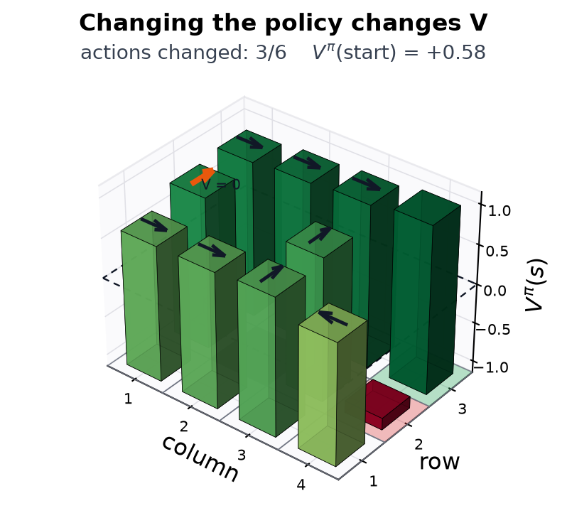
बीच मेंअंत
क्या देखें: Value function policy पर निर्भर है: हर policy का अपना landscape \(V^\pi\) है। शुरुआत notes वाली खराब policy से होती है, जिसमें नीचे के सारे states \(-1\) की ओर बहते हैं और उनके bars negative हैं। फिर एक-एक state का तीर बदला जाता है (नारंगी तीर), और हर बार पूरा \(V^\pi\) दोबारा निकाला जाता है। देखिए कि एक state का action बदलने से सिर्फ़ उसी का bar नहीं, उस तक पहुँचने वाले सारे states के bars उठ जाते हैं। अंत की policy हर state में पहली से बेहतर है: \(V^{\pi_2}(s) \ge V^{\pi_1}(s)\)। जो policy हर state में सबसे ऊँची हो, वही \(\pi^*\) है।
चलती animation: cs229_hindi/out/anim/L16_5.gif
Animation 16.6Optimal policy vs step reward
शुरुआतबीच मेंअंत
क्या देखें: अब bars optimal value function \(V^*\) हैं और तीर optimal policy \(\pi^*\), जो हर state में उस action को चुनती है जिससे अगले state का expected \(V^*\) सबसे बड़ा हो: तीर landscape की चढ़ाई की ओर हैं। यहाँ हर साधारण state का reward \(R(s)\) को 0 से \(-0.5\) तक घटाया जा रहा है। \(R(s) = 0\) पर agent को कोई जल्दी नहीं, वह \(-1\) से पूरी तरह बचता है (दीवार की ओर मुँह कर लेता है)। \(-0.02\) पर notes वाली policy मिलती है। Penalty बढ़ने पर एक-एक करके तीर पलटते हैं (नारंगी) और agent \(-1\) के पास से छोटा रास्ता लेने लगता है; बहुत बड़ी penalty पर \((4,1)\) से वह सीधे \(-1\) में कूद जाता है। यानी \(\pi^*\) reward function की बनावट से तय होती है।
चलती animation: cs229_hindi/out/anim/L16_6.gif
भाग 3
Python Example
इसे खुद चलाएँ: cs229_hindi/.venv/bin/python cs229_hindi/chapters/L16_mdp_bellman/example.py
"""Lecture 16 example: 4x3 gridworld पर policy evaluation शुरू से (सिर्फ़ NumPy).यहाँ इस्तेमाल किया गया gridworld बनाते हैं (noisy चाल: 0.8 सीधा, 0.1-0.1 बगल में)। फिर एक fixed policy काV^pi तीन तरीकों से निकालते हैं: (1) Bellman linear system हल करके, (2) Bellman equation को बार-बारलगाकर, (3) Monte Carlo rollouts से। अंत में दो policies की तुलना करते हैं।"""importnumpyasnpimportmatplotlib.pyplotaspltrng=np.random.default_rng(0)GAMMA=0.99# ---------- 1. Gridworld: state = (column, row), (1, 1) नीचे-बाएँ कोने में ----------COLS,ROWS=4,3WALL,GOAL,PIT,START=(2,2),(4,3),(4,2),(1,1)states=[(c,r)forrinrange(1,ROWS+1)forcinrange(1,COLS+1)if(c,r)!=WALL]index={s:ifori,sinenumerate(states)}n_states=len(states)# 11 statesterminal=[index[GOAL],index[PIT]]moves={"^":(0,1),">":(1,0),"v":(0,-1),"<":(-1,0)}actions=list(moves)# क्रम घड़ी की दिशा में: ^ > v <R=np.full(n_states,-0.02)# हर साधारण state का rewardR[index[GOAL]],R[index[PIT]]=1.0,-1.0defmove(s,a):"""Action a की दिशा में एक कदम; दीवार या किनारे से टकराएँ तो वहीं रहें।"""nxt=(s[0]+moves[a][0],s[1]+moves[a][1])returnnxtifnxtinindexelses# ---------- 2. Transition probabilities P[a, s, s'] ----------# Terminal states की rows zero रहती हैं: वहाँ reward मिलकर episode खत्म हो जाता है।P=np.zeros((4,n_states,n_states))forsinstates:ifsin(GOAL,PIT):continuefork,ainenumerate(actions):left,right=actions[(k-1)%4],actions[(k+1)%4]# a के दोनों perpendicularfordirection,probin((a,0.8),(left,0.1),(right,0.1)):P[k,index[s],index[move(s,direction)]]+=probdefmake_policy(rows):"""ऊपर की row से नीचे की ओर लिखे तीरों को action indices के array में बदलें।"""pi=np.zeros(n_states,dtype=int)fork,lineinenumerate(rows):forc,chinenumerate(line,start=1):if(c,ROWS-k)inindexandchinmoves:pi[index[(c,ROWS-k)]]=actions.index(ch)returnpipolicies={"1 (good)":make_policy([">>>.","^.^.","^<<<"]),# notes की optimal policy"2 (bad)":make_policy([">>>.","v.>.",">>^^"])}# notes की खराब policy# ---------- 3. Policy evaluation, तरीका 1: linear system (I - gamma P_pi) V = R ----------defevaluate_exact(pi):P_pi=P[pi,np.arange(n_states)]# row s = P_{s, pi(s)}returnnp.linalg.solve(np.eye(n_states)-GAMMA*P_pi,R)# ---------- 4. तरीका 2: Bellman equation को बार-बार लगाना ----------defevaluate_iterative(pi,sweeps):P_pi=P[pi,np.arange(n_states)]V,history=np.zeros(n_states),[]for_inrange(sweeps):V=R+GAMMA*P_pi@V# सारे states एक साथ update (synchronous)history.append(V.copy())returnV,history# ---------- 5. तरीका 3: Monte Carlo, यानी सचमुच episodes चलाकर payoff का औसत ----------defrollout(pi,start=START):i,discount,payoff=index[start],1.0,0.0whileTrue:payoff+=discount*R[i]# gamma^t * R(s_t)ifiinterminal:returnpayoff,ii=rng.choice(n_states,p=P[pi[i],i])# noisy चालdiscount*=GAMMAdefshow(V,pi):forrinrange(ROWS,0,-1):cells=[]forcinrange(1,COLS+1):if(c,r)==WALL:cells.append(" ####")else:i=index[(c,r)]cells.append(f"{V[i]:+.2f}{' 'ifiinterminalelseactions[pi[i]]}")print(" "+" ".join(cells))exact,histories={},{}forname,piinpolicies.items():exact[name]=evaluate_exact(pi)histories[name]=evaluate_iterative(pi,40)[1]print(f"Policy {name}: linear system से V^pi (तीर = policy का action)")show(exact[name],pi)print("\nIterative evaluation: max |V_k - V_exact|")print(" sweeps k policy 1 policy 2")forkin(1,5,10,20,40):gaps=[np.abs(histories[name][k-1]-exact[name]).max()fornameinpolicies]print(f" {k:8d}{gaps[0]:.2e}{gaps[1]:.2e}")print("\nMonte Carlo check: start (1,1) से 4000 episodes")print(" policy exact V(start) MC mean +- std.err ends at +1")forname,piinpolicies.items():runs=[rollout(pi)for_inrange(4000)]payoffs=np.array([pforp,_inruns])at_goal=np.mean([end==index[GOAL]for_,endinruns])print(f" {name:<10}{exact[name][index[START]]:+.4f}{payoffs.mean():+.4f} +- "f"{payoffs.std()/np.sqrt(len(payoffs)):.4f}{100*at_goal:5.1f}%")# ---------- 6. Bellman equation को हाथ से जाँचें: state (3,1), policy 1 का V ----------V=exact["1 (good)"]s=index[(3,1)]q={a:P[k,s]@Vfork,ainenumerate(actions)}# sum_s' P_sa(s') V(s')print("\nState (3,1) पर sum_s' P_sa(s') V(s'): "+" ".join(f"{a}{q[a]:.3f}"forainactions))print(f"सबसे अच्छा action '<' है, और R + gamma * {q['<']:.3f} = {R[s]+GAMMA*q['<']:.3f} = V(3,1)")better=np.all(exact["1 (good)"]>=exact["2 (bad)"])print(f"क्या policy 1 हर state में policy 2 से अच्छी या बराबर है? {'हाँ'ifbetterelse'नहीं'}")# ---------- 7. Plots ----------fig,axes=plt.subplots(1,3,figsize=(13,3.9))forax,(name,pi)inzip(axes,policies.items()):grid=np.full((ROWS,COLS),np.nan)for(c,r),iinindex.items():grid[r-1,c-1]=exact[name][i]ax.imshow(grid,origin="lower",cmap="RdYlGn",vmin=-1,vmax=1,extent=(0.5,4.5,0.5,3.5))ax.add_patch(plt.Rectangle((1.5,1.5),1,1,color="0.3"))for(c,r),iinindex.items():ax.text(c,r-0.22,f"{exact[name][i]:.2f}",ha="center",va="center",fontsize=10)ifinotinterminal:dx,dy=moves[actions[pi[i]]]ax.arrow(c-0.17*dx,r+0.12-0.17*dy,0.34*dx,0.34*dy,head_width=0.11,color="k")ax.set(title=f"V^pi of policy {name}",xticks=[1,2,3,4],yticks=[1,2,3],xlabel="column",ylabel="row")fornameinpolicies:gap=[np.abs(h-exact[name]).max()forhinhistories[name]]axes[2].semilogy(range(1,len(gap)+1),gap,"o-",ms=3,label=f"policy {name}")axes[2].set(xlabel="sweep k",ylabel="max |V_k - V_exact|",title="Iterative evaluation converges")axes[2].legend()fig.tight_layout()fig.savefig("result.png",dpi=130)
OUTPUT
Policy 1 (good): linear system से V^pi (तीर = policy का action)
+0.86 > +0.90 > +0.93 > +1.00
+0.82 ^ #### +0.69 ^ -1.00
+0.78 ^ +0.75 < +0.71 < +0.49 <
Policy 2 (bad): linear system से V^pi (तीर = policy का action)
+0.52 > +0.73 > +0.77 > +1.00
-0.90 v #### -0.82 > -1.00
-0.88 > -0.87 > -0.85 ^ -1.00 ^
Iterative evaluation: max |V_k - V_exact|
sweeps k policy 1 policy 2
1 9.52e-01 9.75e-01
5 8.78e-01 8.01e-01
10 3.62e-01 4.28e-02
20 6.66e-04 4.25e-05
40 1.24e-10 1.99e-11
Monte Carlo check: start (1,1) से 4000 episodes
policy exact V(start) MC mean +- std.err ends at +1
1 (good) +0.7803 +0.7806 +- 0.0036 98.6%
2 (bad) -0.8846 -0.8947 +- 0.0082 8.4%
State (3,1) पर sum_s' P_sa(s') V(s'): ^ 0.674 > 0.532 v 0.691 < 0.736
सबसे अच्छा action '<' है, और R + gamma * 0.736 = 0.709 = V(3,1)
क्या policy 1 हर state में policy 2 से अच्छी या बराबर है? हाँ